4 Bioprinting
In this chapter
Bioprinting builds tissues layer by layer from bioinks, materials that contain living cells. It grew out of the additive manufacturing methods developed for plastics and metals, so this chapter starts with those methods and their medical uses: anatomical models, patient-specific implants, dental devices and printed drugs. It then turns to the bioinks themselves and to the main bioprinting technologies — inkjet, extrusion, laser-assisted and light-based printing — before discussing how printed tissues can be vascularised, how they interact with the immune system, and how scaffolds are designed for a target tissue.
4.1 Manufacturing Methods
From the Bronze Age to the digital era, manufacturing has always revolved around one question: how can raw matter be transformed into functional form? In classical industry, this transformation has relied mainly on subtractive and moulding techniques — methods that remove or cast material into shape.
The past few decades introduced a radically different paradigm: additive manufacturing (AM) (Figure 4.1). Instead of carving or moulding, AM creates objects layer by layer, guided entirely by digital blueprints. For engineers in the life sciences, this shift opened the path to bioprinting—printing not only polymers or metals, but living matter.
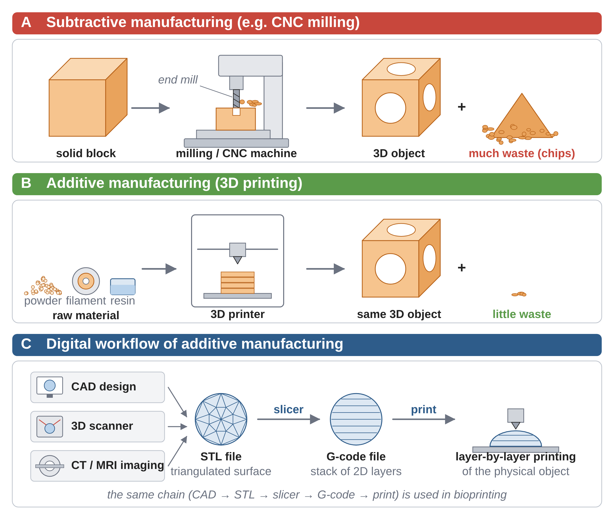
4.1.1 Subtractive Manufacturing
In subtractive manufacturing, an object is sculpted from a solid block by removing material. A CNC mill (Computer Numerical Control) interprets digital designs—encoded in G-code—to move a cutting head along three orthogonal axes (X, Y, Z) (Figure 4.2). Each pass removes thin layers of material until the desired 3D geometry appears.
Figure 4.2 shows how such a micromill turns a design into a device. In Figure 4.2A, a CAD drawing is converted by CAM software into a toolpath and then into G-code, which the CNC controller executes: the spindle rotates the end mill and moves it up and down along the Z axis, while the workpiece, clamped on the worktable, travels in X and Y. The close-up in Figure 4.2B shows what happens at the tool tip, where the rotating end mill is fed through a PMMA or COC sheet and leaves a channel behind it, while the removed material is carried away as chips. Figure 4.2C shows the kind of part that results: a thermoplastic microfluidic chip in which inlet and outlet ports, narrow and wide channels and a chamber are all milled into the same piece.
CNC micromilling is still widely used in microfabrication for rapid prototyping of microfluidic devices, particularly when transparent thermoplastics such as cyclic olefin copolymers (COC, e.g. TOPAS) or PMMA are required (Guckenberger et al., 2015).
To mill such a chip, the machine is driven by a G-code program like the one in Figure 4.3, whose syntax is explained in Box 4.1. Figure 4.3A lists a short program in which each line is colour-coded by its role: settings that fix the units and the coordinate system (G21, G90), machine functions that switch the spindle on and off and end the program (M3, M5, M30), rapid positioning moves without cutting (G00), straight cutting moves at a set feed rate (G01) and an anticlockwise arc (G03). Figure 4.3B plots the resulting toolpath in top view: the tool moves rapidly to its start point, plunges 1 mm into the material, cuts a straight line, an arc and a second straight line, and is then retracted. Reading the two panels side by side shows how every line of code becomes one movement of the tool.
Advantages:
Excellent precision (micrometre scale). Tolerances of a few micrometres are routine, because the tool position is set by precision lead screws and encoders and the cut surface is defined directly by the geometry of the rotating tool.
Broad material compatibility (metals, polymers, wood). The same machine cuts metals, thermoplastics such as PMMA and COC, ceramics and wood; only the tool, the spindle speed and the feed rate change. A prototype can therefore be tested in the material of the final device.
Familiar industrial infrastructure. CNC machines, tooling and CAM software have been workshop standards for decades, so machines, trained operators and material data are widely available and a design can be sent out for manufacture almost anywhere.
Limitations:
High material waste. Everything that is not part of the final object leaves the machine as chips, so a small part milled from a large block wastes most of the stock. With expensive materials such as titanium alloys this dominates the cost.
Tool wear and heat generation. The cutting edge blunts with use and has to be replaced regularly, and friction at the tool tip heats the workpiece. In thermoplastics this heat can melt or smear the edges of narrow channels, so feed rate and cooling must be chosen with care.
Limited geometrical freedom (no internal cavities). The tool must reach every surface it cuts, so enclosed voids, undercuts and internal channel networks cannot be made in one piece. A closed microfluidic chip is therefore milled as an open channel and sealed with a lid in a second step.
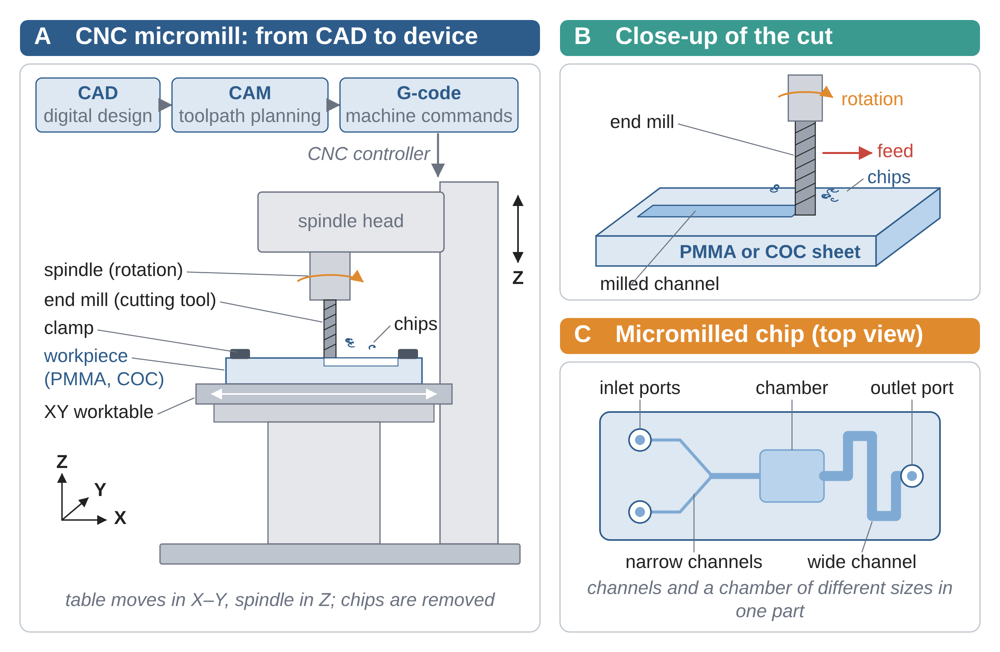
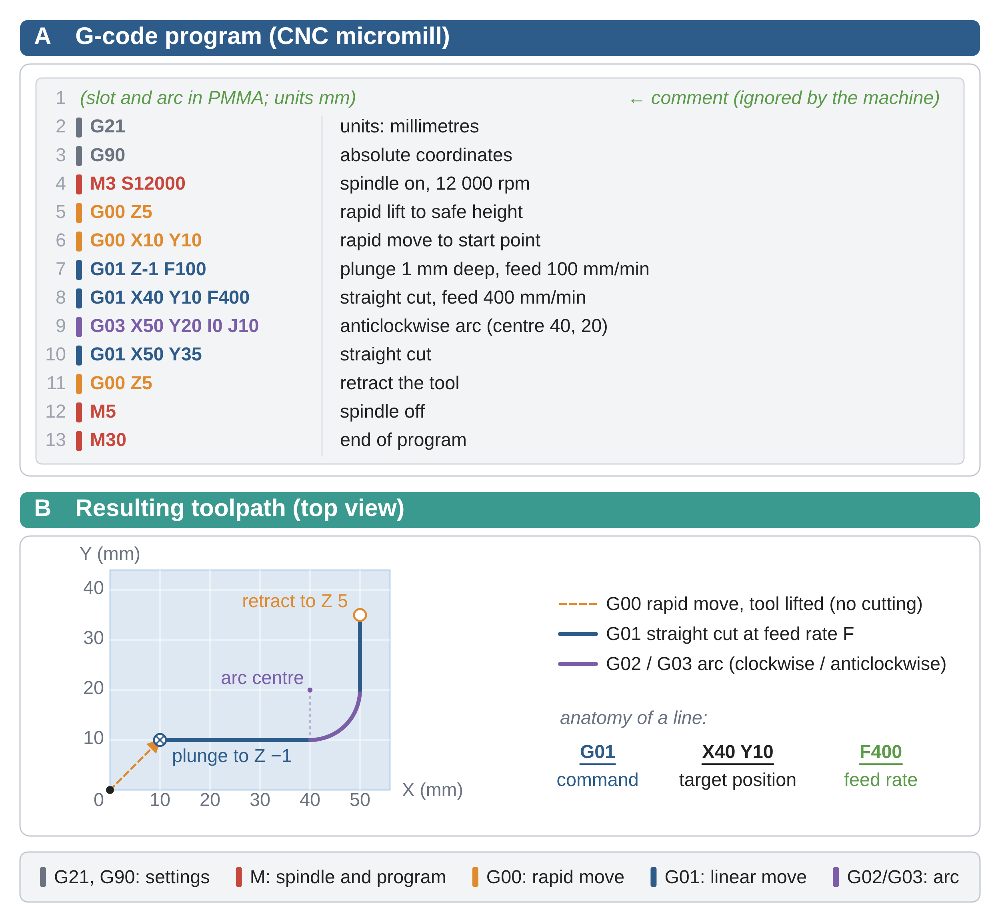
4.1.2 Moulding and Extrusion
Moulding — pouring or pressing material into a cavity — is another long-standing technique. In the polymer industry, melt extrusion is a key process: thermoplastic pellets are heated, liquefied, and forced through a die by a rotating screw to produce continuous filaments. Those filaments are later cut, coiled, or used as feedstock for FDM 3D printing (Section 4.2.3). In pharmaceutical manufacturing, the same principle is used in hot-melt extrusion (HME): an active pharmaceutical ingredient is mixed with a polymer matrix in a heated twin-screw extruder, and the extrudate is shaped into pellets, films, filaments for FDM printing or drug-loaded implants (Figure 4.4).
Moulding ensures reproducibility and low cost, but new geometries require new moulds—a serious limitation in research environments demanding rapid iteration.
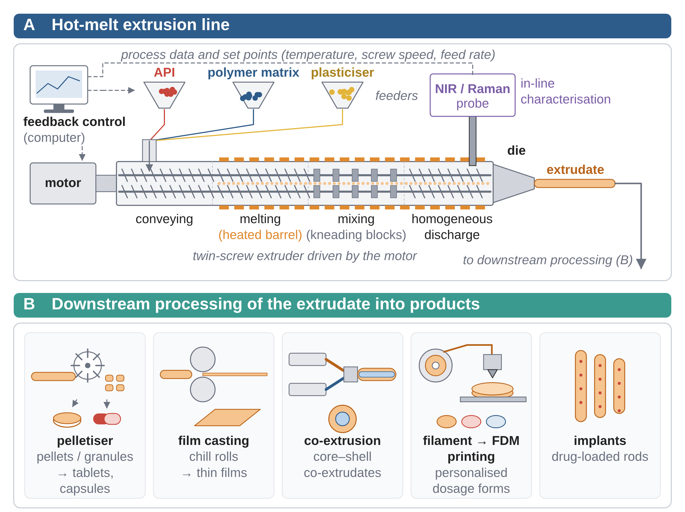
4.1.3 Additive Manufacturing
In additive manufacturing, material is added precisely where needed. The process begins with a digital model, which is exported from CAD software, a 3D scanner or medical imaging as an STL file (from “stereolithography”, also read as “standard tessellation language”), a mesh of triangles that describes the surface of the object.
A slicer program then converts the STL model into sequential 2D layers and translates them into G-code commands (Figure 4.1C). A printer deposits or solidifies material layer-by-layer following those instructions, until the 3D object is complete (Figure 4.5). Because only the required material is used, AM produces far less waste than subtractive manufacturing. It also enables internal structures and complex geometries impossible to mill or mould. Table 4.1 compares subtractive manufacturing, moulding/extrusion and additive manufacturing side by side.
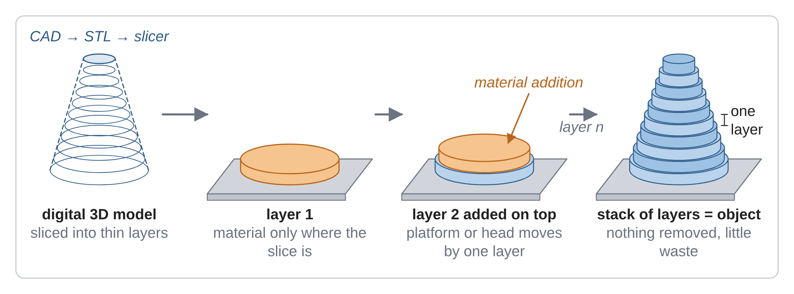
| Property | Subtractive (CNC) | Moulding / Extrusion | Additive (3D printing) |
|---|---|---|---|
| Principle | Material removed from solid block | Material cast or extruded into mould | Material deposited layer-by-layer |
| Design flexibility | Limited – internal cavities difficult | Medium – new mould for each design | Very high – geometry defined digitally |
| Material efficiency | Low (high waste) | High | Very high |
| Surface finish | Excellent | Good | Variable (resolution-dependent) |
| Scalability | Industrial mass production | Industrial mass production | Rapid prototyping & personalisation |
| Typical applications | Metal parts, microfluidic chips | Plastic components, tubing | Patient-specific implants, scaffolds, prototypes |
4.1.4 From Subtractive to Additive Thinking
Moving from subtractive to additive design changes how engineers conceive objects. Instead of asking what to remove, they ask what to grow. This perspective aligns naturally with biology, where tissues are not carved but assembled cell by cell. Additive manufacturing thus became the bridge between mechanical engineering and tissue engineering—culminating in bioprinting.
Figure 4.1 contrasts the workflows of subtractive and additive manufacturing. In the former, unwanted material becomes waste; in the latter, each layer builds towards the final construct, echoing cellular growth.
4.2 3D Printing Methods
Additive manufacturing has diversified into a family of techniques, each using a different physical principle to build up material. The international standard ISO/ASTM 52900 groups them into seven process categories: vat photopolymerisation, material extrusion, material jetting, binder jetting, powder bed fusion, directed energy deposition and sheet lamination (ISO/ASTM, 2021). In biomedical engineering, most printers follow one of five mechanisms (Figure 4.6): stereolithography (SLA) and digital light processing (DLP), both forms of vat photopolymerisation; selective laser sintering (SLS), a powder bed fusion process; fused deposition modelling (FDM), the best-known form of material extrusion; and computed axial lithography (CAL), a volumetric form of vat photopolymerisation. Jetting processes, which deposit droplets of photopolymer (material jetting) or of a liquid binder onto a powder bed (binder jetting), complete the picture. The methods differ in their energy source, compatible materials and achievable resolution, but all start from the same digital model (CAD → STL), which is sliced into machine instructions: G-code for most printers, or a series of projection images for DLP and CAL.
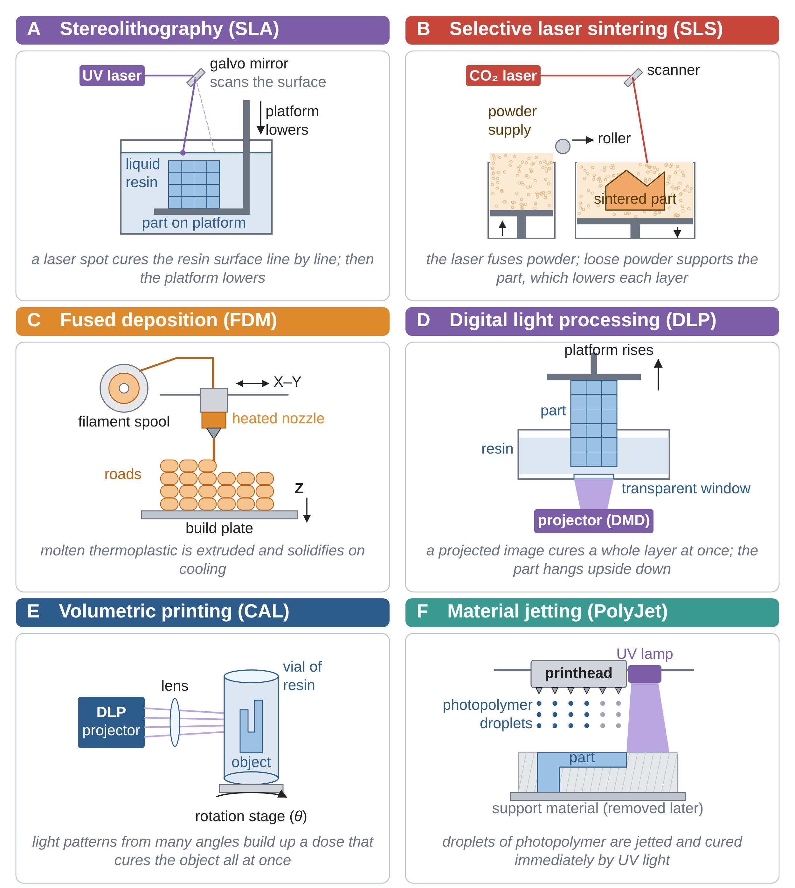
4.2.1 Stereolithography (SLA)
SLA was the first commercial 3D printing technology, patented by Charles Hull (filed in 1984, granted in 1986; Hull, 1986). A vat of liquid photopolymer resin is exposed to a focused ultraviolet (UV) laser that scans the surface of the liquid according to the digital slice pattern (Figure 4.7). Wherever the laser hits, the resin polymerises and solidifies; the platform then moves incrementally in the z-direction to expose a new layer of resin.
Figure 4.7 compares the two ways in which a stereolithography printer can be arranged. In the free-surface, or bottom-up, configuration (Figure 4.7A), the laser is steered by a scanner mirror over the top of the resin bath; each layer cures at the free resin surface, and the platform then sinks by one layer so that fresh resin flows over the part. In the constrained-surface, or top-down, configuration (Figure 4.7B), the image of a complete layer is projected from below via a digital micromirror device through a transparent, non-stick window in the floor of the vat. The layer cures in the thin gap between the window and the part, after which the platform lifts the part by one layer, so that the object is built upside down; this is also the arrangement used in DLP (Section 4.2.4). Both rely on the same photopolymerisation, but the choice of set-up affects print speed, resolution, surface quality and the volume of resin needed. The labels "bottom-up" and "top-down" refer to the direction in which the object grows from the platform, not to the direction of the light, and some authors use them the other way round; naming the set-ups by where curing takes place (free surface or constrained surface) avoids confusion. Both arrangements appear in this chapter: Figure 4.27A shows curing through the transparent floor of the vat, and Figure 4.30A curing at the free surface.
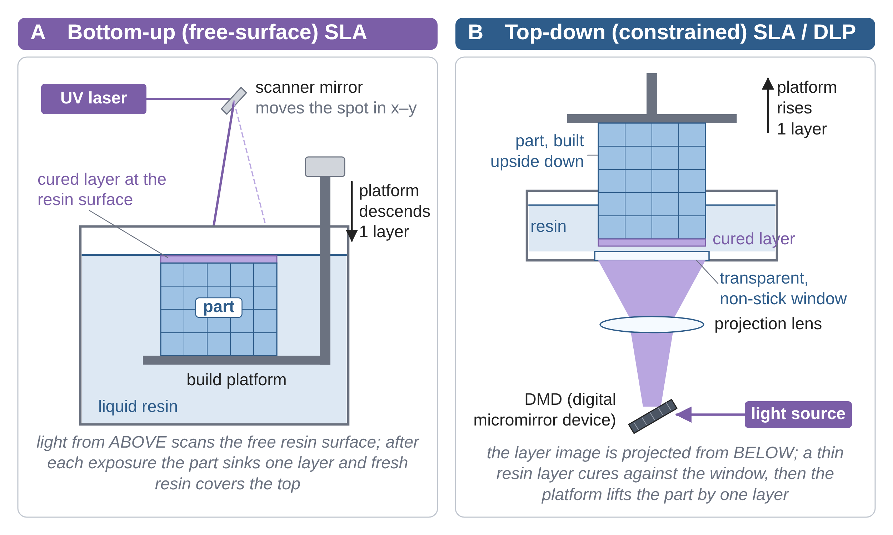
Resolution and accuracy depend on both the laser spot and the resin photochemistry. Radicals generated by UV exposure can diffuse beyond the laser focus, leading to over-curing; precise formulation of photoinitiator concentration and exposure time controls this effect. SLA can achieve features smaller than 50 µm, ideal for microfluidics, dental prosthetics, and surgical models.
Advantages
High resolution and smooth surfaces. The laser spot can be focused to a few tens of micrometres, and the liquid resin levels itself before each layer, so features below 100 µm are routine and the printed surface needs little finishing.
Suitable for transparent resins. Many acrylate and epoxy resins cure to an optically clear solid, which suits microfluidic chips, optical components and models that have to be inspected from the outside.
Limitations
Photopolymer chemistry often not biocompatible. The monomers, the photoinitiator and the unreacted residues left in the part are frequently cytotoxic, so parts intended for cell culture need thorough extraction or a coating, and cells cannot normally be suspended in the resin itself.
Requires post-curing and solvent cleaning. Printed parts emerge covered in liquid resin, which is washed off with a solvent such as isopropanol, and the part is then exposed to UV to complete the polymerisation. Both steps add time and produce solvent waste.
Thermoset products cannot be recycled. Photopolymerisation creates a permanently crosslinked network that cannot be melted and reshaped, so failed prints and support structures become waste instead of feedstock.
4.2.2 Selective Laser Sintering (SLS)
SLS uses a laser beam to fuse powdered materials—polymers, metals, or ceramics—without melting them completely. A thin layer of powder is spread across a platform; the laser scans it, locally heating the particles until they fuse. After each layer, the platform lowers and a new powder layer is spread (Figure 4.8). Because unsintered powder supports the part during fabrication, SLS can produce overhangs and internal cavities without additional support.
Typical polymer powders: polyamide (nylon) and polyether ether ketone (PEEK). For metals: titanium and cobalt–chromium alloys.
Advantages
No need for separate support material. The unsintered powder around the part supports overhangs and bridges during the build, so no support structures have to be designed, printed and removed; the loose powder is simply brushed or blown away afterwards.
Strong, durable parts. Sintering fuses the particles into a nearly fully dense solid whose mechanical properties approach those of injection-moulded material, so parts can serve as functional components and not only as models.
Compatible with high-melting materials. Because the heat is delivered locally by the laser, polymers such as PA12 and PEEK, and also metals and ceramics, can be processed. This extends the method to sterilisable instruments and implants.
Limitations
Rough surface (powder granularity). The surface consists of partly fused particles, so its roughness is of the order of the particle size, typically 20--60 µm. Fine features are blurred and parts usually need bead blasting or polishing.
High laser power required. The powder bed is held just below its melting point and the laser must supply the remaining energy, which calls for tens of watts and a well-insulated heated chamber. Such machines are expensive to buy and to run.
Expensive powder recovery systems. Unsintered powder is degraded by the heat of the build and can only be reused after sieving and blending with fresh material, which requires dedicated handling equipment and quality control.
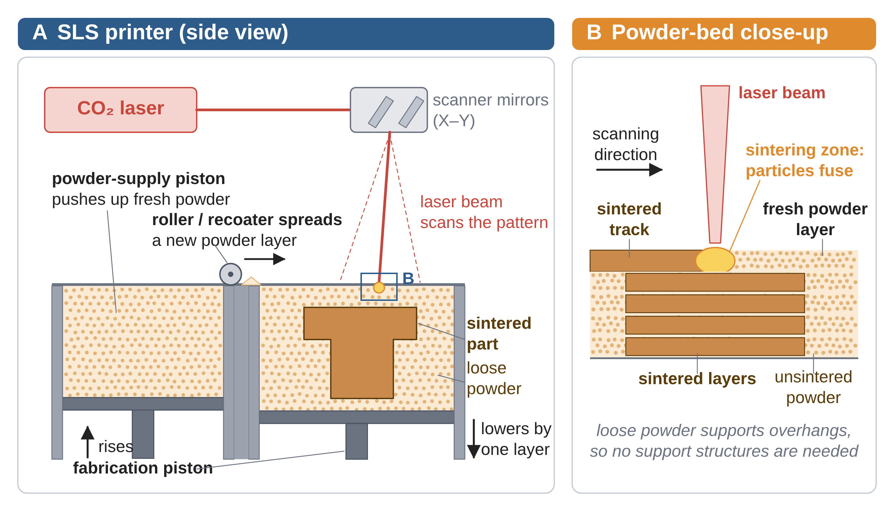
4.2.3 Fused Deposition Modelling (FDM)
The most widespread technique, FDM (also called fused filament fabrication, FFF), extrudes molten thermoplastic through a fine nozzle, depositing it line by line on a heated platform (Figure 4.9) (Aho et al., 2019; Goole and Amighi, 2016; Jamróz et al., 2018; Jennotte et al., 2020). After each layer solidifies, the nozzle rises by one layer height and repeats the process.
Figure 4.9A shows the main parts of such a printer. Filament is drawn from a spool into an extruder that moves on an XYZ gantry; it is melted in the hot end and laid down on a heated build plate, where a cooling fan solidifies it, while a control unit drives the motors and heaters. The close-up in Figure 4.9B shows how the melt is produced: two drive gears grip the solid filament and push it through a cooled heat sink into a heater block, in which a heater and a thermistor keep the temperature at its set point. The molten polymer leaves the nozzle as a road that solidifies on cooling as the nozzle moves along its path, so the nozzle opening determines how fine each deposited line can be.
Common materials: polylactic acid (PLA), polycaprolactone (PCL), acrylonitrile butadiene styrene (ABS). Layer thickness typically 100–300 µm, defined by nozzle diameter.
Advantages
Simple and inexpensive. The mechanism is simply a heated nozzle on a motion stage, so machines and filament are cheap, the hardware is robust, and prints can be run in an ordinary laboratory without special ventilation.
Wide material selection. Filaments are available in PLA, ABS, PETG, PCL, nylon, flexible elastomers and composites filled with ceramic or carbon fibre, so one machine can make anything from a disposable holder to a degradable scaffold.
Easy multimaterial printing. A second extruder allows two materials in one part, for example a rigid body with flexible seals, or a structure printed together with a water-soluble support that is later dissolved away.
Limitations
Limited resolution (nozzle diameter constraint). The deposited strand cannot be much narrower than the nozzle, typically 0.25--0.4 mm, so thin walls and fine detail are out of reach and the individual strands stay visible on the surface.
Thermal warping between layers. Each strand is laid down hot and shrinks as it cools, which pulls the part out of shape and can separate layers. The effect is worst in large flat parts and in materials with high shrinkage such as ABS, and is reduced by a heated bed and chamber.
Support structures required for overhangs. Molten material cannot be deposited into mid-air, so anything overhanging by more than roughly 45° needs a printed support that is later broken or dissolved away, leaving marks on the surface.
Despite its simplicity, FDM remains indispensable for biomedical research because it enables fast, cheap fabrication of holders, moulds, and scaffolds.
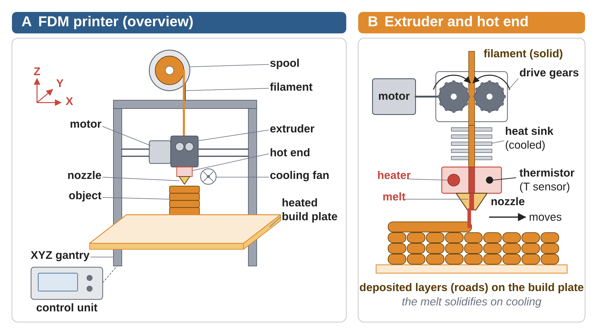
4.2.4 Digital Light Processing (DLP)
DLP resembles SLA but uses an entire projected image instead of a scanning laser. A digital micromirror device (DMD) projects a patterned light mask, usually from below through the transparent floor of the vat, polymerising an entire layer simultaneously (Figure 4.10). This approach accelerates fabrication and produces intricate features.
In the printer of Figure 4.10A, the light is projected from below. A computer sends each slice image to the DMD, which reflects light from the source through the projection optics and a transparent, non-stick window into the resin vat. A complete layer cures against the underside of the growing part, which hangs upside down from the build platform, and the platform then rises by one layer before the next image is projected. Figure 4.10B explains how the DMD forms that image: it is an array of micromirrors that can each be tilted to an ‘on’ or an ‘off’ position. An ‘on’ mirror reflects its light through the lens to the resin, whereas an ‘off’ mirror sends it to an absorber. Each mirror thus acts as one pixel of the projected image and cures one voxel of the layer, and because all pixels are exposed at the same time, a whole layer is cured in a single exposure.
Modern DLP systems employ blue or near-UV LEDs and achieve features <25 µm. In biomedical engineering, DLP is applied to microneedle arrays, soft scaffolds, and microfluidic chips.
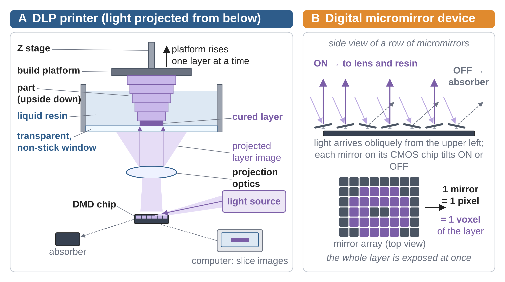
Advantages
Faster than SLA (whole-layer exposure). The micromirror array projects a whole layer in one flash instead of tracing it point by point, so the build time depends on the number of layers and not on the area that has to be cured.
High resolution. Each micromirror defines one pixel in the build plane, typically 20--50 µm across, and the projected image stays sharp over the whole field.
Smooth surfaces. Every layer is cured against a flat transparent window, so the sidewalls show little of the stepping seen in filament-based printing and parts often need no finishing at all.
Limitations
Limited build area: the projected image has a fixed number of pixels (the micromirrors of the DMD), so a larger build area means larger pixels and a lower resolution.
Photoinitiator toxicity for biological systems. The initiators that cure a resin quickly also generate radicals that damage cells, so the initiator and the exposure dose are always a compromise between cure speed and cell survival; water-soluble initiators such as LAP are preferred for cell-laden resins.
Light scattering reduces accuracy at depth: cells and other particles in the bioink scatter the light sideways, so the cured region widens and its edges blur, more so in thick layers and deep in the vat.
4.2.5 Computed Axial Lithography (CAL)
Computed axial lithography (CAL) takes a conceptual leap beyond layering. It reconstructs an entire 3D object simultaneously using a rotating light field (Figure 4.11). A cylindrical container of resin is illuminated from multiple angles by synchronised light projections representing tomographic slices. Where the cumulative dose exceeds the polymerisation threshold, resin solidifies—producing a full 3D object within tens of seconds (Kelly et al., 2019).
How can the dose reach the threshold everywhere inside the object, but nowhere outside it? Each projected pattern passes through the whole vial, so every point in the resin receives light from all projection angles during one rotation. The patterns are calculated in the same way as a CT scan is reconstructed, but in reverse: the computer starts from the 3D object and finds the set of 2D images whose doses, summed over all angles, are high inside the object and low outside it. The resin is made to respond with a sharp threshold. Dissolved oxygen scavenges the first radicals that the photoinitiator produces, so polymerisation only starts once the local oxygen is used up; below this dose nothing cures, and above it the resin gels. The resin must also absorb only weakly, so that the light is not exhausted before it reaches the centre of the vial (Kelly et al., 2019).
Advantages
Rapid (under 1 minute). The object forms during a single rotation of the vial, so the build time is set by the total light dose rather than by a number of layers; centimetre-scale objects are finished in seconds to about a minute.
Isotropic resolution (no layers). Nothing is deposited layer by layer, so there are no layer lines and no weak interfaces, and both the resolution and the mechanical properties are the same in every direction.
Gentle on encapsulated cells. There is no nozzle, no shear during deposition and no contact with the forming object, and the exposure is brief, so suspended cells experience far less stress than in extrusion printing.
Limitations
Requires optically transparent resin. The projections have to reach the centre of the vial, so the resin must be weakly absorbing and free of scattering particles. Dense cell suspensions and opaque fillers blur the dose distribution and limit how large an object can be made.
Computation and calibration: the set of projections must be calculated for every object, as an inverse CT reconstruction, and corrected for light absorption and the optics of the set-up.
CAL is still mainly a research technique, but it has already been adapted to cell-laden hydrogels, where entire tissue structures form in one exposure (volumetric bioprinting, Section 4.4.4.4). Table 4.2 summarises the five printing methods of this section by material state, energy source, resolution and speed.
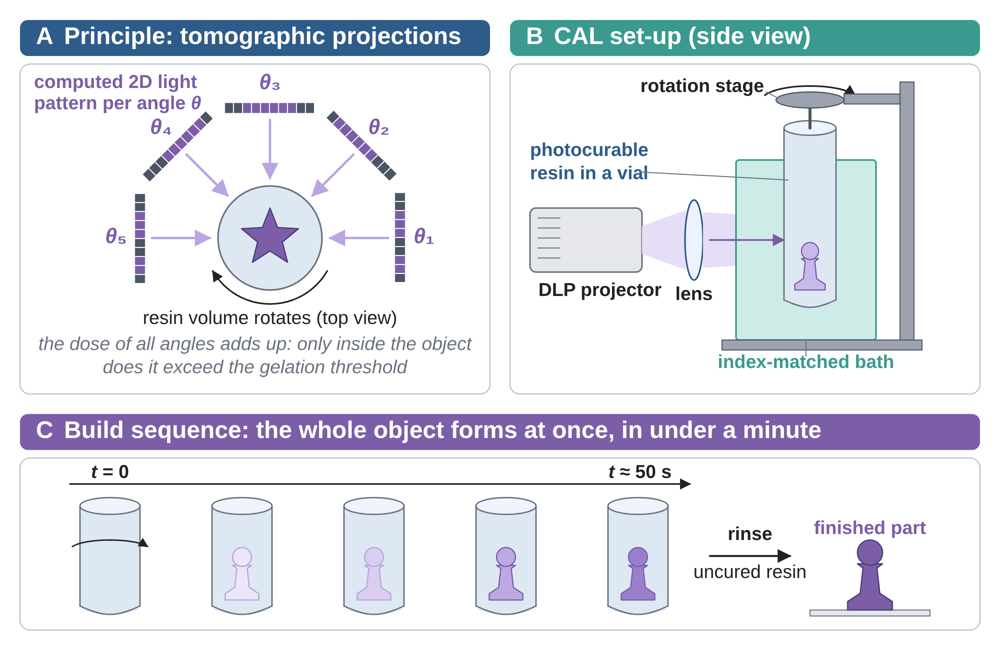
| Technique | Material State | Energy Source | Typical Resolution | Speed | Typical Materials | Biomedical Applications |
|---|---|---|---|---|---|---|
| SLA | Liquid resin | UV laser | 25–100 µm | Medium | Photopolymers | Dental moulds, microfluidics |
| SLS | Powder | Infrared (CO₂) laser | 50–200 µm | Medium | Nylon, PEEK, Ti alloys | Bone implants, prosthetics |
| FDM | Filament | Thermal | 100–300 µm | High | PLA, PCL, ABS | Holders, scaffolds |
| DLP | Liquid resin | Projected light | 10–50 µm | Very high | Methacrylate resins | Microneedles, soft scaffolds |
| CAL | Liquid resin | Tomographic light projections | ≈ 50–300 µm, no layers | Extremely high | Transparent resins | Volumetric bioprinting |
4.3 3D Printing for Medical and Pharmaceutical Applications
4.3.1 From Prototypes to Personalised Medicine
Modern healthcare increasingly demands individualisation. Every patient differs in anatomy, metabolism, and response to therapy. Traditional manufacturing—optimised for mass production—struggles to meet such variability. Three-dimensional printing (3DP) bridges this gap by translating digital patient data into personalised physical models.
The workflow begins with medical imaging—typically computed tomography (CT) or magnetic resonance imaging (MRI)—which provides volumetric datasets of patient anatomy. In CT, X-ray images taken from many angles around the patient are combined by a computer into cross-sectional images whose grey value reflects how strongly each tissue absorbs X-rays, so bone stands out clearly. MRI places the patient in a strong magnetic field and excites the hydrogen nuclei of water and fat with radio-frequency pulses; the signal they emit as they return to equilibrium is located in space with magnetic field gradients, which gives excellent soft-tissue contrast without ionising radiation. These images are segmented and converted into STL files defining printable geometries. A 3D printer fabricates models, implants, or drug-delivery systems tailored to the individual (Figure 4.12).
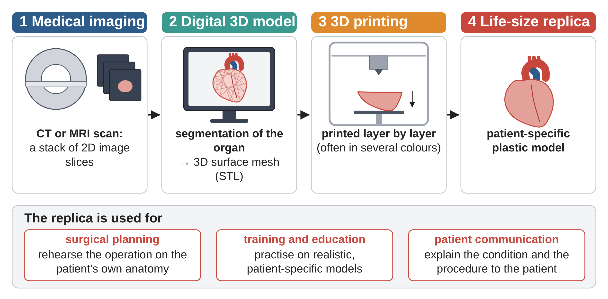
4.3.2 Anatomical Models and Surgical Planning
Before complex interventions, surgeons can practise on exact anatomical replicas of their patient’s organs. These models reproduce shape, texture, and sometimes mechanical properties of tissue. A surgeon planning a delicate intervention—such as separating conjoined twins or repairing a congenital heart defect—can physically hold the model, rehearse incisions, and anticipate complications.
Educational use: 3D printed organs have revolutionised medical training. Readers can explore patient-specific anatomy repeatedly at low cost.
Patient communication: Plastic replicas help explain diagnoses and planned procedures, improving patient understanding and reducing anxiety. Figure 4.12 illustrates this educational and clinical workflow.
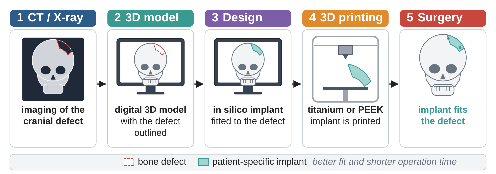
4.3.3 Metal Printing for Implants
Traditional implants are machined in standard sizes from titanium alloys. Additive manufacturing enables patient-specific metallic implants, perfectly matching bone geometry obtained from CT data.
Figure 4.13 follows this digital route for a cranial defect in five steps. CT or X-ray images of the skull first capture the defect (step 1) and are converted into a digital 3D model in which the missing bone is outlined (step 2). A patient-specific implant is then designed in silico to match the margins of the defect (step 3) and 3D printed, for example in titanium by powder-bed fusion or in PEEK (step 4). During surgery the implant is fixed in place and closes the defect exactly (step 5). Because the implant is shaped to the patient before the operation rather than adapted during it, the fit improves and the operation time is shortened.
Using selective laser melting (SLM) or electron beam melting (EBM), titanium or cobalt–chromium powders are fused into porous, lightweight structures (Figure 4.14). Both processes melt each thin powder layer completely with a focused high-energy beam: a laser of typically a few hundred watts in SLM, or an electron beam of a few kilowatts in vacuum in EBM. The energy delivered per unit volume must be high enough to melt the metal (titanium alloys melt above 1,600 °C) and fuse each layer to the one below, but not so high that the melt pool boils or the part distorts. Such lattice geometries promote osseointegration—bone in-growth into the implant—by mimicking trabecular structure (Figure 4.15).
Figure 4.14 compares the two powder-bed processes. In SLM (Figure 4.14A), a high-power laser beam is steered by an X–Y scanner over a bed of metal powder and melts the particles locally in a small melt pool. The chamber is flushed with argon to prevent oxidation, and after each layer the build plate lowers on its piston while a recoater spreads fresh powder from the supply. EBM (Figure 4.14B) follows the same layer-by-layer cycle, but the energy comes from an electron beam produced by an electron gun, shaped by focus coils and steered by deflection coils instead of mirrors. The beam works in a vacuum chamber, and a rake spreads powder from hoppers over a heated build platform. In both processes the melted tracks fuse with the layer below, so that dense, load-bearing metal parts are built directly from the CAD design.
Advantages
Custom fit reduces surgery time. An implant shaped from the patient’s own imaging data needs less shaping and trial fitting in theatre, which shortens anaesthesia and lowers the risk of infection.
Porous structures reduce weight and stiffness, which limits stress shielding (see below). An open lattice also lets bone grow into the implant, which anchors it mechanically over time.
Rapid digital manufacturing accelerates trauma response. Once the imaging data are available, a patient-specific plate or spacer can be designed and printed within a day, so individualised treatment becomes possible even in acute cases.
Limitations
Metal powder cost and energy use. Medical-grade spherical titanium powder is costly, and the laser, the inert atmosphere and the subsequent heat treatment make the energy use per part much higher than in conventional machining.
Post-processing (support removal, polishing) required. Parts are printed attached to a build plate by supports that have to be cut away, and the as-printed surface is rough and carries partly fused particles, so machining, polishing and cleaning precede any clinical use.
Metal printing is especially valuable in maxillofacial (jaw and face) and orthopaedic surgery, where precise fit is critical.
Stress shielding. Solid titanium alloy (E ≈ 110 GPa) is about six times stiffer than cortical bone (about 18 GPa; Table 2.11). A solid implant therefore carries most of the load, and the bone around it, no longer loaded, is resorbed, because bone remodels according to the loads it experiences; the implant can then loosen. A porous lattice lowers the effective stiffness of the implant towards that of bone, so that the bone shares the load and is maintained. Porosity thus serves two purposes at once: bone in-growth and load sharing.
Figure 4.15 shows where such metal implants are used in the skeleton. Around a simplified skeleton, six examples are drawn: a radial head prosthesis with a porous stem for the elbow (Figure 4.15A), a lattice segment that bridges a defect in the femoral shaft (Figure 4.15B), a patient-specific replacement of the whole talus in the ankle (Figure 4.15C), a spinal fusion cage with lattice walls and windows for bone graft (Figure 4.15D), an acetabular cup with a trabecular outer shell for the hip (Figure 4.15E) and a porous tibial cone that fills a bone defect in knee replacement (Figure 4.15F). Each design combines a strong metal body with porous regions whose pore size and surface roughness invite bone in-growth, so that load transfer and osseointegration are achieved in the same part.
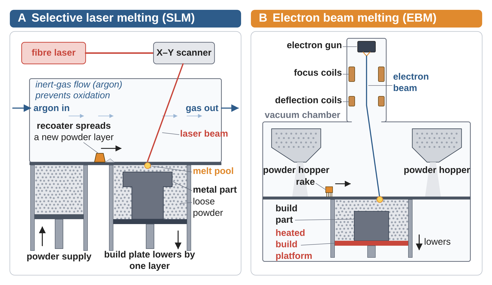
Additively manufactured implants are regulated like other medical devices. The guidance of the US Food and Drug Administration on additive-manufactured medical devices lists what manufacturers must document on device design, process validation and testing, including the effects of build orientation, powder reuse and post-processing (U.S. FDA, 2017). It explicitly excludes printed products that contain living cells, which are regulated as biological products (Section 4.4).
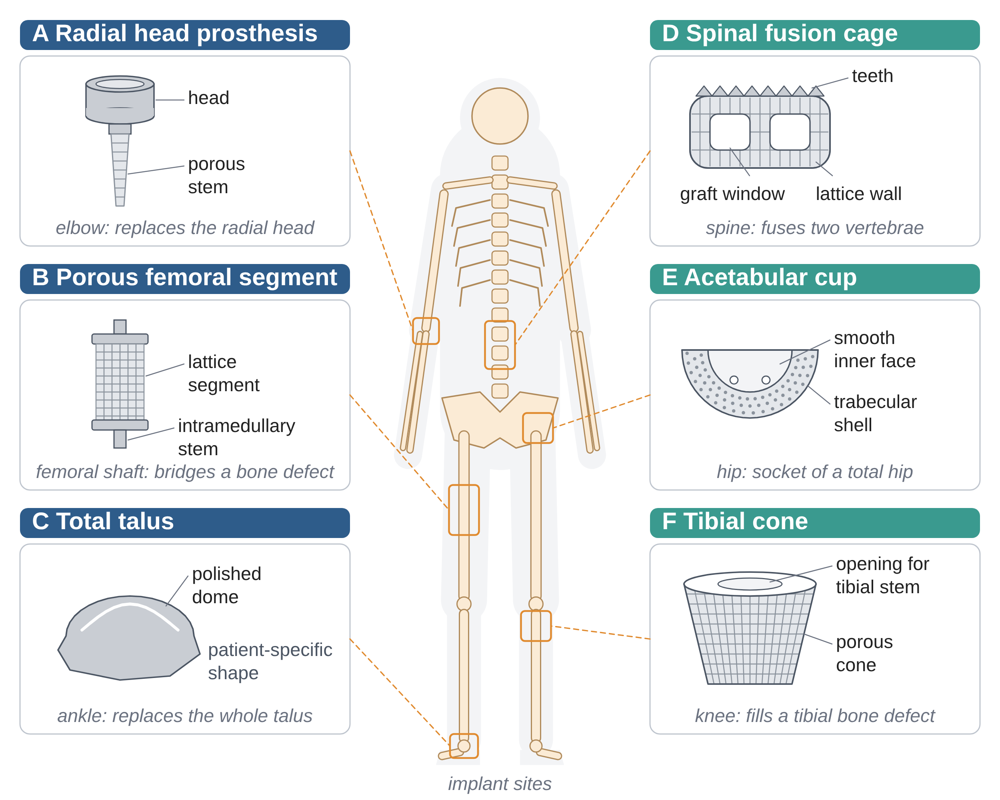
4.3.4 Plastic Printing and Biodegradable Implants
Two polymer classes dominate medical 3D printing: Polyether ether ketone (PEEK)—a strong, inert thermoplastic for permanent implants, and Polycaprolactone (PCL)—a biodegradable polymer for temporary scaffolds that resorb as tissue regenerates. Because PCL melts near 60 °C, it can be printed by FDM at relatively low temperatures (typically below about 120 °C), which many embedded drugs and bioactive molecules tolerate. This enables drug-eluting implants—devices that both support and deliver therapeutic compounds. For instance, PCL scaffolds can release antibiotics or growth factors during bone healing.
Dentistry was among the earliest adopters of polymer 3DP. Dental crowns, bridges, and aligners (Figure 4.16) can be printed directly from intraoral scans using photopolymer resins similar to dental composites. Since these prosthetics are external and removable, regulatory barriers are lower than for internal implants.
Figure 4.16 traces how orthodontic treatment has moved towards this fully digital approach. Traditional braces (Figure 4.16A) use metal brackets bonded to the teeth and an archwire that is adjusted by hand. Thermoformed clear aligners (Figure 4.16B) replace the wire by a transparent plastic sheet that is heated and formed under pressure or vacuum over a printed model of the teeth and then trimmed, so a new aligner is needed for every treatment stage. In the digital workflow (Figure 4.16C), an intraoral scan is imported into CAD software, the tooth movements are planned stage by stage, and CAM produces the model or aligner files. The last step (Figure 4.16D) prints the aligner itself by vat photopolymerisation straight from the CAD file, so that neither a physical model nor trimming is required.
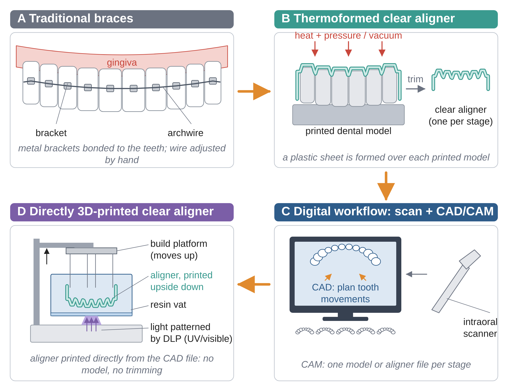
4.3.5 Pharmaceutical 3D Printing
In the pharmaceutical sector, 3D printing allows unprecedented control over dose, geometry, and release kinetics—impossible with conventional tablet pressing.
Common approaches:
FDM of drug-loaded filaments: Drug is mixed with polymer (e.g. PVA, PCL), extruded into filament, then printed into tablets with defined infill density (Goyanes et al., 2015).
Inkjet printing: Microdroplets containing drug solution are deposited layer by layer onto edible substrates.
SLA/DLP printing: Photocurable hydrogels encapsulate active compounds with tunable porosity.
Advantages
Personalised dosing (paediatrics, geriatrics). The dose is set by the printed geometry, so a tablet can be matched to a particular body weight or kidney function instead of splitting a commercial tablet, which is inaccurate and not permitted for modified-release forms.
On-demand production at hospitals or remote sites. Printing from a digital formulation file removes the need to hold every strength in stock, which helps for rarely used or unstable preparations and at remote sites.
Controlled release through geometry and layering. The release rate follows the surface-to-volume ratio and the arrangement of the layers, so one tablet can be designed to release fast, slowly or in several pulses, and several drugs can be combined with separate profiles.
Example: Spritam® (levetiracetam), approved by the FDA in 2015 as the first 3D-printed drug product, is made by powder-bed binder jetting (ZipDose® technology). A liquid binder is jetted onto thin layers of drug-containing powder, giving a highly porous tablet that disintegrates within seconds in the mouth with a sip of liquid, even at doses up to 1000 mg (Seoane-Viaño et al., 2021). As of 2025, Spritam was still the only 3D-printed drug with marketing approval. Several tablets made by melt extrusion deposition — an FDM-like process in which the printed internal geometry controls drug release — have, however, been cleared by the FDA for clinical trials since 2021 (Triastek, 2024), and in 2025 China issued its first production licence for 3D-printed tablets (Nanjing Municipal Government, 2025). Table 4.4 summarises the medical and pharmaceutical applications of 3D printing discussed in this section.
| Application | Printing Technique | Material Type | Typical Scale | Primary Benefit |
|---|---|---|---|---|
| Anatomical models | SLA / DLP | Photopolymer resin | 10–200 mm | Surgical planning, education |
| Bone / joint implants | SLS / SLM | Titanium, Co–Cr alloys | 1–100 mm | Custom geometry, osseointegration |
| Dental prosthetics | DLP / FDM | Acrylate resins, PLA | 5–50 mm | Rapid fabrication, personalisation |
| Drug-eluting scaffolds | FDM | PCL, PVA blends | 1–20 mm | Controlled release, biodegradation |
| Tablets / microneedles | Binder jetting / FDM / SLA | Drug–polymer powders and filaments, hydrogels | 0.1–10 mm | Dose precision, fast dissolution |
4.4 3D Bioprinting
Conventional 3D printing reshapes inert matter; bioprinting reorganises living matter. It extends additive-manufacturing logic into the biological realm, depositing cell-laden bioinks layer by layer to create viable tissues and organ models. The central idea is deceptively simple: if cells receive the right spatial arrangement and microenvironment, they can self-assemble into functional tissue—just as they do during development.
Bioprinting merges digital design, cell biology, and hydrogel physics.
Any bioprinting process requires three coordinated components:
A printable bioink that houses living cells,
A printing technology that deposits the material precisely, and
A crosslinking mechanism that stabilises the construct post-deposition.
4.4.1 Materials of Bioprinting (Bioinks)
4.4.1.1 Definition and Composition
Every bioprinting process relies on its most fundamental ingredient: the bioink. According to Groll et al. (2018), a bioink is a formulation of cells and biomaterials designed for processing by an additive-manufacturing-based technology that allows the fabrication of three-dimensional, tissue-like structures. Bioinks are thus distinguished from biomaterial inks, which are printed without cells and seeded with cells afterwards (Figure 4.17).
A functional bioink must therefore meet two sets of criteria:
Physical printability: appropriate viscosity, shear-thinning, and gelation behaviour.
Biological performance: cytocompatibility, nutrient diffusion, and support for cell proliferation or differentiation.
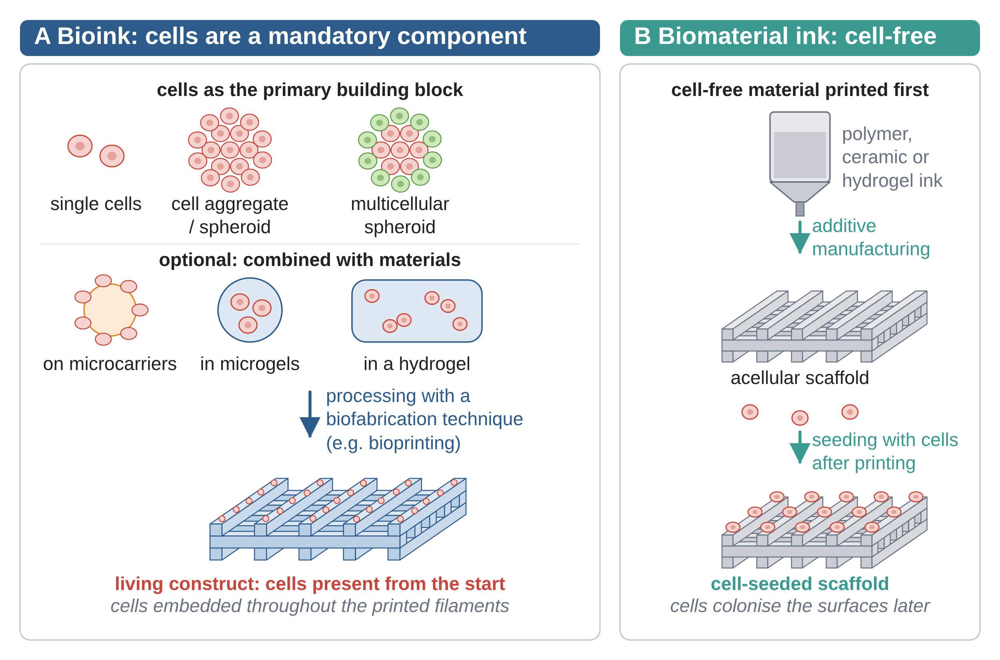
Figure 4.18 summarises the three major components of a typical bioink: (1) cells, (2) a supportive biomaterial matrix, and (3) a crosslinking mechanism that converts the printed construct into a stable, living architecture, and how they trade off against each other. The triangle is best read as a design map. Each vertex stands for a formulation in which one component dominates, each edge names the property that is exchanged between the two vertices it connects, and the central balanced zone marks the formulations that are worth printing. Moving towards any vertex improves one property at the expense of the others.
Towards the cell vertex. Raising the cell density makes the construct more tissue-like: native tissues are densely packed with cells, and close cell–cell contacts support paracrine signalling, matrix deposition and tissue maturation. Cells, however, are particles that do not take part in the polymer network. At high densities they aggregate and clog the nozzle, dilute the network so that printed filaments sag, and, in light-based printing, scatter light and blur the printed features. Most bioinks therefore contain far fewer cells than native tissue (Section 4.4.1.2).
Towards the matrix vertex. A higher polymer concentration or molecular weight raises the viscosity and yield stress, so extruded filaments keep their shape and stacked layers do not collapse: printability and shape fidelity improve. The price is a denser polymer mesh. Oxygen, nutrients and growth factors diffuse more slowly, and the cells are physically confined, so they can hardly spread, migrate or proliferate. A more viscous ink also needs a higher extrusion pressure, which raises the shear stress on the cells in the nozzle (Section 4.4.3).
Towards the crosslinker vertex. A higher crosslink density, obtained with more crosslinker or photoinitiator, a longer light exposure or a higher degree of functionalisation (e.g. the degree of methacrylation of GelMA), makes the construct stiffer and stronger and slows its degradation. The same tight network, however, restricts diffusion and cell spreading, and the crosslinking reaction itself can harm the cells, for example through free radicals and UV light during photopolymerisation or high calcium concentrations during ionic gelation (Section 4.4.1.5). Cell viability and function therefore decrease.
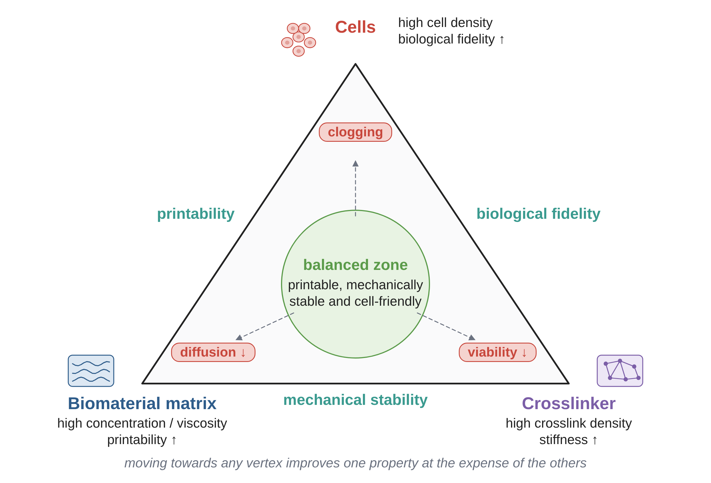
Along the edges. On the printability edge, between cells and matrix, adding matrix makes the ink easier to print and adding cells makes it harder. On the biological fidelity edge, between cells and crosslinker, more cells make the construct more tissue-like, whereas denser crosslinking lowers viability. On the mechanical stability edge, between matrix and crosslinker, both components stiffen the construct, so the designer chooses how that stability is obtained: from a concentrated, lightly crosslinked polymer or from a more dilute, more strongly crosslinked one.
The balanced zone. Formulations in the centre of the triangle are printable, mechanically stable and cell-friendly at the same time. Malda et al. (2013) called this narrow overlap the biofabrication window: hydrogels that are concentrated and densely crosslinked enough to print well tend to be hostile to cells, whereas cell-friendly hydrogels are often too soft to print. Much of current bioink research aims to widen this window by decoupling printability from the final network properties, for example with shear-thinning, self-healing inks that flow in the nozzle but recover immediately after deposition (Section 4.4.1.4), with two-step crosslinking (a mild physical gel for printing, followed by a gentle secondary crosslink once the shape is set), and with embedded printing in a support bath, which allows very soft, cell-friendly inks to be printed without collapsing (Section 4.4.3).
Example: GelMA. Gelatin methacrylate illustrates the trade-off well. At low concentrations (around 5 % w/v) it gives high cell viability and allows cells to spread, but the ink is too fluid to hold its shape. At high concentrations (15–20 % w/v) it prints with good shape fidelity, but the dense network restricts cell spreading and migration. A common compromise is to print GelMA at an intermediate concentration, to cool it so that its thermal gelation provides temporary stability during printing, and to photocrosslink it afterwards with a cell-friendly initiator such as LAP.
Because a bioink is both a material and a carrier of living cells, its characterisation is now being standardised. The ASTM guide F3659 describes how to assess the printability of a bioink, its stabilisation after printing, sterility, cytocompatibility and post-printing cell viability (ASTM International, 2024), and in December 2025 the FDA recognised this guide as a consensus standard for regenerative medicine products (U.S. FDA, 2025).
4.4.1.2 Cells as Functional Units
The cellular fraction determines the biological identity of the printed construct. Primary cells, immortalised lines, or stem cells (mesenchymal, induced pluripotent, or embryonic) can all serve as building blocks.
Cell concentration typically ranges from 10⁶ to 10⁸ cells mL⁻¹ depending on tissue type. Higher densities enhance cell–cell communication but may increase viscosity and reduce print resolution. Maintaining viability (> 80 %) during the printing process is critical, as mechanical or thermal stress can trigger apoptosis or differentiation drift.
4.4.1.3 Biomaterials as Structural Matrix
The biomaterial component provides the physical scaffold for cells. Most bioinks are based on hydrogels, polymer networks that retain large amounts of water and mimic the extracellular matrix (ECM). Decellularised ECM bioinks are discussed in Section 2.2.6.
They can be broadly classified as:
Natural polymers: e.g. alginate, gelatin, collagen, fibrin, hyaluronic acid, agarose. These
provide excellent biocompatibility and inherent bioactivity but often require reinforcement for mechanical stability.Synthetic polymers: e.g. poly(ethylene glycol) (PEG), Pluronic F127, poly(vinyl alcohol) (PVA). They
offer reproducibility and tunable rheology but lack cell-binding motifs and thus often need biofunctionalisation (e.g. RGD peptides).Hybrid systems combine both types to merge biological fidelity with mechanical stability (Cui et al., 2017; Mobaraki et al., 2020).
A long history. Many of these hydrogels were used to immobilise living cells long before bioprinting existed. Microbial, plant and animal cells were entrapped in beads of alginate, κ-carrageenan, agarose or polyacrylamide to produce amino acids, organic acids, antibiotics, ethanol and other products, and islets of Langerhans were micro-encapsulated in alginate–poly-L-lysine capsules for transplantation (Lim and Sun, 1980). That field also worked out how the gel concentration controls diffusion and how cell growth inside a bead creates gradients of oxygen and nutrients (Willaert and Baron, 1996), the same trade-offs that now shape the biofabrication window (Section 4.4.1.1) and the mass-transport limits of Section 5.2.1. A more recent overview of cell immobilisation, including industrial processes such as the production of alcohol-free beer and stabilised probiotic products, is given by Willaert (2019).
4.4.1.4 Rheology and Printability
For successful deposition, the ink’s flow behaviour must match the chosen bioprinting method. Key parameters are viscosity, shear-thinning behaviour, and yield stress.
Shear-thinning (viscosity decreasing with increasing shear rate) allows the material to flow through a nozzle yet recover its shape on deposition. Different bioprinting systems operate within specific rheological windows (Table 4.5).
| Printing Technology | Typical Viscosity Range (mPa·s) | Cell Viability (%) | Example Materials |
|---|---|---|---|
| Inkjet | 3.5 – 12 | > 85 | Dilute alginate solutions, collagen I, low-Mw gelatin |
| Extrusion | 30 – > 6 × 10⁷ | 40 – 80 | Alginate–gelatin, PEG-fibrin blends, Pluronic F127 |
| Light-based (SLA/DLP) | 10 – 3 × 10³ | 85 – 95 | Photocrosslinkable GelMA, PEGDA |
4.4.1.5 Crosslinking Mechanisms
After printing, the hydrogel must be stabilised into a permanent shape. Crosslinking transforms a viscous polymer solution into a solid network by forming new chemical or physical bonds.
Major mechanisms include (Figure 4.19):
Ionic crosslinking – e.g. calcium ions linking alginate chains.
Thermal gelation – e.g. gelatin solidifying below 30 °C.
Enzymatic crosslinking – e.g. transglutaminase (e.g. fibrin/gelatin hybrid) or horseradish peroxidase (e.g. gelatin-tyramine).
Photopolymerisation – UV or visible-light initiation of methacrylated gels (GelMA, PEGDA).
Each technique influences mechanical stiffness, nutrient diffusion, and long-term stability. For
cell-laden constructs, gentle methods (ionic or enzymatic) are favoured, while acellular scaffolds can tolerate stronger photochemical reactions.
Figure 4.19 groups these and other mechanisms into two families. Physical crosslinking (Figure 4.19A) relies on reversible, non-covalent junctions: hydrophobic segments that cluster in water, Ca²⁺ ions bridging alginate chains in the ‘egg-box’ junction, hydrogen bonds between polar groups (which underlie the gelation of gelatin on cooling), stereocomplexes between enantiomeric PLLA and PDLA chains, and guest–host pairs such as cyclodextrin and adamantane. These junctions form under mild conditions and can re-form after being broken, but they are relatively weak. Chemical crosslinking (Figure 4.19B) creates covalent bonds, by radical photopolymerisation of (meth)acrylate groups, click chemistry, thiol–ene reactions, Schiff base formation between aldehydes and amines, or enzymes such as HRP and transglutaminase, and yields stronger, more permanent networks. Many bioinks therefore combine both: a fast physical gelation preserves the shape during printing, and covalent crosslinking then provides long-term stability.
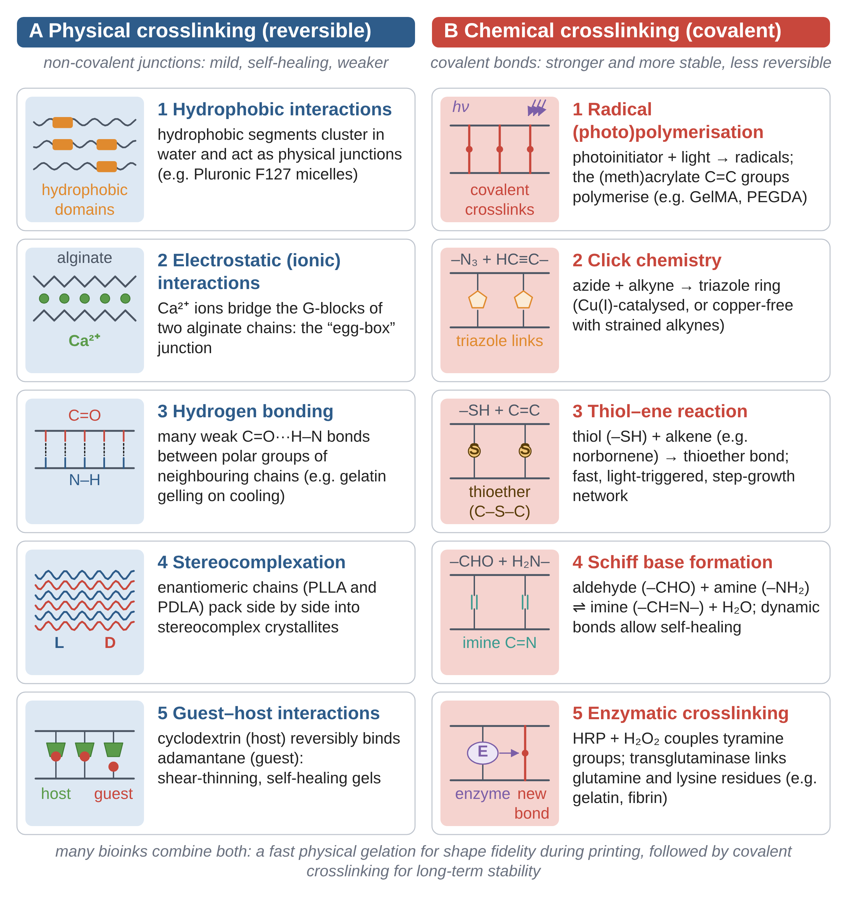
The individual mechanisms work as follows. In hydrophobic association, water-avoiding segments of amphiphilic polymers (e.g. the PPO blocks of Pluronic F127) cluster into micelles that act as junctions when the solution warms. In ionic crosslinking, divalent ions such as Ca²⁺ fit between the guluronate blocks of two alginate chains, like eggs in an egg box, and bridge them. Hydrogen bonds between polar groups make gelatin chains re-form triple-helical junctions on cooling. Stereocomplexes form when chains of opposite chirality (PLLA and PDLA) pack together more tightly than either alone. In guest–host pairs, a hydrophobic guest such as adamantane sits inside the ring-shaped cavity of a cyclodextrin host. Among the chemical routes, radical photopolymerisation uses light to split a photoinitiator into radicals that open the C=C double bonds of (meth)acrylate groups and link them into chains, as in GelMA and PEGDA. Click chemistry (e.g. azide–alkyne coupling) joins two groups that react rapidly and only with each other. In thiol–ene reactions a thiol adds to a C=C double bond step by step, which gives more uniform networks and is less inhibited by oxygen. A Schiff base (imine) forms between an aldehyde and an amine; because this bond can open and close again, such gels can self-heal. Enzymes crosslink under physiological conditions: horseradish peroxidase (HRP) with H₂O₂ couples phenol groups such as tyramine, and transglutaminase links glutamine and lysine side chains, for example in gelatin.
4.4.1.6 Functionalisation and Bioactivity
Bioprinted constructs must sustain cell viability immediately and guide tissue maturation over time. To direct cell behaviour, bioinks are often enriched with:
Adhesion peptides: RGD, GFOGER, PHSRN. These short sequences are copied from the cell-binding sites of ECM proteins, RGD from fibronectin and GFOGER from collagen, and are grafted onto polymers such as PEG or alginate that cells cannot otherwise grip. They give integrins something to hold on to, which is the first step in the adhesion cascade of Section 2.4.2.
Growth factors: BMP-2, VEGF, TGF-β. Growth factors are signalling proteins that steer differentiation, BMP-2 towards bone, VEGF towards blood vessels and TGF-β towards cartilage (Section 2.4.3). Because they diffuse away and lose activity within hours, they are usually bound to the matrix or released slowly from particles instead of being added to the medium.
Nanofillers: hydroxyapatite for bone, nanocellulose for rheology, carbon nanotubes for conductivity. Solid particles added to the hydrogel change its physical behaviour as well as its biology: hydroxyapatite provides the mineral phase that osteoblasts expect, nanocellulose makes the ink shear-thinning enough to print (Section 4.4.1.4), and carbon nanotubes make the construct electrically conductive for cardiac or neural tissue.
Such additives modulate stiffness, electrical properties, and biochemical signalling.
4.4.2 Inkjet Bioprinting
Principle and Mechanisms
Inkjet bioprinting adapts the same physics as consumer inkjet printers, but replaces pigment inks with cell-laden bioinks. Tiny droplets—each containing a few to several hundred cells—are ejected through one or more nozzles and deposited onto a substrate in precise patterns. This method relies on the controlled formation and flight of droplets with volumes between 1 and 500 pL.
Two main operational modes exist (Figure 4.20–Figure 4.22):
- Continuous Inkjet (CIJ): a constant stream of droplets is produced; unwanted droplets are deflected electrostatically into a waste line. Because the stream never stops, droplets are also formed where no material is wanted; a charging electrode at the break-up point gives these droplets an electric charge, and high-voltage deflection plates steer them into a gutter, while the uncharged droplets fly straight on to the substrate.
CIJ provides high throughput but is rarely used for living cells due to continuous high-pressure flow and potential charge exposure.
- Drop-on-Demand (DOD): droplets are generated only when needed.
DOD is achieved by one of four actuation mechanisms:
Thermal: rapid heating vaporises a microbubble that propels the droplet.
Piezoelectric: a ceramic actuator deforms, compressing the fluid chamber; robotic spotters also use it to print yeast cell arrays (Box 4.3).
Electrostatic / Acoustic: less common variants that use electric or sound pulses.
Solenoid valve: a micro-valve opens for a few hundred microseconds and releases a drop from a pressurised reservoir; its wide nozzle (often a pipette tip) tolerates cell suspensions, and robotic spotters use it to print cell microarrays (Box 4.3).
Most bioprinters employ piezoelectric DOD because it avoids local heating.
Figure 4.20 compares these droplet-forming principles. In continuous inkjet printing (Figure 4.20A), bioink is forced under pressure through a nozzle and the jet breaks up spontaneously into uniform droplets (Rayleigh–Plateau instability); droplets that are not needed are charged at the break-up point and steered by deflection plates into a gutter for recycling, so that only uncharged droplets reach the substrate. In drop-on-demand printing (Figure 4.20B), a droplet is ejected only when a pulse is applied: a heater pulse creates a vapour bubble (thermal), a voltage pulse makes a piezoelectric element squeeze the chamber (piezoelectric), or an electrode pulls a plate that ejects a drop on release (electrostatic). Figure 4.20C adds electrohydrodynamic (EHD) jetting, in which a high voltage between nozzle and substrate draws the meniscus into a Taylor cone, from which a fine jet and very small droplets are pulled. The actuation mode thus sets the balance between speed, resolution and bioink compatibility.
The spontaneous break-up of a liquid jet is driven by surface tension and is called the Rayleigh–Plateau instability. A cylinder of liquid has a larger surface than the same volume divided into spheres. Small random ripples on the jet surface therefore grow when their wavelength is longer than the jet circumference (λ > πd), because they lower the surface energy, until the jet pinches off into drops. The fastest-growing ripple has a wavelength of about 4.5 jet diameters, so the drops have nearly equal size, about 1.9 times the jet diameter. In continuous inkjet printers a piezoelectric element vibrates the nozzle at this wavelength, so that the break-up is regular and the drop size is fixed.
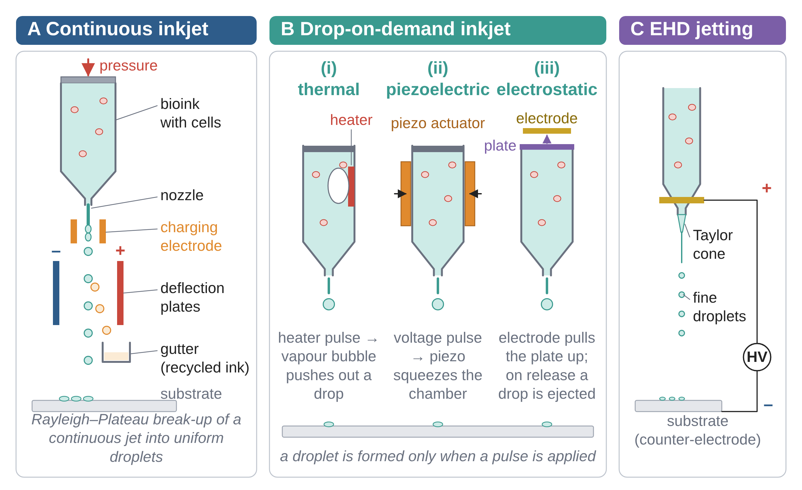
Bioink Requirements
For stable droplet formation, bioinks must have low viscosity (typically 3.5–12 mPa·s), surface tension around 40 mN m⁻¹, and rapid gelation upon impact to maintain spatial accuracy. Too viscous → nozzle clogging; too thin → droplet satellite formation. Because of these narrow limits, only a few hydrogel systems—dilute alginate, collagen, fibrin, gelatin, and methylcellulose—are printable by inkjet.
Cell concentrations must also remain low (≤ 1 × 10⁷ cells mL⁻¹) to prevent blocking. Despite these restrictions, inkjet printing excels in depositing cell gradients, growth-factor patterns, or small tissue spheroids with micrometre precision.
Figure 4.21 shows that each droplet-formation mode has been used to build quite different structures. Thermal inkjet printing produced a disc divided into three sectors, each printed with a different cell type (Figure 4.21A), and piezoelectric printing built a cell-laden zigzag tube whose inclined segment was printed as an overhang (Figure 4.21B). Electrostatic inkjetting yielded a hydrogel tube with HeLa cells dispersed throughout the gel (Figure 4.21C), and electrohydrodynamic jetting produced cell-laden microspheres that also contain extracellular-matrix fibrils (Figure 4.21D). Despite the narrow limits on viscosity and cell density, droplet-based printing can thus pattern several cell types and create tubes and microspheres, provided that the actuation mode is matched to the desired structure, scale and cell type.
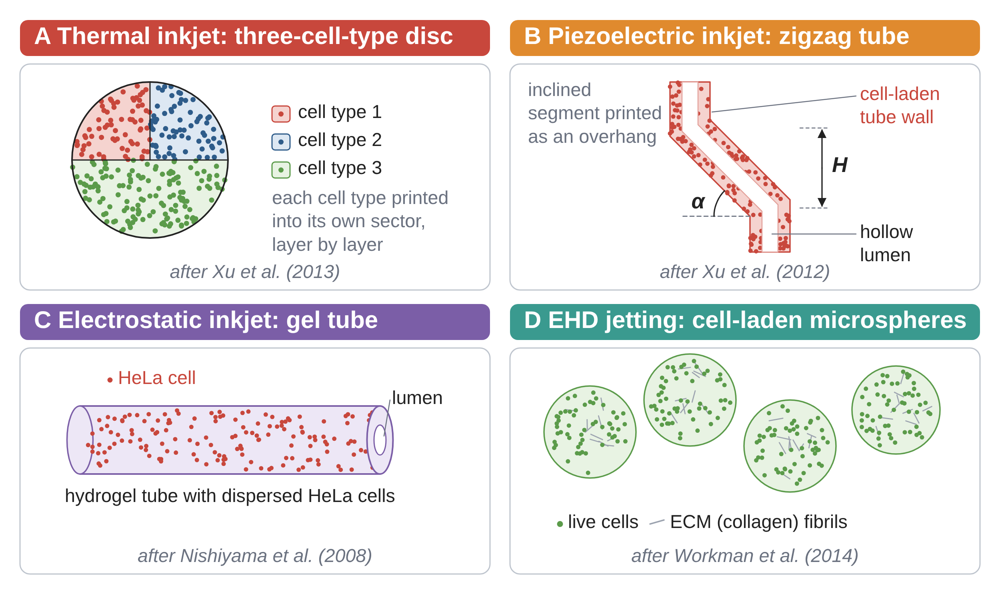
Resolution and Performance
Typical droplet diameters range from 30 to 100 µm, producing x–y resolutions ≈ 50 µm and z-layer thicknesses ≈ 20–50 µm. Printing speeds up to 10,000 drops s⁻¹ nozzle⁻¹ are possible. However, viability depends strongly on shear stress at the nozzle exit, which scales with viscosity (η), velocity (v), and orifice diameter (d):
\(\tau \approx 8\eta v/d\) (4.2)
Equation 4.2 gives the mean wall shear stress in the nozzle. For \(\eta\) = 0.01 Pa·s (10 mPa·s), \(v\) = 5 m s⁻¹ and \(d\) = 50 µm, \(\tau \approx\) 8 kPa — far above the roughly 150–200 Pa that cells tolerate during their much longer passage through an extrusion nozzle (Section 4.4.3). Cells nevertheless survive inkjet printing because they pass the orifice in only about 10 µs: in piezoelectric drop-on-demand printing of human fibroblasts, most cells survived even at the highest actuation voltages tested (Saunders et al., 2008). Cell damage therefore depends on both the magnitude and the duration of the stress.
Advantages
High speed and precision for 2D and thin 3D patterns. Droplets are generated at a few kilohertz and placed to within about 20--50 µm, so a patterned layer is printed in seconds; the method is at its best for monolayers and thin stacks rather than tall constructs.
Low material consumption (picolitre scale), simple hardware. Each droplet is only 10--100 pl, so very little bioink and very few cells are needed, and the printhead itself can be a modified desktop printer cartridge, which makes the hardware cheap compared with other bioprinters.
Compatible with multi-material and gradient patterning. Several nozzles can be filled with different inks and fired independently, so cell types, growth factors or crosslinker concentrations can be varied point by point to build gradients across one layer.
Excellent for printing biomolecules or acellular hydrogels before adding cells. Proteins, DNA and acellular gels tolerate the thermal or piezoelectric pulse better than cells, so inkjet printing is often used to pattern the biochemical cues first, after which cells are seeded onto the pattern.
Suitable for printing biomolecule gradients or microarrays. Because the number of droplets at each position sets the local concentration, a smooth gradient can be written directly, which is how the differentiation gradients and microarrays discussed later in this section are made.
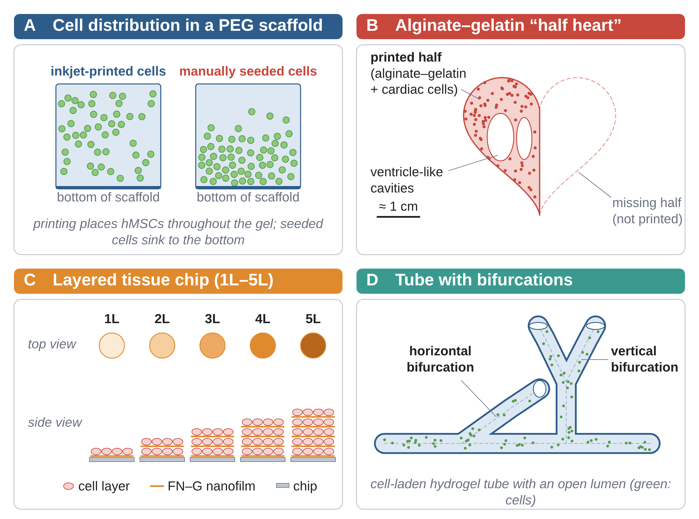
Limitations
Restricted to low-viscosity bioinks.
Limited cell density and droplet volume control.
Possible nozzle clogging and drying at small orifices. Orifices of 30--100 µm are easily blocked by cell aggregates or by ink that dries at the nozzle between droplets, so the printhead has to be kept humid and purged regularly, which interrupts long prints.
Not ideal for large, mechanically stable 3D constructs. Droplets carry almost no mechanical strength of their own, so a tall construct collapses under its own weight before it is crosslinked. Inkjet printing is therefore combined with a supporting method when thickness is needed.
Applications
Inkjet bioprinting has been used for:
Patterned cell arrays for studies of cell-cell communication (Box 4.3).
Gradient printing of growth factors guiding differentiation.
Micro-tissue assembly: droplet fusion forming spheroids.
Biopaper concept: layered deposition of living droplets that fuse into tissue sheets.
Inkjet systems thus excel in biochemical patterning rather than load-bearing tissue fabrication.
Figure 4.22 collects representative constructs that illustrate these strengths. When human mesenchymal stem cells are printed together with a PEG–HA scaffold, they are distributed evenly through the gel, whereas cells seeded by hand accumulate at the bottom of the scaffold (Figure 4.22A). Larger shapes are possible as well, such as an alginate–gelatin ‘half-heart’ with ventricle-like cavities, an early cardiac tissue model (Figure 4.22B). On a layered tissue chip, spots built from one to five cell layers separated by fibronectin–gelatin nanofilms create a stepwise gradient across the chip (Figure 4.22C), and a cell-laden tube with both a horizontal and a vertical bifurcation demonstrates that branched geometries can be printed with precision (Figure 4.22D). Such spatially controlled, multicellular microarchitectures provide a basis for vascularised tissues, organ models and cell-based therapeutics.
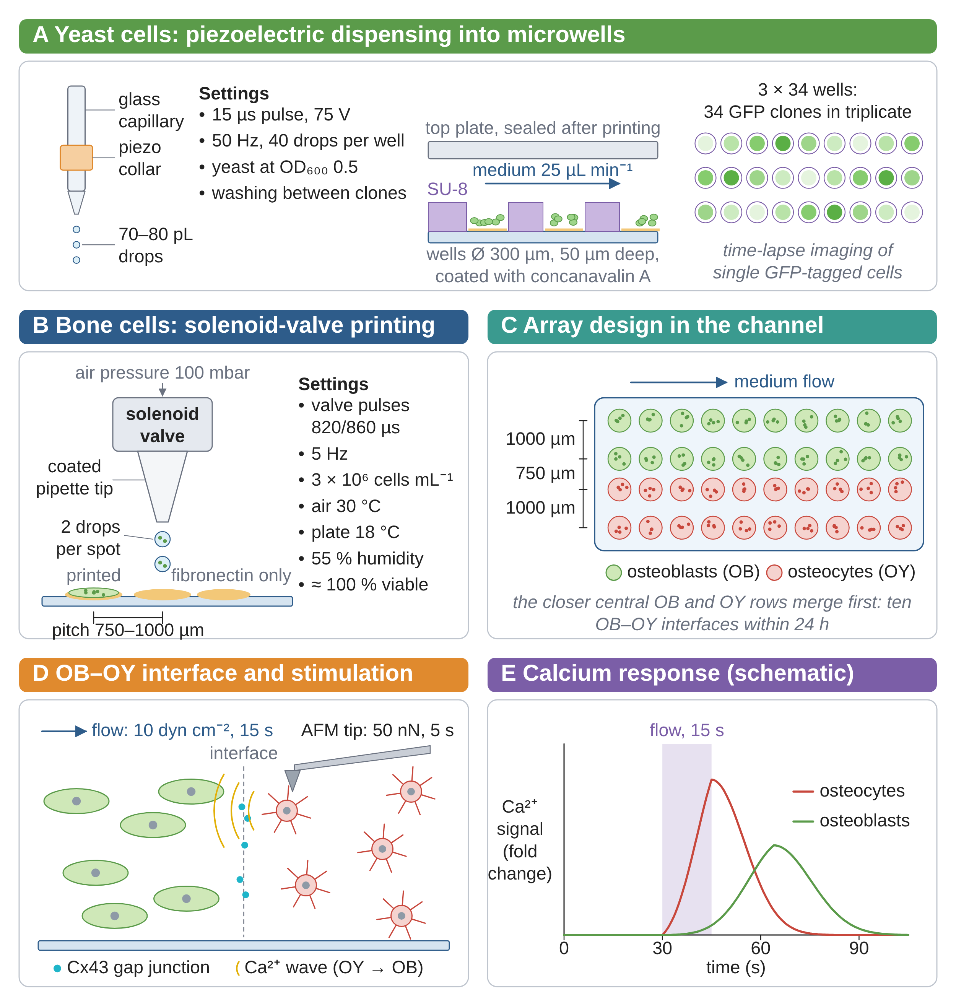
4.4.3 Extrusion Bioprinting
Principle
Extrusion bioprinting is the workhorse of modern bioprinting. Instead of ejecting discrete droplets, it continuously extrudes a cell-laden hydrogel filament through a nozzle, tracing it layer by layer to build a 3D construct (Figure 4.24–Figure 4.26).
Material flow can be driven by:
Pneumatic pressure: compressed air pushes the bioink from a cartridge.
Mechanical pistons or plungers: provide precise displacement control.
Screw or auger mechanisms: for highly viscous inks or composite materials.
The extrusion rate \(Q\) (mm³ s⁻¹) depends on applied pressure \(P\), nozzle radius \(r\), viscosity \(\eta\), and length \(L\) of the nozzle:
\(Q = \frac{\pi r^{4}P}{8\eta L}\) (4.3)
This relationship shows why high-viscosity inks demand high pressure or larger nozzles. Equation 4.3 holds for a Newtonian ink. The corresponding wall shear stress, \(\tau_{w} = \Delta P\, r/(2L) = 4\eta Q/\left( \pi r^{3} \right)\), rises linearly with pressure and nozzle radius and falls with nozzle length. For a shear-thinning ink, the viscosity near the wall drops, so the same pressure gives a higher flow rate; Exercise Q7 (Section 4.7.2) and Python Exercise 3 (Section 4.7.4.3) explore these relations. Shear stress as a deliberate stimulus during maturation, rather than a source of damage, is treated in Section 5.2.2.
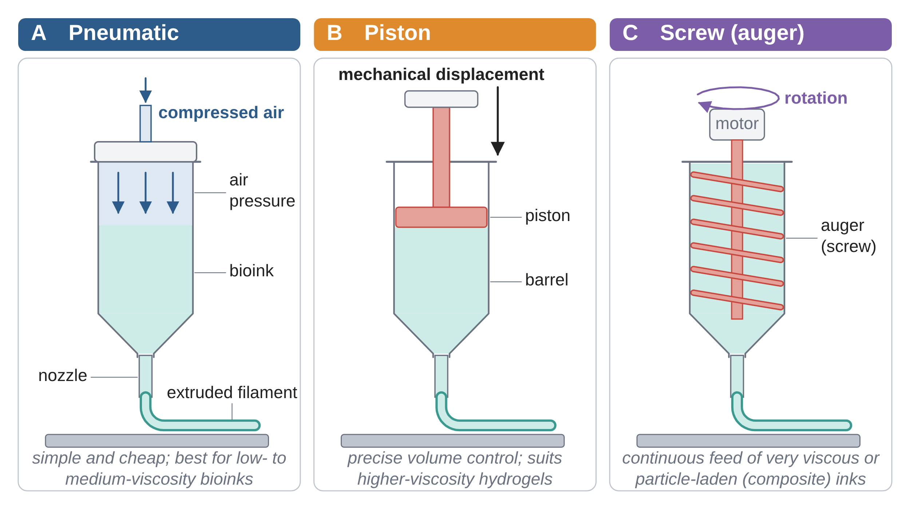
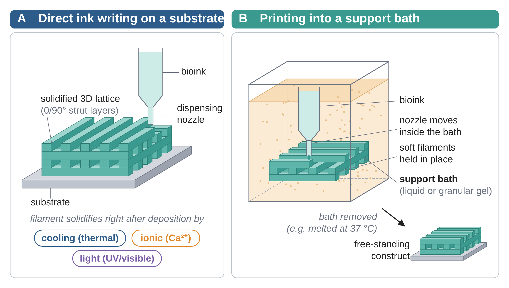
Bioink Characteristics
Extrusion systems can handle a far broader range of viscosities (from 30 mPa·s to more than 6 × 10⁷ mPa·s; Murphy and Atala, 2014) than inkjet printers, allowing the use of cell-dense and mechanically robust hydrogels.
Common formulations include:
Alginate-gelatin blends: crosslinked by Ca²⁺ or temperature.
GelMA (gelatin methacrylate): photo-crosslinkable, often combined with photoinitiators such as Irgacure 2959 or, increasingly, LAP.
Pluronic F127: used as a sacrificial or supporting material.
Nanocellulose-alginate composites: enhance shear recovery and print fidelity.
Bioinks must exhibit shear-thinning behaviour: they flow under pressure but quickly recover structure after extrusion.
Because cells are exposed to the wall shear stress for milliseconds to seconds, viability is generally preserved only when it remains below about 150–200 Pa; above this threshold, deformation and membrane rupture occur.
Process Control and Resolution
Typical nozzle diameters range from 100 µm to 400 µm, producing strands of similar width. Layer height is set to 70–100 % of strand diameter to ensure bonding. Print speeds of 5–50 mm s⁻¹ are common.
Because extrusion is a continuous process, resolution is lower than inkjet (≈100 µm vs. 50 µm) but construct volume and mechanical integrity are much higher. Temperature control modules maintain printhead and stage between 20–37 °C for cell survival.
Figure 4.25 contrasts the two ways in which the extruded filament can be held in shape. In direct ink writing (Figure 4.25A) the nozzle deposits the bioink in open air, building up a lattice of filaments laid at 0° and 90° in alternate layers; because nothing supports the strands, each must solidify immediately after deposition by cooling, ionic gelation or photo-crosslinking. In support-bath or embedded printing (Figure 4.25B) the nozzle instead moves through a gel bath that holds soft or low-viscosity filaments in place until they have set, after which the bath is removed and a free-standing construct remains. The second strategy therefore widens the range of printable bioinks to materials that would otherwise sag or collapse under gravity.
A yield-stress gel behaves as a soft solid at rest but flows like a liquid once the applied stress exceeds its yield stress. The moving nozzle exceeds this stress locally, so the bath fluidises around the tip, lets the nozzle pass and solidifies again behind it, trapping the extruded filament where it was laid down. In FRESH printing (freeform reversible embedding of suspended hydrogels) the bath is a gelatin slurry: a dense suspension of gelatin microparticles in buffer, which together behave as a yield-stress material. The bioink (e.g. collagen or alginate) gels inside the bath, for example by Ca²⁺ added to the slurry or by a pH change, and the bath is afterwards melted at 37 °C and washed away (Lee et al., 2019).
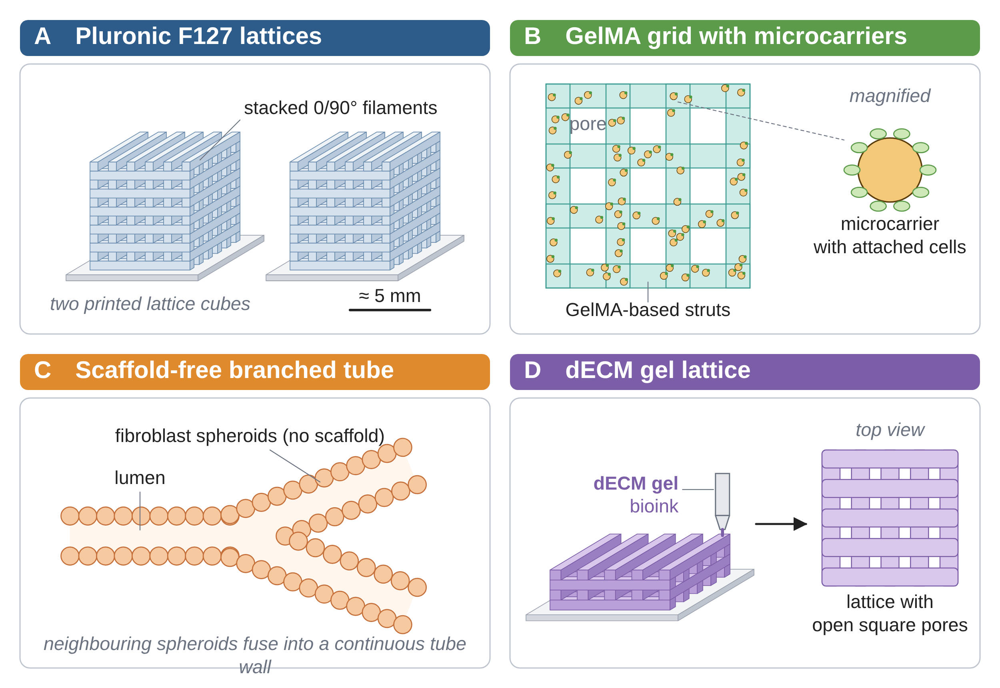
Crosslinking and Post-Processing
After deposition, strands are stabilised by one or more crosslinking steps:
Ionic crosslinking (Ca²⁺ for alginate).
Photocrosslinking (UV or visible light for GelMA/PEGDA).
Thermal gelation (cooling gelatin below 30 °C).
Dual-step crosslinking (fast physical gelation for shape retention, then slower chemical curing for strength).
Post-printing, constructs are cultured in bioreactors that provide nutrients and mechanical cues to drive tissue maturation.
Performance Comparison
Extrusion bioprinting comparison is shown in Table 4.6.
Advantages
Broad viscosity tolerance, and therefore a wide choice of bioinks.
Large, cell-dense constructs can be printed.
Easy integration of multiple printheads for composite tissues. Separate printheads can hold a cell-laden ink, a support material and a crosslinker, so a construct can combine several tissue types, stiff and soft regions, or sacrificial channels in one build.
Co-axial extrusion gives perfusable, tubular structures.
Limitations
Lower resolution than inkjet or light-based methods. The printed strand cannot be much narrower than the nozzle, typically 100--400 µm, so fine detail is lost and the layered strands remain visible; light-based methods reach an order of magnitude smaller features.
Shear stress may reduce cell viability in narrow nozzles.
Mechanical calibration is essential for a uniform extrusion rate.
Crosslinking may be non-uniform across thick constructs.
| Parameter | Inkjet Bioprinting | Extrusion Bioprinting |
|---|---|---|
| Flow type | Discrete droplets | Continuous filament |
| Viscosity window (mPa·s) | 3.5 – 12 | 30 – > 6 × 10⁷ |
| Typical nozzle Ø (µm) | 20 – 80 | 100 – 400 |
| Cell concentration (cells mL⁻¹) | ≤ 10⁷ | ≤ 10⁸ |
| Shear stress (Pa) | kPa range, but only for µs | < ≈ 200 (longer exposure) |
| Cell viability (%) | > 85 | 40 – 80 |
| Resolution (µm) | ≈ 50 | ≈ 100 – 300 |
| Applications | Patterning, gradients | 3D tissues, scaffolds |
Applications
Extrusion bioprinting is the backbone of tissue engineering research. It has produced functional constructs of cartilage, bone, cardiac tissue, skin, and vascular channels. Dual-material printing can combine stiff structural frameworks with soft, cell-rich regions, enabling heterogeneous organ mimics.
Figure 4.26 illustrates this versatility with four constructs printed from very different materials. Lattice cubes of stacked filaments of Pluronic F127, a material used as a sacrificial or structural ink, show the regular architectures that extrusion can build (Figure 4.26A). A cell-laden GelMA grid containing microcarriers (Figure 4.26B) shows how small carriers with attached cells can improve cell adhesion and distribution within the printed strands. In scaffold-free printing (Figure 4.26C), fibroblast spheroids are deposited side by side and fuse into the wall of a branched tube around an open lumen, and a lattice printed from decellularised ECM (Figure 4.26D) reproduces the biochemistry of the native tissue. Extrusion thus supports both scaffold-based and scaffold-free constructs, from synthetic hydrogels to tissue-derived matrices and cell aggregates.
Dual-material printing combines stiff load-bearing polymers with soft, cell-rich hydrogels, creating functionally graded tissues. Co-axial systems extrude sacrificial cores (e.g., Pluronic F127) within cell-laden shells, yielding perfusable microvessels after removal of the core.
Embedded printing in a support bath (Figure 4.25B) has made it possible to print very soft materials. In the FRESH method (freeform reversible embedding of suspended hydrogels), unmodified collagen is extruded into a bath of gelatin microparticles, where a change in pH gels it into filaments as fine as about 20 µm; perfusable vessels, a tri-leaflet heart valve and a neonatal-scale model of the human heart were printed this way (Lee et al., 2019). The SWIFT approach (sacrificial writing into functional tissue) goes one step further and prints sacrificial channels directly into a dense, self-healing matrix of organ building blocks (stem-cell-derived organoids or embryoid bodies) at about 10⁸ cells mL⁻¹, which produced perfusable cardiac tissue that beat synchronously (Skylar-Scott et al., 2019).
4.4.4 Light-Based Bioprinting
Light can sculpt matter without physical contact. In light-based bioprinting, focused or projected photons initiate polymerisation within a photosensitive bioink, building structures with micrometre precision (and sub-micrometre precision in two-photon polymerisation).
Because there is no nozzle, there is no shear stress, making this family of techniques particularly gentle for delicate cells and biomolecules.
Four main approaches dominate:
Laser-assisted bioprinting (LAB)
Stereolithography (SLA)
Digital Light Processing (DLP)
Computed Axial Lithography (CAL), also called volumetric bioprinting
Each uses different optical geometries but relies on the same principle: light triggers crosslinking through photoinitiators embedded in the bioink. Figure 4.27 compares the vat-based set-ups with two emerging variants: two-photon polymerisation and in vivo printing.
The three vat-based set-ups in Figure 4.27A–C differ mainly in how the light pattern is delivered: in SLA a laser spot steered by a scanning mirror draws each layer, in DLP a micromirror device projects the image of a whole slice at once, and in volumetric printing a projector sends a sequence of patterns into a rotating vial of bioink, so that the complete object forms in seconds. These are treated in detail in the following sections. The two remaining panels show where the field is heading. In two-photon polymerisation (Figure 4.27D) a femtosecond near-infrared laser is focused into the resin; because curing depends on the square of the light intensity, only the tiny focal voxel exceeds the curing threshold, and scanning this voxel writes sub-micrometre structures. In in situ or in vivo printing (Figure 4.27E), patterned near-infrared light shone through the skin cures an injected bioink into a predefined shape inside the body.
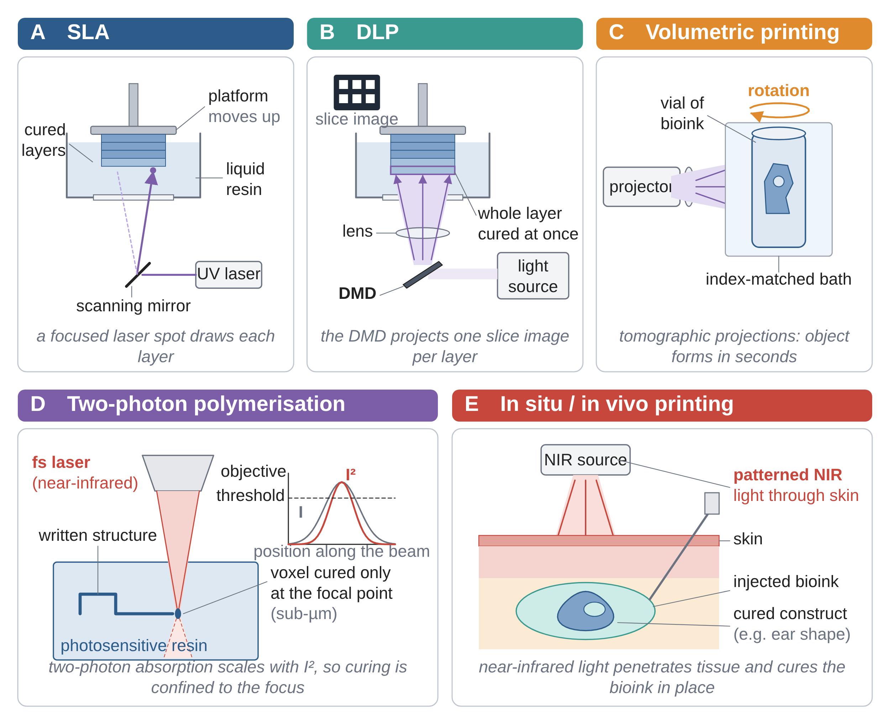
Two-photon polymerisation relies on a photoinitiator molecule absorbing two near-infrared photons at the same time; together they carry the energy of one UV photon (for example, two photons of 780 nm act like one of 390 nm). Simultaneous absorption is only likely where the photon density is extremely high, so its rate scales with the square of the intensity and is significant only in the focal volume of a tightly focused laser. A femtosecond pulsed laser provides this very high peak intensity at a low average power. Outside the focus the resin is transparent to near-infrared light and the beam passes without curing; because the squared intensity profile is narrower than the light spot itself, the cured voxel can be smaller than the diffraction limit, and features of about 100 nm can be written. Near-infrared light (about 700–1000 nm) is also the choice for curing through the skin, because tissue absorbs and scatters it much less than UV or visible light (the optical window of tissue): it penetrates several millimetres, whereas UV light is absorbed within the top tens of micrometres and damages cells.
4.4.4.1 Laser-Assisted Bioprinting (LAB)
LAB uses short laser pulses to eject tiny droplets from a thin donor film (Figure 4.28).
The setup consists of three layers:
a transparent substrate (e.g. glass),
a metallic absorbing layer (gold or titanium),
and a thin layer of bioink containing cells.
A pulsed laser locally heats the metallic film, generating a micro-bubble that propels a droplet towards the collector substrate. A pulsed laser delivers its energy in very short bursts (nanoseconds) instead of continuously. The peak power is therefore very high while the average heat input stays low: the absorbing film is vaporised within nanoseconds, before heat can spread to the cells, and each pulse transfers exactly one droplet. Each pulse transfers picolitre volumes with positional accuracy better than 10 µm.
Figure 4.28A shows this set-up in more detail. The laser pulse is focused through the transparent support of the donor ribbon onto an energy-absorbing layer, which may be a thin metal film or gelatin; local vaporisation creates a vapour bubble that drives a jet of bioink across the air gap, and the jet breaks up into a droplet that lands on the receiving substrate. Without such an absorbing layer the bubble would form in the bioink itself and the cells would be exposed directly to the laser, so the layer also acts as a shield against laser and thermal damage. Figure 4.28B shows why the pulse energy must be tuned: at low energy the bioink only bulges and relaxes back, at intermediate energies a single droplet or a clean jet is transferred, and at high energy the jet breaks up repeatedly, producing satellite droplets and splashing.
Advantages
Contact-free: no nozzle clogging or shear damage. Nothing touches the bioink except the laser pulse, so the problems that dominate inkjet and extrusion printing, blocked nozzles and wall shear stress, disappear and viability is typically above 95 %.
High spatial resolution (< 10 µm) and single-cell precision. The transferred droplet is defined by the focused laser spot rather than by an orifice, so individual cells can be placed where they are wanted, which is what makes the single-cell patterning studies in this section possible.
Works with moderately viscous inks (1–300 mPa·s). The donor layer only has to absorb the pulse and release a droplet, so inks from culture medium to moderately viscous hydrogels can be printed, a far wider range than inkjet allows.
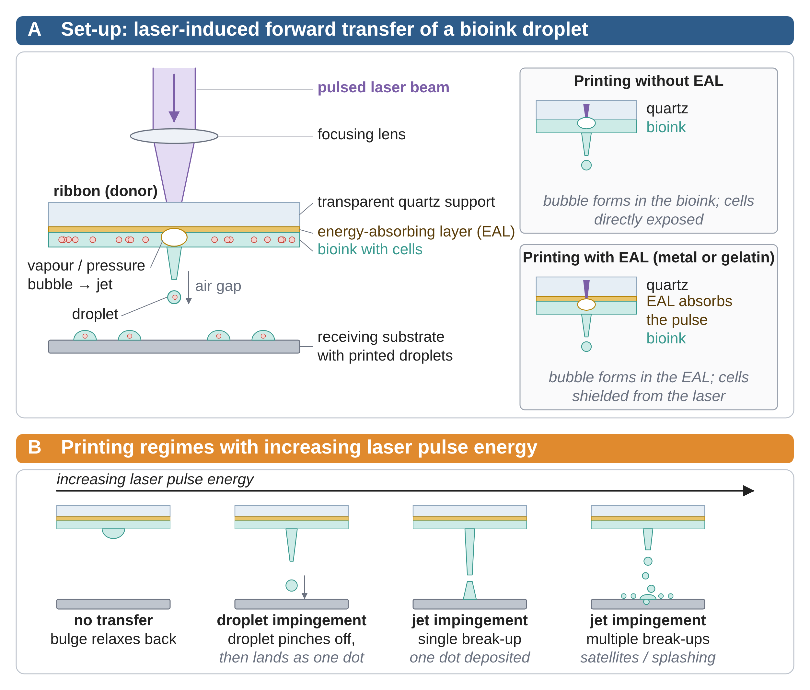
Limitations
Complex, expensive optics. A pulsed laser, a motorised donor ribbon and precise focusing optics are needed, and a fresh coated ribbon has to be prepared for every run, which makes the method costly and demanding to operate.
Thermal exposure risk if over-energised. The absorbing layer converts the pulse into a vapour bubble, and too high a pulse energy heats the bioink or the cells next to it, so the energy window has to be set for every ink and ribbon thickness.
Low throughput (one pulse → one droplet). Each pulse transfers one droplet of a few picolitres, so filling a square centimetre takes many thousands of pulses. The method suits small, precisely defined patterns rather than bulk constructs.
LAB excels for single-cell positioning, DNA/protein arrays, and neural patterning studies (Figure 4.29).
Figure 4.29 gives three examples. In Figure 4.29A, mesenchymal stem cells are printed droplet by droplet into lines that enclose cell-free squares, giving a scaffold-free cell grid. In Figure 4.29B, a gelatin absorbing layer supports the formation of cell-laden jets, and cell rings printed on top of one another build a Y-shaped cellular tube with an open lumen. In Figure 4.29C, defined spots of cells and extracellular matrix are printed into the printing zone of a lab-on-a-chip, where cell behaviour in different matrices and the delivery of drugs by different carriers can be compared. Together these examples show how micrometre-scale placement serves tissue patterning, tubular structures and drug-screening platforms.
Laser-assisted bioprinting is also the basis of one of the first bioprinting platforms installed in a hospital: in 2021 a clinical-grade laser bioprinter for autologous, full-thickness skin substitutes was set up in Marseille for a phase I/IIa clinical trial in burn and wound patients (Poietis, 2021).
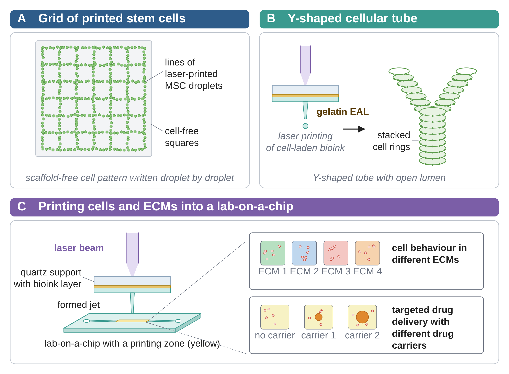
4.4.4.2 Stereolithography (SLA) for Bioprinting
SLA for biofabrication mirrors the polymer 3D-printing process (Section 4.2.1) but uses biocompatible photopolymers such as GelMA, PEGDA, or methacrylated hyaluronic acid.
A focused UV or blue laser scans the surface of a bioink vat, solidifying one layer at a time (Figure 4.30). By tuning exposure energy and photoinitiator concentration, cell-friendly curing can be achieved.
Resolution can reach 20–50 µm, and entire constructs are printed in minutes. Because only a small volume is exposed at any instant, photothermal stress is minimal, maintaining cell viability above 90% in optimised conditions.
Advantages
High precision and surface smoothness. The laser spot is focused to tens of micrometres and each layer cures against a flat surface, so struts of a lattice come out smooth and dimensionally accurate, which matters when the geometry sets the mechanical behaviour.
Well suited to transparent or microfluidic structures. The same accuracy and the optically clear resins make SLA convenient for the rigid chip bodies and channel networks that carry cell-laden gels in organ-on-chip devices (Section 3.5).
Limitations
Restricted to photocurable bioinks. The ink must contain a photoinitiator and crosslink on exposure, so the material choice is limited to GelMA, PEGDA and similar methacrylated polymers (Section 4.4.1.5), and the initiator and the light dose have to be tolerated by the cells.
Limited construct height (< 5 mm) due to light attenuation. Light is absorbed and scattered by the gel and by the cells in it, so the dose at the bottom of a tall construct is too low to cure properly, which keeps practical heights to a few millimetres.
SLA is used for cell-laden hydrogel lattices and microfluidic organ-on-chip bases.
Figure 4.30A shows the classical SLA arrangement used for such constructs. A scanner system steers the laser beam so that its light spot traces one layer on the surface of the photosensitive liquid bath; the build platform then lowers the part by one layer thickness, fresh resin flows over it, and the next layer is cured on top. Figure 4.30B shows two kinds of PEG-based hydrogel that this approach can produce: a woodpile lattice of fine struts in alternating 0° and 90° layers, with regular square pores, and a block with open internal channels. Such regular, reproducible architectures are what make SLA attractive for cell encapsulation and microfluidic bases.
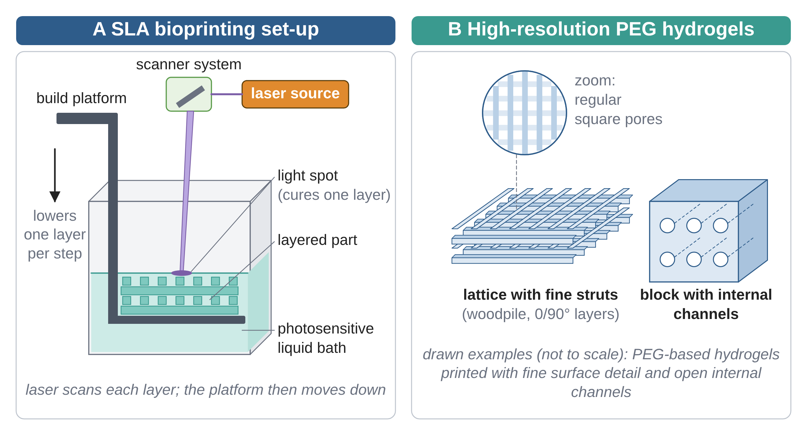
4.4.4.3 Digital Light Processing (DLP)
DLP replaces laser scanning with whole-layer projection from a digital micromirror device (DMD). Each mirror corresponds to one pixel of the projected pattern; thousands of voxels can be cured simultaneously (Figure 4.31). This approach is far faster than SLA and ideal for small, complex microtissues.
Recent DLP systems use violet light of 405 nm, at the short-wavelength edge of the visible spectrum (about 380–750 nm), and more cytocompatible photoinitiators such as lithium phenyl-2,4,6-trimethylbenzoylphosphinate (LAP), which absorbs much more strongly than Irgacure 2959 and can be activated at 405 nm (Fairbanks et al., 2009). Feature sizes below 25 µm are achievable. Adding a non-toxic food dye as a photoabsorber limits how deep the light penetrates, so that each layer cures only to the intended depth; with this approach, entangled vascular networks and alveolar-like air sacs that can be ventilated and perfused were printed inside hydrogels (Grigoryan et al., 2019).
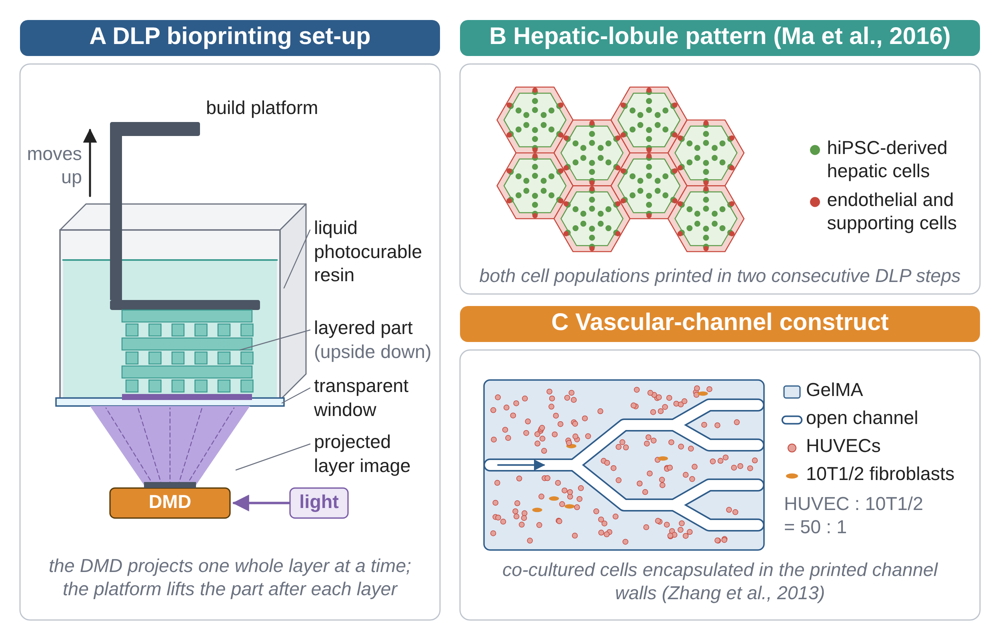
Advantages
Fastest layer-based approach. The micromirror device cures a whole layer in one exposure instead of tracing it, so the time per layer is independent of how much area is cured and a construct is finished in minutes rather than hours.
Uniform exposure and reduced mechanical error. Every point of the layer receives the same dose at the same time and no scanner has to move, so there are no stitching errors and the mechanical properties are more uniform than with a scanned laser.
Feature size < 25 µm with optimised optics. Each micromirror defines one pixel in the build plane, and with a reducing lens the pixel can be made smaller than 25 µm, which is enough to resolve individual channels in a microvascular pattern.
Limitations
Restricted resin palette. As with SLA, only photocrosslinkable inks can be used, and the initiator must absorb at the wavelength of the projector, in practice 385--405 nm, which rules out many of the hydrogels used in extrusion printing.
Light scattering limits height and isotropy. Cells scatter the projected light sideways, so the cured region widens with depth and the dose at the bottom is uncertain; this both limits the height and makes features in deeper layers less sharp than in the first ones.
Applications: microneedles, microtissue arrays, vascular networks in soft hydrogels.
Figure 4.31A shows a typical constrained-surface DLP set-up: the micromirror device projects the pattern of a whole layer through the transparent window at the bottom of the resin vat, the layer cures at once on the part hanging from the build platform, and the platform then moves up for the next layer. The two constructs in Figure 4.31B and 4.31C illustrate what this speed and precision make possible in cell-laden GelMA. In the first, hiPSC-derived hepatic cells are arranged in hexagonal, radially organised lobule units surrounded by endothelial and supporting cells, printed in two consecutive DLP steps. In the second, endothelial cells and fibroblasts are encapsulated in the walls of a construct with open, branching channels. Both show that DLP can place several cell types in defined positions within one print.
4.4.4.4 Computed Axial Lithography (CAL) and Volumetric Bioprinting
CAL departs from layer-by-layer printing entirely. It reconstructs a 3D object in one step using computed tomographic illumination (Figure 4.32). A cylindrical vial of photocurable resin is rotated while a digital projector emits a sequence of light patterns corresponding to tomographic slices. Wherever the integrated dose exceeds the polymerisation threshold, the resin solidifies. After seconds to minutes, the surrounding liquid is rinsed away, revealing the solid construct.
Because CAL eliminates layering, the resulting structures are isotropic, with no stair-stepping artefacts. Applied to cell-laden gelatin methacryloyl (GelMA), this approach — volumetric bioprinting — produced centimetre-scale, anatomically shaped constructs such as a meniscus graft in seconds to tens of seconds, with cell viability above 85 % (Bernal et al., 2019).
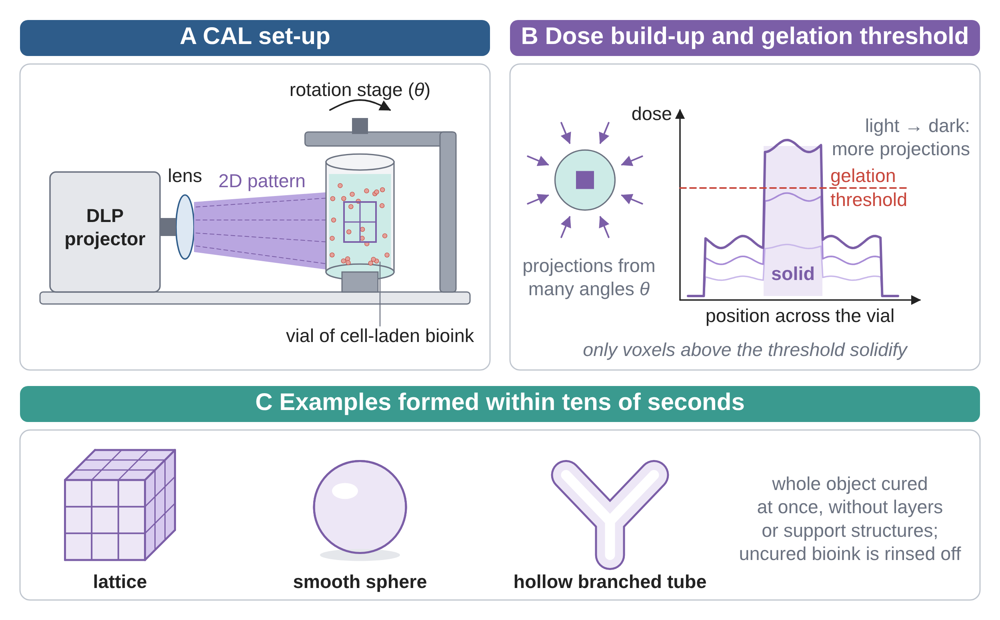
Since then, volumetric printing has been extended in three directions. Optically tuned bioresins, whose refractive index is matched to that of the cells, reduce light scattering and allowed liver organoids to be printed into centimetre-scale, metabolically active constructs in less than 20 s (Bernal et al., 2022). In xolography, two light beams of different wavelengths cross inside the resin, and polymerisation occurs only where they intersect, which gives about ten times higher resolution than CAL (Regehly et al., 2020). Context-aware volumetric printing, finally, combines imaging of the vial with computer vision, so that new structures such as vascular-like channels are generated and aligned automatically around cells or objects already present in the bioresin (Florczak et al., 2025).
Advantages
No layers → no stair-step artefacts. The object is cured as a whole rather than built up in layers, so there are no layer interfaces to act as weak planes and the surface is smooth in every direction, which also removes the anisotropy of extruded constructs.
Minimal stress on embedded cells. There is no nozzle, no shear and no contact with the forming object, and the exposure lasts only seconds, so embedded cells experience less stress than in any other printing method.
Fast printing (seconds to minutes). Because the whole volume is addressed at once, the build time depends on the required light dose rather than on the size of the object, so a centimetre-scale construct is finished in well under a minute.
Limitations
Complex calibration and computation. The projections are computed as an inverse tomographic reconstruction for each object and have to be corrected for absorption and for the optics of the rotating vial, so preparing a print takes more effort than slicing a model.
Limited penetration depth of visible light. The light must reach the centre of the vial, so cells and other scattering particles blur the dose distribution; this limits both the cell density and the diameter of the object that can still be cured accurately.
CAL can fabricate centimetre-scale, cell-laden hydrogels with > 85 % viability—an emerging frontier for rapid tissue construction.
4.4.4.5 Photochemistry and Bioink Considerations
Photopolymerisation relies on photoinitiators that absorb light and generate radicals or cations initiating crosslinking (Table 4.7).
Biocompatibility depends on the wavelength, intensity, and exposure time:
UV photoinitiators (e.g. Irgacure 2959) effective but can damage DNA.
Visible-light initiators (e.g. LAP, Eosin Y) are safer and preferred for living systems.
Oxygen inhibition, light scattering, and limited penetration depth constrain construct thickness (typically < 5 mm).
| Photoinitiator | Activation Wavelength (nm) | Typical Concentration (wt %) | Cell Viability (%) | Example Bioink |
|---|---|---|---|---|
| Irgacure 2959 | 365 | 0.05–0.5 | 70–85 | GelMA, PEGDA |
| LAP | 405 | 0.05–0.3 | 85–95 | GelMA, HA-MA |
| Eosin Y + triethanolamine | 515–530 | 0.0007–0.007 (0.01–0.1 mM) | 90–95 | Gelatin, collagen blends |
4.4.4.6 Advantages of Light-Based Bioprinting
Light-based bioprinting combines optical precision with gentle handling of living matter, offering capabilities that are difficult to achieve by mechanical extrusion or inkjet systems (Figure 4.33).
High spatial resolution – Photopolymerisation is governed by the diffraction-limited laser or pixel size, allowing feature resolution down to a few micrometres. Such precision enables the fabrication of capillary-sized channels, micro-pillars, or ECM-mimetic lattices.
No mechanical shear – Because the process is contact-free, cells experience almost no pressure gradients or shear stress. This is particularly beneficial for fragile cell types such as stem cells, neurons, or delicate spheroids that might be damaged in nozzle-based systems.
Rapid polymerisation and shape fidelity – Photo-initiated crosslinking solidifies the construct within seconds, minimising diffusion-driven deformation. This yields excellent geometrical fidelity, even for high-aspect-ratio or thin-wall structures.
Complex geometries – Layer-wise or volumetric light exposure supports hollow, overhanging, or interlaced architectures that are impossible to print mechanically. DLP and CAL technologies can therefore generate continuous vascular or luminal networks without the need for sacrificial supports.
Together, these attributes make light-based bioprinting a cornerstone technique for applications demanding both precision micro-architecture and high cell viability, including microvascular tissue models, organoids, and bioelectronic interfaces.
Figure 4.33 places these advantages in context by comparing light-based bioprinting with extrusion and inkjet printing on five criteria: resolution, printing speed, cell viability, shear stress and shape fidelity, each marked as favourable, intermediate or limiting. Extrusion achieves reasonable shape fidelity but is limited by its coarser resolution, slow printing, high shear and lower viability. Inkjet printing occupies an intermediate position, with good cell survival but only moderate resolution and fidelity. Light-based printing is rated favourable on all five criteria. The four advantages discussed above, namely diffraction-limited resolution, the absence of nozzle shear, crosslinking within seconds and hollow or overhanging geometries without sacrificial supports, are summarised in the lower part of the figure.
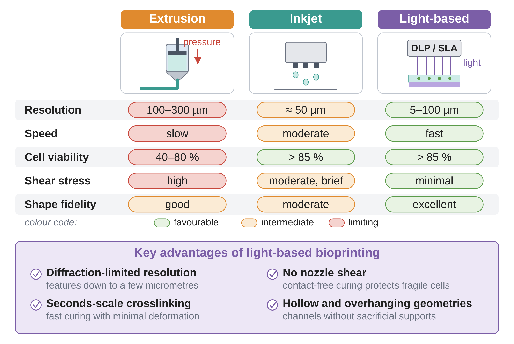
4.4.4.7 Limitations of Light-Based Bioprinting
Despite its precision and cell-friendly operation, light-based bioprinting still faces several technical and biological constraints that restrict widespread clinical translation (Figure 4.34).
Material restrictions – Only photo-curable bioinks can be used, typically containing acrylate or methacrylate groups. Many natural hydrogels (e.g. collagen, fibrin) lack these functional groups and must be chemically modified, which can alter biocompatibility or degradation behaviour.
Limited penetration depth – Optical absorption and scattering within cell-laden gels attenuate light intensity, restricting construct height to a few millimetres. Uniform curing of large volumes therefore remains challenging, even with visible-light initiators.
Phototoxicity and radical damage – UV exposure and free-radical formation may harm cells or sensitive biomolecules. Visible-light photoinitiators such as LAP reduce but do not eliminate this risk.
Complex instrumentation – Systems require precise optical alignment, projection calibration, and resin control. This raises cost and limits accessibility compared with extrusion printers.
Multi-material limitations – Printing distinct materials in one construct is difficult because each resin must remain optically compatible and crosslink under the same wavelength.
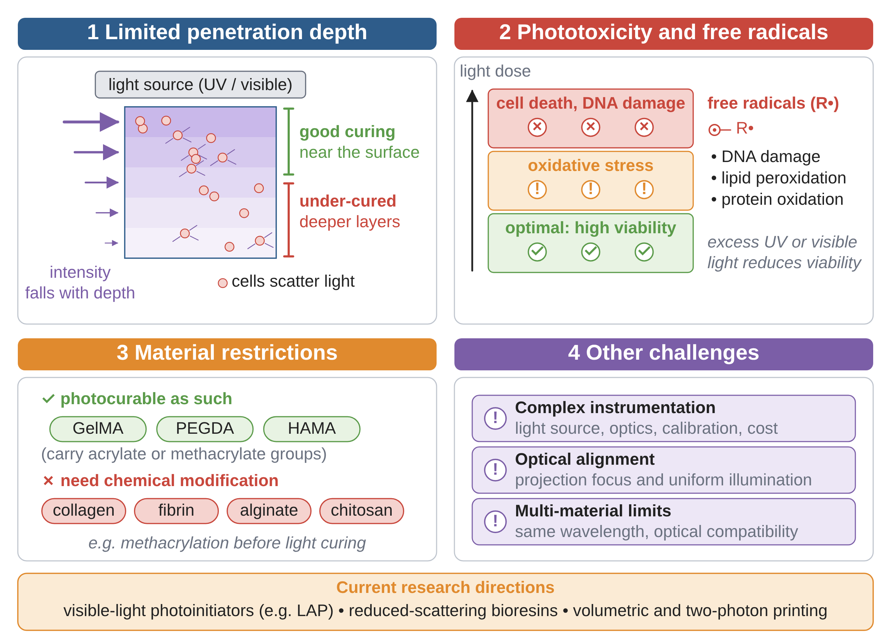
These challenges motivate ongoing research into new photoinitiators, reduced-scattering resins, and volumetric light architectures (e.g. CAL and two-photon lithography) to extend the method’s reach to thicker, multi-material, and clinically relevant tissues.
4.4.4.8 Future Outlook of Light-Based Bioprinting
The next evolution of light-based bioprinting will expand from static patterning towards dynamic, volumetric, and multi-material fabrication. Recent advances such as volumetric printing (CAL and xolography), two-photon polymerisation and holographic projection allow centimetre-scale constructs to be printed in seconds rather than hours, or microscale features with sub-cellular precision — although not yet both at once (Figure 4.35).
Emerging directions include:
Volumetric bioprinting: simultaneous solidification of entire 3D geometries through tomographic light fields, minimising stress and time.
Multi-wavelength systems: sequentially activate different photoinitiators, enabling multi-material constructs within a single build.
Bio-friendly photochemistry: visible-light and enzyme-assisted initiators minimise radical damage while maintaining high speed.
Integration with microfluidics: combining light-based patterning with perfusable chip architectures to create living organ models.
In situ bioprinting: portable DLP systems for direct repair of tissues inside the body, guided by imaging feedback.
Printing with sound: focused ultrasound penetrates several centimetres of tissue, where light cannot. Ultrasound-responsive inks have been cured through more than 10 mm of tissue ex vivo (Kuang et al., 2023), and imaging-guided sound printing has deposited drug-loaded and cell-laden hydrogels with about 150 µm resolution deep inside the bladder and the leg muscle of living animals (Davoodi et al., 2025). The principle is the acoustic counterpart of the in-situ printing shown in the lower panel of Figure 4.35. A hydrogel precursor is first injected into the target site, so the ink is already inside the body and nothing has to be deposited through the skin. A curved ultrasound transducer outside the body then focuses its beam to a small spot, a few hundred micrometres across, at a chosen depth; only at that focus is the acoustic intensity high enough to trigger crosslinking, either by locally releasing a crosslinker from heat-sensitive liposomes or by the heat of absorption itself. Because ultrasound imaging uses the same transducer, the operator sees the anatomy and the growing construct in the same image, and the focus is steered point by point from this live picture, which is what makes the printing imaging-guided: the target is tracked as the tissue moves and breathes, instead of being positioned once from a pre-operative scan. Deep repair without an incision therefore becomes possible, which is the limitation that the light-based in-situ systems above cannot overcome.
Light-based bioprinting thus represents a rapidly converging field at the interface of optics, materials science, and biology, offering the precision of photolithography with the living complexity of tissue engineering.
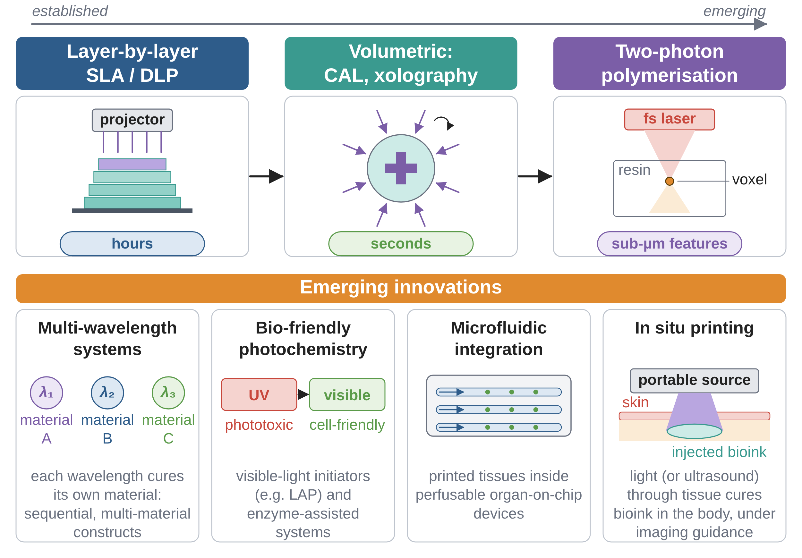
4.4.5 Representative Applications
Bioprinting has matured from a curiosity into a versatile manufacturing platform for functional tissues and organ models (Figure 4.36). Its greatest power lies in integrating cells, materials, and architecture to recreate physiological function. The following examples illustrate how different printing strategies meet the specific demands of bone, cartilage, liver, cardiac, skin, and neural tissues.
Figure 4.36 summarises the workflow that all of these applications share. A printable geometry is first designed from medical images and CAD models, and a bioink is prepared by combining a hydrogel with living cells, growth factors and a crosslinker. The construct is then printed by extrusion, inkjet or light-based methods and stabilised by light, ionic or thermal crosslinking. Printing is not the end point: the construct must mature in an incubator or bioreactor for days to weeks while the cells proliferate and deposit their own matrix, after which its viability, mechanical properties and differentiation are tested. Each tissue discussed below represents a particular choice of design, bioink, printing method and culture within this common sequence.
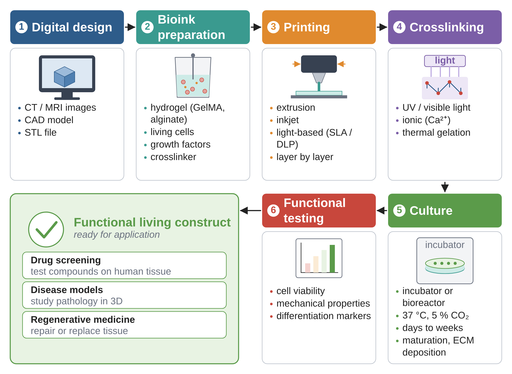
4.4.5.1 Bone and Cartilage
Bone requires a stiff, mineralised environment that supports osteogenesis. Extrusion printing of bioinks containing hydroxyapatite, tricalcium phosphate, or bioactive glass particles within hydrogels such as alginate-gelatin or PCL scaffolds has produced mechanically competent grafts. Osteoblasts and mesenchymal stem cells differentiate efficiently when cultured under perfusion or mechanical loading.
Cartilage is viscoelastic and avascular, ideally suited to hydrogel matrices such as gelatin methacryloyl (GelMA), hyaluronic acid or collagen II. By tuning layer geometry and curing parameters, extrusion and DLP printing have generated chondrocyte-laden constructs with a native-like compressive modulus (≈ 0.3–0.8 MPa). Bioprinted cartilage has now reached the first patients. In 2022, a young woman with microtia received an ear implant bioprinted from her own expanded ear chondrocytes in a collagen-based bioink, surrounded by a resorbable supporting shell, in a phase 1/2a trial (3DBio Therapeutics, 2022); results have not yet been published in a peer-reviewed journal. In 2023, surgeons in Seoul implanted a patient-specific trachea, 3D-bioprinted with donor-derived nasal stem cells and cartilage cells, in a patient with a tracheal defect after thyroid cancer surgery (Korea Biomedical Review, 2024).
4.4.5.2 Liver
The liver’s dense vasculature and metabolic heterogeneity make it an excellent testbed for multi-cell printing. Inkjet or extrusion bioprinting can co-deposit hepatocytes, endothelial cells, and stellate cells in architectures mimicking hepatic lobules.
Perfusable constructs printed in GelMA or alginate-collagen blends maintain albumin secretion and urea metabolism for several weeks. Light-based printing has further refined micro-vascular precision, producing in-vitro models for drug toxicity and metabolism studies.
4.4.5.3 Heart and Vascular Networks
Bioprinting has enabled fabrication of vascularised myocardial patches that combine contractile cardiomyocytes with perfusion channels.
Co-axial extrusion creates hollow filaments with an endothelialised lumen, while support-bath printing within yield-stress gels (e.g. Carbopol or gelatin slurry) allows free-form branching vessels.
Electrical pacing and calcium imaging confirm synchronous contraction of printed cardiac tissues. Vascular networks formed via angiogenic sprouting or sacrificial printing (e.g. Pluronic F127 removal) are crucial for nutrient transport in thick constructs.
4.4.5.4 Skin and Epithelial Tissues
Skin bioprinting combines keratinocytes, fibroblasts, and melanocytes within collagen- or fibrin-based hydrogels.
Multi-nozzle extrusion enables layer-by-layer deposition of dermal and epidermal strata directly onto wound sites (“in situ bioprinting”).
Printed grafts show accelerated healing and reduced scarring in pre-clinical studies. Similar strategies are applied to corneal,tracheal, and intestinal epithelium models using transparent or elastic bioinks.
4.4.5.5 Neural and Organoid Models
The nervous system presents unique challenges of alignment and guidance. Laser-assisted and DLP bioprinting can position neuronal and glial cells with micrometre accuracy along predefined channels, facilitating axon growth.
In parallel, bioprinted brain and gut organoids derived from induced pluripotent stem cells (iPSCs) provide reproducible micro-physiological models for developmental and neurotoxicology research. Table 4.8 summarises representative bioprinted tissues with their bioinks, printing methods and cell types.
| Tissue / Organ | Printing Method | Bioink Composition | Cell Types | Functional Outcome / Application |
|---|---|---|---|---|
| Bone | Extrusion | Alginate–gelatin + hydroxyapatite | Osteoblasts, MSCs | Mineralised, load-bearing scaffold |
| Cartilage | DLP / Extrusion | GelMA, HA, collagen II | Chondrocytes | Elastic cartilage for joint / ear |
| Liver | Inkjet / Extrusion | Alginate–collagen / GelMA | Hepatocytes, ECs, stellate cells | Metabolic function, toxicity testing |
| Heart / Vasculature | Co-axial / Light-based | GelMA + fibrin + Pluronic | Cardiomyocytes, ECs | Perfusable, beating cardiac patch |
| Skin | Multi-nozzle Extrusion | Collagen I + fibrin | Fibroblasts, keratinocytes | Stratified dermal–epidermal layers |
| Neural | Laser-assisted / DLP | Gelatin + laminin | Neurons, glia | Guided axon growth, neural networks |
4.4.6 4D Bioprinting (Time-Responsive and Dynamic Constructs)
If 3D bioprinting gives living tissues their form, then 4D bioprinting gives them behaviour. The “fourth dimension” refers to time — the ability of printed constructs to change shape, composition, or function after fabrication in response to specific stimuli (Figure 4.37).
This dynamic behaviour is engineered through smart materials whose physical or chemical properties evolve when triggered by temperature, pH, light, magnetic fields, or biological signals.
Figure 4.37 follows such a construct through four stages. A flat bilayer is first printed from a stimulus-responsive layer and a passive, cell-laden layer. A stimulus such as a temperature or pH change, light, a magnetic field or a biological cue is then applied. Because only the responsive layer swells or shrinks, the sheet bends or folds, and it finally reaches a functional state, for example a tube that resembles a blood vessel. The printed shape is therefore only a starting point: the final form and function are programmed into the material and unfold over time.
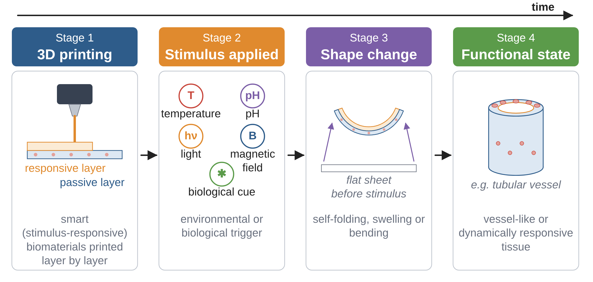
4.4.6.1 Principles and Mechanisms
At its core, 4D bioprinting transforms static, printed materials into dynamic living systems that change over time (for a recent review, see Lai et al., 2024).
It merges smart materials science with biological design, enabling constructs that can fold, stiffen, release, or remodel in response to environmental cues. In essence, 4D bioprinting unites three essential components:
Stimuli-responsive biomaterials — often referred to as smart hydrogels;
Controlled spatial patterning of multiple materials or cell types;
External or internal triggers that drive transformation after printing.
The most common transformation mechanisms include:
Thermo-responsive swelling/shrinking: polymers such as poly(N-isopropylacrylamide) (PNIPAM) collapse above 32 °C, enabling reversible folding or bending.
pH-responsive ionisation: polymers like chitosan or poly(acrylic acid) expand or contract as environmental pH changes, driving mechanical motion.
Photo-responsive chemistry: light-induced isomerisation or bond cleavage (e.g. azobenzene groups) allows precise, spatiotemporal control of stiffness or shape.
Magneto- and electro-responsive behaviour: embedded Fe₃O₄ nanoparticles or conductive polymers such as polypyrrole permit remote actuation via external fields.
Bio-responsive activity: enzymatic degradation or cell-secreted factors remodel crosslinks, coupling biological activity directly to material behaviour.
These stimuli–response mechanisms convert printed scaffolds into adaptive, multifunctional systems that can self-fold, stiffen during differentiation, release therapeutic molecules, or even self-heal through reversible bonding—bringing biofabrication closer to true self-assembly and living tissue dynamics.
4.4.6.2 Design Strategies
The transformation of a printed construct in 4D bioprinting depends not only on the choice of smart material but also on how that material is spatially arranged and crosslinked. Through deliberate patterning and composition gradients, designers can encode motion, self-repair, or mechanical adaptation directly into the construct’s architecture.
Four complementary strategies—multi-material printing, gradient bioinks, dynamic crosslinking, and cell-mediated remodelling—illustrate how form and time can be programmed together to yield living, adaptive structures.
(1) Multi-material printing
Combining two or more materials with different swelling or mechanical properties allows programmable deformation. For example, alternating stripes of GelMA and PNIPAM can bend upon heating as one material contracts and the other remains stable.
(2) Gradient bioinks
Gradients in crosslinking density or nanoparticle content create directional responses to uniform stimuli — analogous to muscle actuation.
(3) Dynamic crosslinking chemistries
Reversible covalent bonds (e.g. Schiff base linkages, Diels–Alder reactions) or supramolecular interactions (e.g. host–guest binding) permit self-healing and remodelling under mild conditions.
(4) Cell-mediated 4D responses
Living cells can themselves act as sensors and actuators: fibroblasts contract collagen matrices; osteoblasts deposit mineral; endothelial cells form vessels that remodel the surrounding matrix. Table 4.9 lists representative stimulus-responsive materials, the shape or property change they produce and their cell compatibility.
| Stimulus Type | Representative Material | Response Behaviour | Typical Application | Notes on Cell Compatibility |
|---|---|---|---|---|
| Temperature | PNIPAM, Pluronic F127 | Reversible swelling/shrinking | Self-folding scaffolds | Good below 40°C |
| pH | Chitosan, PAA | Ionisation-driven expansion/contraction | Controlled drug release | Sensitive to medium composition |
| Light | GelMA + azobenzene | Photocrosslink breakage / shape change | On-demand actuation | High precision; limit UV exposure |
| Magnetic field | Fe₃O₄-nanocomposite gel | Orientation or motion under field | Remote stimulation of cells | Excellent for non-contact control |
| Enzymatic / biochemical | Fibrin, gelatin / MMP-sensitive peptides | Degradation or remodelling by cell enzymes | Dynamic ECM models | Fully biocompatible |
4.4.6.3 Applications and Emerging Directions
Once time-responsive behaviour can be programmed into printed materials, the range of potential applications broadens dramatically. 4D bioprinting transforms static scaffolds into active systems—capable of folding, stiffening, releasing, or signalling in response to environmental cues. These dynamic properties are being exploited across biomedical, pharmaceutical, and bioelectronic domains, as illustrated by the following examples.
Self-folding tissues: Bilayer constructs that curl into tubular or spherical forms mimicking vasculature or intestinal crypts.
Dynamic scaffolds: Hydrogels that stiffen as cells differentiate, providing mechanical cues for osteogenesis or myogenesis.
Smart drug-delivery platforms: Constructs that release therapeutics in response to local pH or enzymatic activity.
Soft actuators and biosensors: hybrid cell–material systems that bend or emit signals when stimulated, bridging bioelectronics and tissue engineering.
A particularly promising avenue is cell-instructive 4D printing, where living cells drive structural change through matrix remodelling — a step closer to true self-assembly and organ development in vitro.
4.4.7 Strategies for Vascularisation
In living tissues, most cells lie within a few tens of micrometres of a capillary; in heart muscle the distance between neighbouring capillaries is only about 20 µm (Rakusan et al., 1992). In a cell-dense construct without vessels, oxygen penetrates only about 100–200 µm before it is consumed (Exercise Q5 in Section 4.7.2). Beyond this diffusion limit, oxygen and nutrients cannot reach cells fast enough, and metabolic waste accumulates. Consequently, vascularisation—the creation of perfusable networks that deliver fluids—is the central engineering challenge of tissue biofabrication. Bioprinting provides a toolbox to address this limitation through architectural, biochemical, and biological strategies (Figure 4.38).
4.4.7.1 Architectural Approaches
One route towards vascularisation is purely architectural—using printing geometry itself to create predefined channels that mimic blood vessels. Rather than waiting for cells to self-organise, these methods rely on engineered voids and lumens that can later be lined with endothelial cells or perfused with medium.
By controlling channel diameter, branching, and connectivity, such strategies ensure efficient nutrient transport and long-term tissue viability.
The three most common approaches are sacrificial-ink printing, coaxial extrusion, and embedded (support-bath) printing, each offering a distinct way to sculpt perfusable micro-networks within soft hydrogels.
(a) Sacrificial Ink Printing
Here, a temporary material is printed to form channels inside a structural hydrogel and later removed. Common sacrificial inks include Pluronic F127, gelatin, or carbohydrate glass, which can be liquefied by temperature change or dissolved in buffer. After removal, open microchannels remain, which can be seeded with endothelial cells or perfused with culture medium.
Example: Miller et al. (2012) printed a 3D lattice of carbohydrate glass within a cell-laden gel and then dissolved it, creating a fully perfusable vascular network.
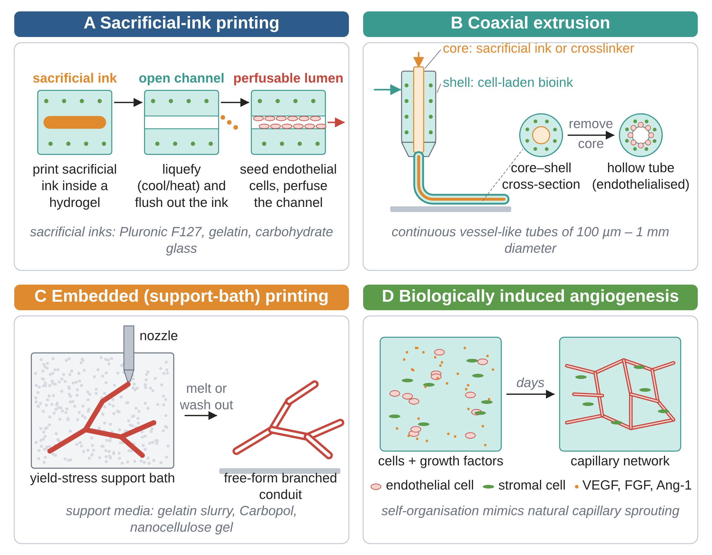
(b) Coaxial Extrusion
Dual-nozzle systems extrude a core–shell filament, typically a cell-laden hydrogel shell around a sacrificial or crosslinking core. When the core is removed or replaced, the remaining lumen can be endothelialised to form vessel-like tubes. This method produces continuous channels ranging from 100 µm to 1 mm diameter.
(c) Embedded or Support-Bath Printing
Printing within a yield-stress support medium (e.g. gelatin slurry, Carbopol, or nanocellulose gel) allows deposition of complex free-form vascular geometries without collapse. After curing, the support bath is melted or washed away, leaving intact suspended conduits.
4.4.7.2 Biochemical and Biological Strategies
Beyond structural design, vascularisation can also emerge from biological self-organisation. Rather than printing predefined channels, these approaches stimulate cells to form networks through molecular and cellular cues that mirror natural angiogenesis.
By providing gradients of growth factors, co-culturing endothelial with parenchymal cells, or combining both with engineered templates, bioprinted tissues can develop hierarchical vascular systems that arise organically over time—bridging the gap between engineered architecture and living biology.
(a) Angiogenesis Induction
Instead of pre-fabricated channels, some constructs rely on the self-organisation of endothelial cells stimulated by growth factors such as VEGF, FGF, or angiopoietin-1. Micro-patterned gradients of these molecules direct sprouting and network formation over days. In vitro, this approach recreates the natural process of capillary invasion.
(b) Endothelial Co-culture
Mixing endothelial cells with parenchymal cells (e.g. hepatocytes or osteoblasts) in the same bioink accelerates spontaneous vascular network formation. Perfusion bioreactors further stabilise the nascent vessels by applying physiological shear stress.
(c) Hybrid Approaches
The most successful constructs combine architectural and biological cues—for example, printing sacrificial channels that later serve as templates for angiogenic invasion, producing hierarchical networks spanning macro- to micro-scales. Table 4.10 compares the architectural and biological vascularisation strategies.
| Strategy | Typical Materials / Bioinks | Feature Size | Key Advantages | Limitations | Representative Applications |
|---|---|---|---|---|---|
| Sacrificial ink | Pluronic F127, gelatin, carbohydrate glass | 100–1000 µm | Simple fabrication, high perfusion rate | Requires post-removal step | Bone, cardiac, liver models |
| Coaxial extrusion | Alginate, GelMA shells + CaCl₂ or sacrificial core | 100–800 µm | Continuous tubular structures | Limited branching | Vascular grafts, skin, muscle |
| Support-bath printing | Gelatin slurry, Carbopol, nanocellulose | 50–1000 µm | Free-form geometry, high fidelity | Extra processing to remove bath | Brain, heart, large organs |
| Angiogenic induction | Collagen, fibrin, GelMA + VEGF/FGF | 10–200 µm | Natural microvessel formation | Slow, less spatial control | Organoids, micro-tissues |
| Endothelial co-culture | Composite hydrogels | 20–200 µm | Physiological vessel behaviour | Requires long culture | Liver, cardiac patches |
4.4.7.3 Perfusion and Functional Maturation
Once channels are established, dynamic perfusion is critical. Continuous flow supplies oxygen and nutrients, removes waste, and exerts shear stress that promotes endothelial alignment and barrier function. Advanced chips integrate micro-pumps or gravity-driven circuits to sustain flow rates of 1–10 µL min⁻¹. Monitoring of oxygen tension and pressure gradients provides quantitative feedback on tissue health.
4.4.7.4 Applications and Emerging Techniques
The drive to replicate functional vascular networks has inspired a new generation of hybrid technologies that merge engineering precision with biological adaptability. Recent innovations move beyond static microchannel printing towards dynamic, high-resolution, and sensor-integrated systems.
These techniques not only improve vascular fidelity but also allow continuous monitoring and control of tissue perfusion—essential for long-term viability and physiological function.
Two-Photon Photolithography: allows direct fabrication of micron-scale vascular lattices within hydrogels using femtosecond laser pulses, achieving sub-cellular precision.
Acoustic and Magnetic Patterning: applies standing sound waves or magnetic fields to orient endothelial cells or magnetic microbeads before crosslinking, guiding anisotropic vascular alignment.
Volumetric Bioprinting: uses computed axial lithography (CAL) to print perfusable channels through a whole construct within seconds, without layering artefacts (Section 4.4.4.4).
Bioelectronic Sensors: integrate oxygen, pH, and flow microsensors within printed constructs, creating smart perfusion systems capable of real-time feedback and automated regulation.
4.4.7.5 Future Outlook
The next phase of vascular biofabrication will merge computational design, AI-assisted simulation, and real-time feedback control.
By integrating digital vascular models derived from medical imaging with computational design, it is becoming possible to optimise channel topology for nutrient delivery and shear stress. A model-guided algorithm recently generated a synthetic vascular tree of about one million vessels for an entire human heart in hours, and a printed, cell-laden tissue ring perfused through 25 designed vessels showed improved cell survival near the channels (Sexton et al., 2025).
Coupled with volumetric printing and embedded microsensors, future constructs will not only contain living vessels but also self-regulate perfusion and metabolism, approaching the behaviour of true biological organs-on-chip.
Ultimately, these advances will transform vascularisation from a structural challenge into a dynamic systems problem—linking engineering precision with the adaptability of living tissue.
4.4.8 Immunoengineering in Bioprinting
The immune system is both an ally and an obstacle in tissue engineering. While immune cells are essential for tissue repair and regeneration, excessive inflammation can destroy implants and printed grafts.
Immunoengineering seeks to understand and control these interactions—designing biomaterials, architectures, and cellular compositions that modulate immune responses rather than merely suppress them.
Bioprinting provides a unique platform for this task: it can spatially position immune and non-immune cells within 3D constructs, recreate tumour–immune interfaces, and develop immunocompetent organ models for drug testing (Figure 4.39).
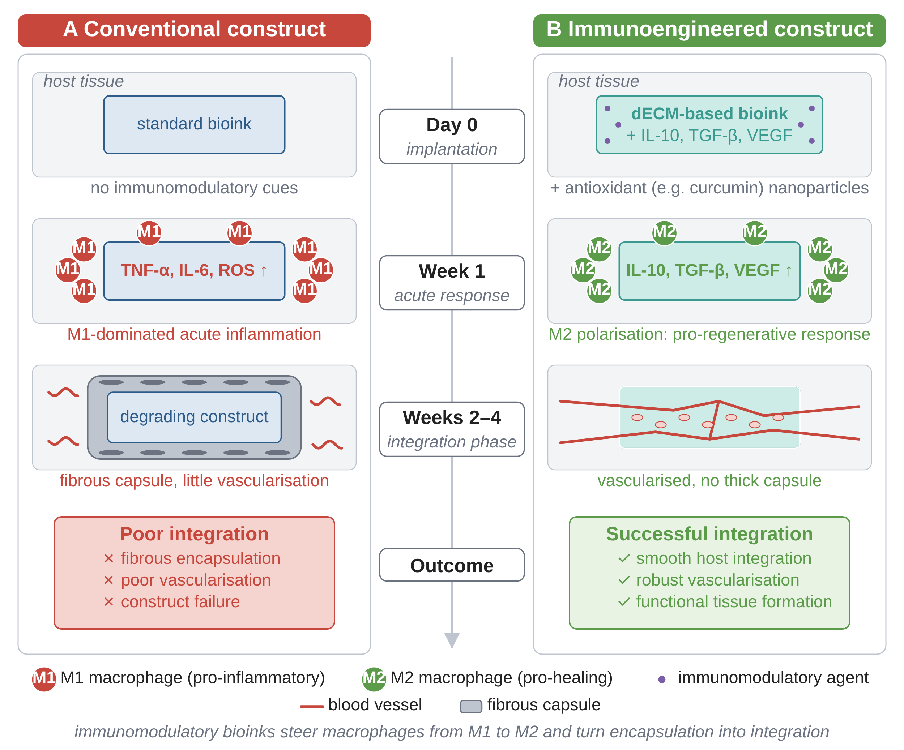
4.4.8.1 Immune–Biomaterial Interactions
When any biomaterial enters the body, it triggers an innate immune response. Within seconds, serum proteins adsorb onto the surface, followed by macrophage adhesion and activation.
Depending on surface chemistry, stiffness, and degradation products, macrophages can polarise towards:
M1 phenotype – pro-inflammatory, producing TNF-α, IL-6, and nitric oxide.
M2 phenotype – pro-healing, secreting IL-10 and growth factors that promote angiogenesis and tissue repair.
Bioinks that encourage M2 polarisation—for example, hydrogels based on hyaluronic acid, collagen, or decellularised extracellular matrix (dECM)—tend to integrate better in vivo.
Surface topography and stiffness also shape immune behaviour: softer matrices (Young’s modulus < 10 kPa) reduce macrophage activation, whereas rigid or rough materials amplify inflammation.
Figure 4.39 shows how these mechanisms decide the fate of an implanted construct over the first weeks. A construct printed from a standard bioink without immunomodulatory cues (Figure 4.39A) attracts mainly M1 macrophages in the first week, with high levels of TNF-α, IL-6 and reactive oxygen species; over the following weeks a fibrous capsule forms around the degrading construct, few vessels grow in, and the implant integrates poorly or fails. A construct printed from a dECM-based bioink enriched with factors such as IL-10, TGF-β and VEGF, or with antioxidant nanoparticles (Figure 4.39B), instead favours M2 polarisation, after which vessels and host cells grow into the construct without a thick capsule. The same implant can thus end in encapsulation or in integration, depending on the immune cues built into the bioink.
4.4.8.2 Bioprinting Immune Microenvironments
The immune system operates within spatially organised microenvironments, where physical proximity and molecular gradients determine whether inflammation resolves or escalates. By leveraging bioprinting’s spatial precision, researchers can reconstruct these complex immune landscapes in vitro, positioning multiple cell types within defined architectures. Such engineered immune niches enable direct observation of cell–cell communication, cytokine diffusion, and the balance between immune activation and tolerance.
Three representative examples illustrate how these systems advance our understanding of immunity in tissue repair, cancer, and host defence.
(a) Macrophage–Tissue Co-cultures
By printing macrophages alongside fibroblasts or endothelial cells, researchers can study how immune cells orchestrate tissue repair. Gradients of cytokines such as IL-4 or IFN-γ can be printed to direct spatial polarisation (M1 vs. M2). Such models help decipher inflammatory signalling at wound or implant sites.
(b) Tumour–Immune Models
Cancer immunotherapy requires realistic 3D tumour microenvironments containing immune infiltrates. Inkjet or extrusion bioprinting allows placement of tumour spheroids, T cells, and dendritic cells in controlled spatial arrangements. These models replicate immune evasion mechanisms and predict responses to checkpoint inhibitors (e.g. anti–PD-1 therapy).
(c) Lymphoid Organoids
Bioprinting can recreate secondary lymphoid structures such as lymph nodes or spleen-like tissues by arranging stromal cells, B cells, and T cells in compartmentalised architectures. These constructs provide platforms to study antigen presentation, vaccine responses, and chronic inflammation.
4.4.8.3 Immunomodulatory Bioinks
The next generation of bioinks is designed to actively communicate with immune cells. Table 4.11 gives examples of immunoengineering approaches in bioprinting.
Strategies include:
Incorporation of anti-inflammatory molecules: dexamethasone, IL-10, or transforming growth factor-β (TGF-β).
Functional nanoparticles: silver, cerium oxide, or curcumin carriers that scavenge reactive oxygen species (ROS).
ECM-derived peptides and glycans: mimic natural immune-regulatory motifs.
Responsive release systems: release immunomodulators upon inflammatory cues (pH or enzyme triggers).
| Application | Printing Strategy | Key Components | Immunological Mechanism | Outcome / Use Case |
|---|---|---|---|---|
| Macrophage polarisation | Extrusion / Inkjet | Alginate–collagen hydrogels + IL-4 gradients | M2 phenotype induction | Enhanced tissue repair, reduced inflammation |
| Tumour–immune models | Inkjet / DLP | Tumour spheroids + T cells + stromal ECM | Checkpoint blockade testing | Immunotherapy screening |
| Lymphoid organoids | Multi-material extrusion | Stromal + lymphocyte bioinks | Antigen presentation, adaptive response | Vaccine development, immunopathology |
| Anti-inflammatory scaffolds | Light-based printing | GelMA + curcumin nanoparticles | ROS scavenging | Reduced oxidative stress in implants |
| dECM-based grafts | Extrusion | Decellularised ECM hydrogels | Native immune modulation | Improved integration, vascularisation |
Integrating immunological cues such as cytokines, immune cells, or bioactive nanoparticles into bioinks allows control over inflammation, regeneration, and immune–tissue crosstalk, bridging the gap between bioprinting and immunotherapy.
4.4.8.4 Clinical and Research Outlook
Immunoengineered constructs will play a key role in the next generation of personalised medicine.
Possible trajectories include:
Implantable immune-modulatory tissues: bioprinted pancreatic islets with local immune shielding.
On-chip immune systems: for testing vaccines, adjuvants, or immunotoxic compounds.
Cancer immunotherapy screening platforms: humanised tumour models predicting patient-specific responses.
Challenges remain in balancing immune tolerance and defence, achieving long-term stability of immune cell populations, and scaling to clinically relevant volumes.
Integration with microfluidic perfusion systems (organ-on-chip) and 4D material dynamics will further enhance physiological realism.
4.4.8.5 Future Outlook
As immunoengineering converges with bioprinting, the next generation of constructs will act as immune-intelligent tissues—able not only to evade rejection but to actively guide immune behaviour.
Advances in single-cell transcriptomics and computational immunology will allow precise mapping of cell–matrix–cytokine interactions, feeding directly into AI-driven bioink design.
Bioprinted immune organoids and humanised tumour–immune models will enable in vitro testing of vaccines, checkpoint inhibitors, and autoimmune therapies under physiologically relevant conditions.
Ultimately, these developments will move the field towards adaptive, personalised implants that interact dynamically with a patient’s immune system—shifting from immune tolerance to immune symbiosis as a new paradigm in regenerative medicine.
4.5 Scaffold Design and Fabrication
Whereas bioprinting assembles cells and matrix directly, many tissue-engineering strategies still depend on a scaffold— a three-dimensional, porous framework that guides cell attachment, migration, and tissue development.
An ideal scaffold mimics both the structure and mechanical cues of the native extracellular matrix (ECM) while degrading harmlessly as new tissue forms (Figure 4.40).
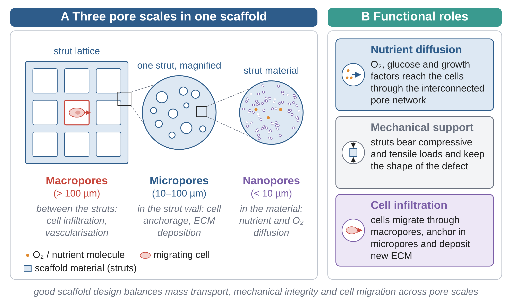
4.5.1 Scaffold-Guided Tissue Engineering
Early tissue-engineering concepts envisioned “cells + scaffold + signals” as the triad of regeneration. Cells seeded onto a biocompatible, biodegradable matrix attach, proliferate, and secrete new ECM, gradually replacing the scaffold.
Scaffold design therefore bridges materials science and cell biology, translating physical geometry into biochemical function.
Key functions:
Structural support – maintaining the defect shape and mechanical load.
Transport – facilitating oxygen, nutrient, and waste diffusion.
Biological instruction – providing adhesion motifs and stiffness cues guiding differentiation.
Modern scaffolds combine top-down control (defined geometry) with bottom-up biological self-organisation, converging conceptually with bioprinting.
4.5.2 Scaffold Design Parameters
The performance of a scaffold depends on how well its physical architecture and material properties recreate the native cellular microenvironment.
Cells sense and respond to cues such as pore geometry, stiffness, and degradation rate, which together regulate adhesion, migration, and differentiation.
Designing an effective scaffold therefore requires balancing mechanical strength, mass transport, and biological compatibility.
The following parameters—morphology, interconnectivity, mechanics, and degradation kinetics—define the structure–function relationship that governs successful tissue regeneration.
(a) Morphology and Porosity
Porosity governs permeability and surface area. Macropores (> 100 µm) permit vascular ingrowth; micropores (10–100 µm) aid cell anchorage; nanopores (< 10 µm) increase the surface area for protein adsorption and support the diffusion of nutrients and oxygen. Typical overall porosities range between 60 – 90 %.
Figure 4.40A shows how these three pore classes can coexist within a single scaffold. The macropores are the open spaces between the struts of the lattice, through which cells migrate and vessels grow; the micropores lie within the strut walls, where cells anchor and lay down matrix; and the nanopores lie in the strut material itself. Figure 4.40B links this hierarchy to the three main functions of a scaffold: the interconnected pore network lets oxygen, glucose and growth factors reach the cells, the struts carry compressive and tensile loads and keep the shape of the defect, and cells migrate through the larger pores and anchor in the smaller ones. Good scaffold design therefore balances mass transport, mechanical integrity and cell migration across all pore scales.
(b) Interconnectivity
Inter-pore channels must be continuous for nutrient transport. Isolated pores trap cells and cause necrosis; fully interconnected networks maintain viable tissue volumes.
| Tissue Type | Optimal Pore Size (µm) | Notes |
|---|---|---|
| Bone | 100–600 | Promotes osteogenesis, vascular invasion |
| Cartilage | 100–300 | Balances chondrocyte retention & nutrient flow |
| Skin | 50–150 | Supports fibroblast migration |
| Liver | 20–100 | Maximises hepatocyte–ECM contact |
| Neural | 10–60 | Guides neurite extension |
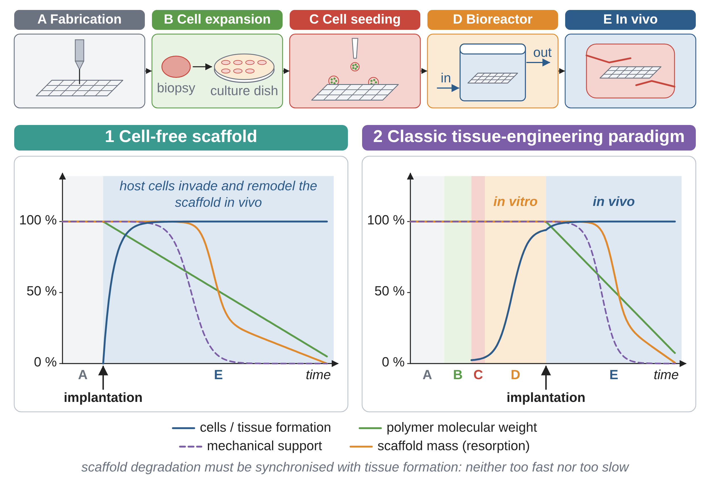
(c) Pore Size Optimisation
Different tissues require distinct pore dimensions to balance cell retention, nutrient diffusion, and mechanical stability. Optimising pore size is therefore essential to guide cell migration, vascular ingrowth, and matrix deposition. Table 4.12 summarises the typical pore size ranges reported for key tissue types.
(d) Mechanical Properties
Scaffold stiffness should match target tissue:
Soft tissues: 0.1–10 kPa (brain, liver).
Intermediate: 10²–10³ kPa (muscle, skin).
Hard tissues: > 1 GPa (bone).
Mismatch can trigger fibrosis or resorption.
(e) Degradation Kinetics
Controlled degradation maintains structural integrity until new ECM assumes load bearing. Degradation
rate ≈ tissue regeneration rate is ideal. Figure 4.41 shows an example of biodegradation timelines for a tissue engineering construct (TEC).
The upper strip of Figure 4.41 sets out the steps of scaffold-based tissue engineering: fabrication of the scaffold, harvesting and expansion of cells, seeding, conditioning in a bioreactor and, finally, implantation. The two graphs compare two routes along this path. A cell-free scaffold (graph 1) is implanted directly after fabrication, and host cells invade and remodel it in vivo. In the classic tissue-engineering paradigm (graph 2), cells are expanded, seeded and conditioned first, so that tissue formation starts in vitro before implantation. In both cases the same sequence follows implantation: the polymer molecular weight falls steadily, mechanical support is lost once it has dropped far enough, and the scaffold mass is resorbed only later, while the new tissue takes over. If degradation is too fast, the construct loses its integrity; if it is too slow, cell invasion and remodelling are hindered.
4.5.3 Classical Scaffold Fabrication Methods
Before additive manufacturing and bioprinting, porous scaffolds were produced using conventional bulk-processing techniques.
These methods rely on physical or chemical templating to generate pores rather than digital design, offering simplicity and scalability but limited control over fine structural features (Table 4.13, Figure 4.42). Understanding these foundational approaches helps appreciate how modern biofabrication evolved from traditional materials engineering.
Figure 4.42 illustrates the kinds of architecture these methods produce. Leaching of salt crystals or spherical porogens gives porous foams with cubic or interconnected spherical pores (Figure 4.42A–B), moulding produces conduits with many parallel channels for nerve repair (Figure 4.42C), and phase separation yields a bicontinuous polymer network (Figure 4.42D). Textile methods give braided yarn meshes, here with a collagen sponge filling the openings (Figure 4.42E), and directional freezing creates aligned, channel-like pores (Figure 4.42F). The last row shows fibrous scaffolds made by electrospinning, discussed in the next section: random nanofibre mats from polymer solutions, thicker fibres from polymer melts and a cell spreading along the fibres (Figure 4.42G–I). The variety of pore shapes is large, but in none of these methods is the position of individual pores or fibres designed in advance.
| Technique | Process Overview | Advantages | Limitations |
|---|---|---|---|
| Solvent casting / particle leaching | Polymer dissolved, mixed with salt crystals (porogens), cast, solvent evaporated, salt leached | Simple, tunable porosity | Residual solvent, limited interconnectivity |
| Gas foaming | CO₂ saturation and rapid depressurisation create pores | Solvent-free, uniform pores | Closed pores reduce interconnectivity |
| Freeze-drying (lyophilisation) | Polymer frozen, ice sublimated to leave pores | Oriented pores via freeze gradient | Brittle structure, slow |
| Textile methods (weaving, knitting, braiding) | Fibres assembled into 3D meshes | Strong, anisotropic mechanics | Limited microscale control |
| Ice templating | Controlled freezing to direct pore channels | Mimics anisotropic tissues | Fragile until crosslinked |
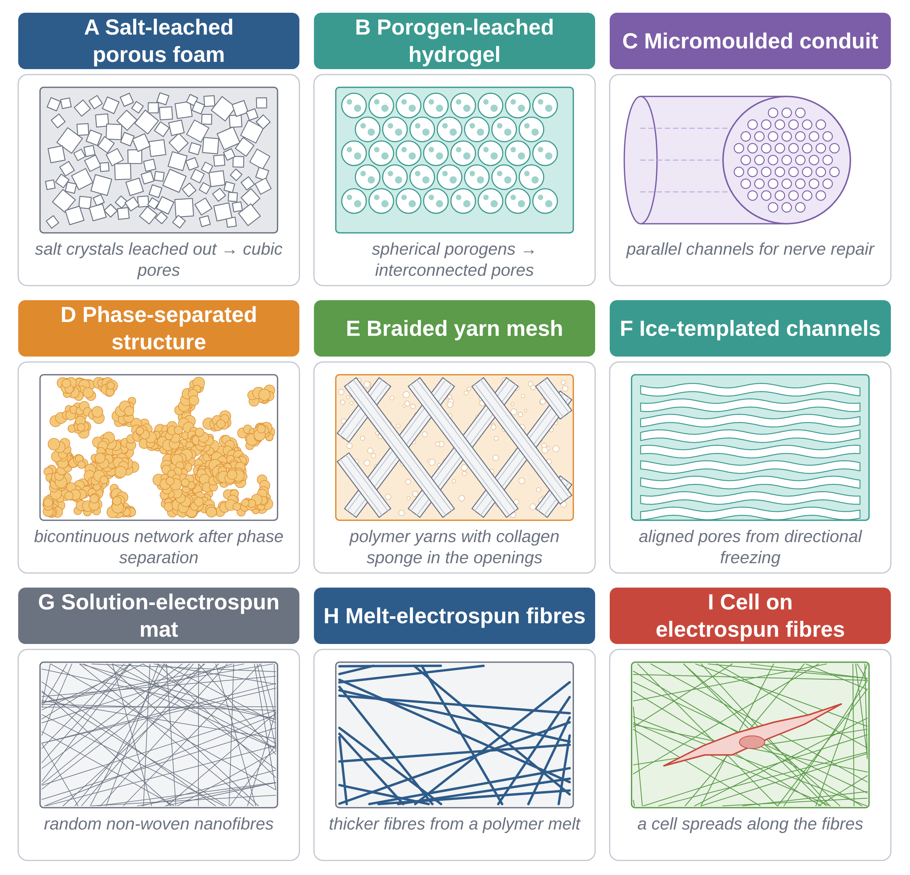
4.5.4 Electrospinning
Principle
Electrospinning uses an electric field to draw a charged polymer jet from a needle towards a collector, producing micro- to nano-fibres (Figure 4.43). As solvent evaporates, fibres accumulate into a non-woven mat resembling native ECM fibrils.
Parameters Controlling Fibre Morphology
Voltage (5–25 kV) and flow rate determine fibre diameter.
Collector distance and rotation speed control alignment.
Polymer concentration and solvent volatility influence bead formation.
Material Options
Natural: collagen, silk fibroin, chitosan, gelatin.
Synthetic: PLGA, PCL, PLA, polyurethane.
Blends combine mechanical strength with bioactivity.
Biological Relevance
Aligned fibres guide myoblasts or neurons; random mats support fibroblast proliferation. Fibre
diameters between 100 nm and 1 µm mimic ECM collagen fibrils. Surface
modification (RGD peptides, plasma treatment) improves cell attachment.
Melt electrowriting (MEW, also called melt electrospinning writing) refines the process—using molten polymer and precision stage movement—to deposit ordered micro-fibres for small-scale scaffolds with micrometre accuracy.
Figure 4.43 summarises these variants. In the basic set-up (Figure 4.43A), a syringe pump feeds the polymer solution to a spinneret at high voltage; the charged droplet deforms into a Taylor cone, from which a jet is ejected that first travels straight and then whips and bends, stretching thinner while the solvent evaporates, before landing as a non-woven mat on the grounded collector. The collector determines fibre arrangement (Figure 4.43B): a flat plate gives a random mat, whereas a rotating drum or two parallel bars separated by a gap give aligned fibres, and cells can even be incorporated into the spun jet. A coaxial spinneret (Figure 4.43C) produces core–shell fibres, or hollow fibres once the core is removed. In melt electrowriting (Figure 4.43D) the short nozzle–collector distance keeps the jet straight and stable, so that a computer-controlled moving collector can lay the fibres into an ordered lattice.
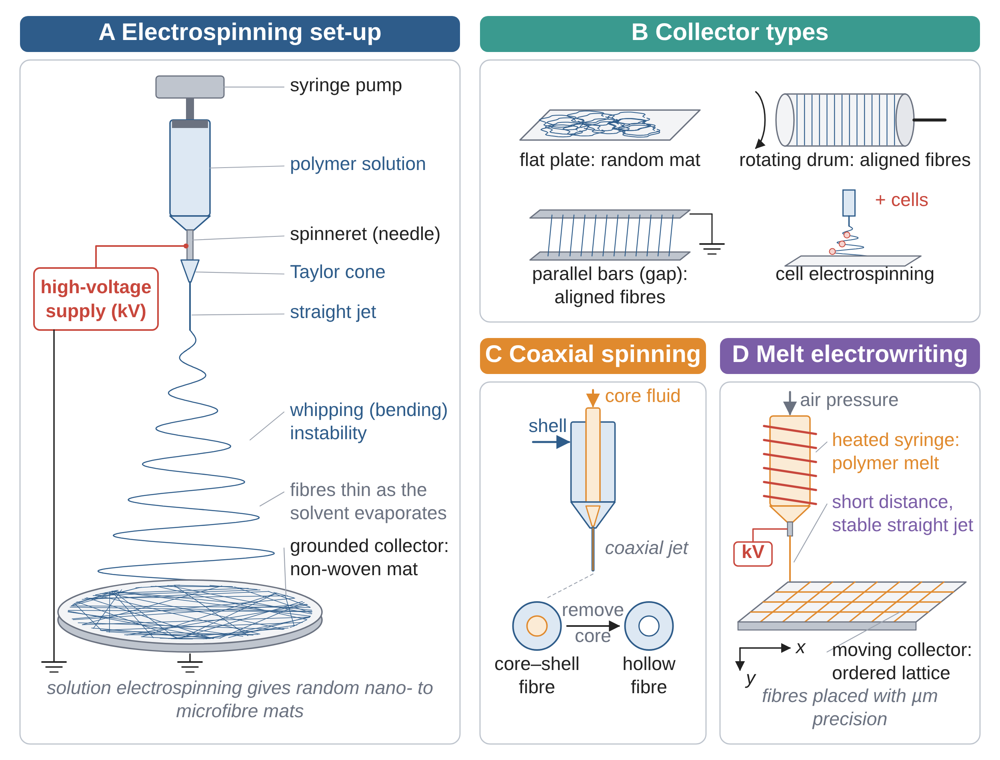
4.5.5 Additive Manufacturing and Hybrid Approaches
Integration with 3D Printing
Additive manufacturing merges design freedom with reproducibility. Extrusion printing of thermoplastics (PCL, PLA) or hydrogels (GelMA, alginate) enables defined architectures and graded porosity (Figure 4.44).
By tuning filament spacing and lay-down angle, pore size and mechanical anisotropy can be programmed digitally.
Figure 4.44 gives examples of scaffolds made in this way with different additive techniques. Extrusion of thermoplastic struts produces the familiar 0/90° lattice (Figure 4.44A), and a printed carbohydrate-glass lattice can serve as a sacrificial template that is cast in a cell-laden gel and dissolved to leave perfusable channels (Figure 4.44B). Light-based methods yield a smooth, fully interconnected gyroid-type network by SLA, a high-resolution lattice cube by DLP and a highly porous cellular structure by two-photon polymerisation (Figure 4.44C–E). Selective laser sintering of PCL gives a scaffold with orthogonal pores (Figure 4.44F), and melt electrowriting produces box-structured meshes and tubes from fine fibres (Figure 4.44G–H). In contrast to the classical methods of Figure 4.42, every pore in these scaffolds is defined by the digital design.
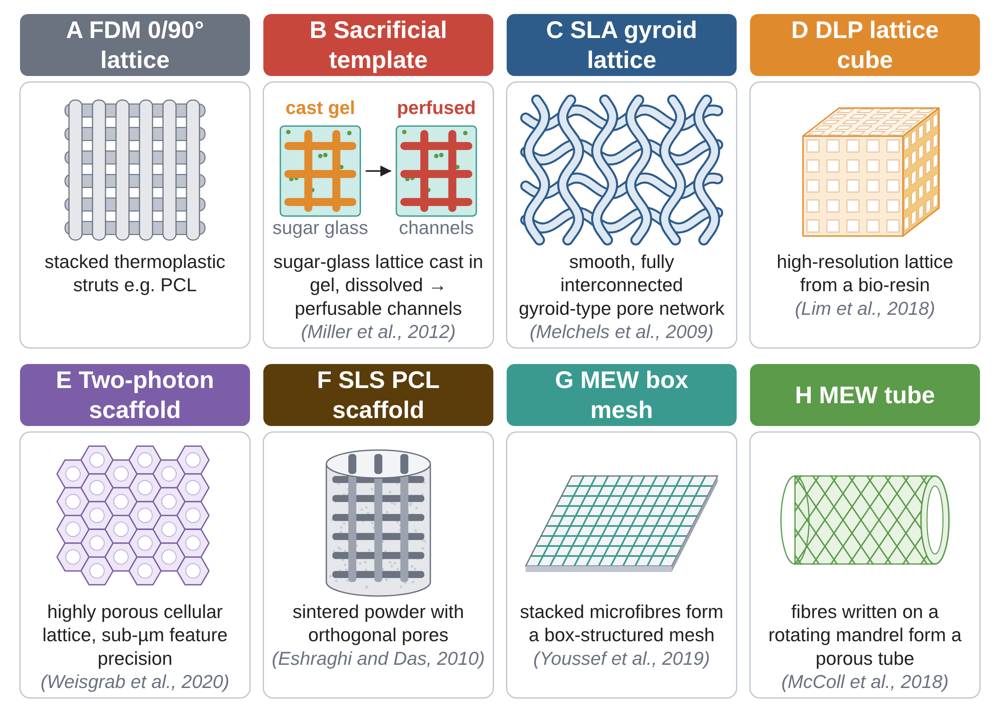
Hybrid Scaffold Strategies
Combining techniques allows a single scaffold to have structure at more than one length scale (Figure 4.45). A melt-electrowritten grid of microfibres can be joined with an electrospun nanofibre mat, so that ordered, open pores are combined with an ECM-like fibrous surface (Figure 4.45A). Cells can be electrosprayed onto a rotating mandrel while polymer fibres are spun from solution, which integrates them directly into an elastomeric fibre sheet (Figure 4.45B). Layers of nanofibres and melt-deposited microfibre struts can be alternated (Figure 4.45C), melt and solution electrospinning can deposit micro- and nanofibres simultaneously onto one rotating drum (Figure 4.45D), and stacked nanofibre layers and electrowritten grids give a hierarchical bone scaffold that improved cell spreading and osteogenic activity compared with the grids alone (Figure 4.45E). The main hybrid combinations are summarised below.
Electrospinning + Bioprinting: combines nano-fibre ECM mimicry with macro-scale shape control (Figure 4.45).
Melt electrowriting inside hydrogel matrices: forms reinforced composite scaffolds.
Bioceramic–polymer hybrids: integrate osteoconductive ceramics (β-TCP, hydroxyapatite) with biodegradable polymers for bone repair.
Cell-laden composite printing: deposits living hydrogels within printed thermoplastic frameworks, uniting 3D printing and bioprinting.
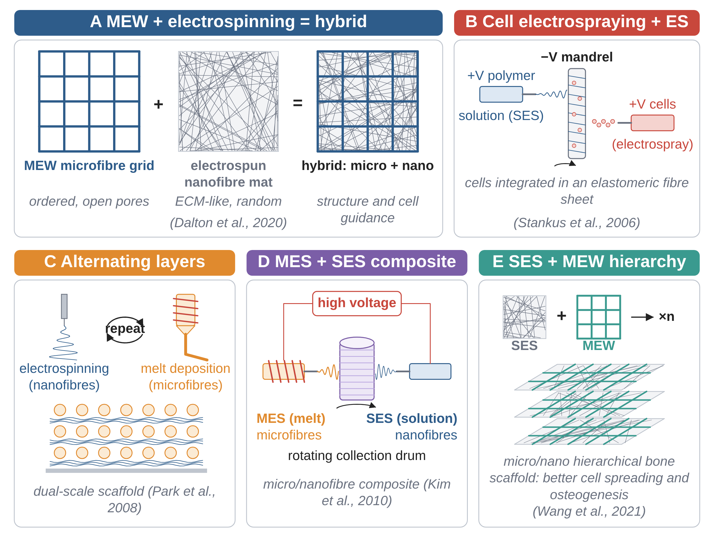
4.6 Summary
Manufacturing has moved from removing material to adding it. Subtractive methods such as CNC milling and micromilling, and moulding or extrusion, remain useful for prototypes and moulds, but additive manufacturing builds parts layer by layer from a digital chain — CAD, STL, slicing and G-code — with little waste and great design freedom. SLA, DLP, SLS, FDM, CAL and jetting differ in energy source, material, resolution and speed, and they already serve medicine as anatomical models, patient-specific implants, dental devices and personalised medicines.
Bioprinting adds living cells to this workflow. A bioink combines cells, a biomaterial matrix and a crosslinking chemistry, and its rheology — viscosity, shear-thinning and yield stress — decides both printability and cell survival. Inkjet, extrusion, laser-assisted and light-based bioprinting each have their own process window, trading resolution, speed and cell density against shear stress and light exposure. Vascularisation, control of the immune response and 4D designs that change shape or function over time address the main obstacles to thick, functional tissues.
Scaffolds remain the backbone of many constructs: porosity, pore size, stiffness and degradation rate must match the target tissue, and classical methods, electrospinning, melt electrowriting and additive or hybrid manufacturing offer different routes to reach them.
Looking ahead. Bioprinting defines the geometry and composition of living constructs, but geometry alone does not make a tissue. Immediately after printing, most constructs remain immature — their cells are distributed but not yet organised, and their matrix is only beginning to form. To become functional, these printed tissues require a controlled physiological environment that provides nutrient exchange, mechanical stimulation, and dynamic biochemical cues.
This is the role of the bioreactor. Bioreactors bridge the gap between fabrication and function: they supply mass transport, oxygenation, and physical stimuli such as shear stress, compression, or strain that guide cell differentiation and matrix deposition. Just as a bioprinter defines spatial architecture, a bioreactor defines temporal maturation — the process by which the construct evolves towards its intended biological identity.
The next chapter therefore examines how bioreactor design, sensor integration, and mechanical–chemical feedback control transform freshly printed or scaffold-based constructs into viable, physiologically relevant tissues. Together, bioprinting and bioreactors complete the workflow of biofabrication, uniting digital design, living materials, and dynamic culture systems in a single continuum from blueprint to living function.
4.7 Exercises
Table 4.14 gives an overview of the exercises in this chapter: the conceptual, quantitative and computational exercises, what each block focuses on, and the section in which the background for each exercise is found.
| Block | Focus | Exercises (section) |
|---|---|---|
| Conceptual: Manufacturing and 3D printing (Exercises 1–3) | From subtractive to additive thinking; printing methods and implants. | 1. Additive vs. subtractive thinking (4.1.4) 2. Support structures in printing (4.2.2–4.2.3) 3. Lattice design for bone integration (4.3.3) |
| Conceptual: Bioprinting and scaffolds (Exercises 4–8) | Bioinks, printing parameters, 4D printing, immune response and porosity. | 4. Rheology and biology of bioinks (4.4.1) 5. Printing parameters and cell survival (4.4.2–4.4.3) 6. 4D bioprinting and thermoresponsive bilayers (4.4.6) 7. Immunomodulation and hydrogel design (4.4.8) 8. Porosity vs. mechanical strength (4.5.2) |
| Discussion / Ethics (Exercises 9–13) | Drug testing, transplantation, sustainability, access and 4D constructs. | 9. Bioprinted tissues for drug testing (4.4.5) 10. Bioprinted organs for transplantation (4.4.7) 11. Sustainable bioprinting (whole chapter) 12. Personalised printed organs and society (4.3.1) 13. 4D constructs as living machines (4.4.6) |
| Quantitative / Applied (Exercises Q1–Q8) | Printing, transport and mechanics by hand calculation. | Q1. Photocuring dose (4.4.4) Q2. Layer-by-layer build time (4.1.3) Q3. SLA exposure budget (4.2.1) Q4. Mass of a printed implant (4.3.4) Q5. Oxygen diffusion limit (4.4.7) Q6. Effective diffusivity in hydrogels (4.5.2) Q7. Extrusion flow and shear stress (4.4.3) Q8. Composite scaffold modulus (4.5.5) |
| Computational, Google Colab: interactive (Exercise 1) | Widget-driven calculators; no programming required. | 1. Bioprinting calculators: light dose and build time, mass transport and construct mechanics (4.4, 4.5) |
| Computational, Google Colab: Python (Exercises 1–6) | Notebooks in which the Python code is read and modified. | 1. Bioprinting method selection (4.4.1–4.4.4) 2. Temperature effects in bioprinting (4.4.1, 4.4.3) 3. Shear stress in extrusion bioprinting (4.4.3) 4. Inkjet droplet dynamics (4.4.2) 5. Photopolymerisation kinetics (4.4.4) 6. Scaffold architecture and porosity (4.5.2) |
4.7.1 Conceptual Exercises
1. Additive vs Subtractive Thinking
Explain why additive manufacturing is considered more biologically intuitive than subtractive manufacturing. How does this conceptual shift—from removing material to assembling matter—mirror biological growth and prepare the ground for 3D bioprinting?
2. Support Structures in Printing
Why can Selective Laser Sintering (SLS) print overhangs without supports, whereas Fused Deposition Modelling (FDM) generally cannot? Relate your answer to the physical state of materials during printing and the presence (or absence) of unsintered powder support.
3. Lattice Design for Bone Integration
Why are lattice or trabecular structures in metal implants beneficial for osseointegration and stress transfer? How does their mechanical behaviour differ from a solid metal block?
4. Rheology and Biology of Bioinks
Explain why a bioink must simultaneously satisfy rheological (printability) and biological (cell viability) requirements. Predict how increasing polymer concentration affects viscosity, shear stress, filament stability, and nutrient diffusion.
5. Printing Parameters and Cell Survival
Compare how pressure, viscosity, and nozzle diameter control droplet or filament formation in inkjet and extrusion bioprinting. Discuss the trade-off between print resolution and cell survival.
6. 4D Bioprinting and Thermoresponsive Bilayers
Design a bilayer construct that bends upward when temperature rises from 25 °C → 37 °C. Which material properties (e.g., thermal expansion, swelling ratio, cross-link density) must differ between layers? Mention one suitable thermoresponsive hydrogel from the text.
7. Immunomodulation and Hydrogel Design
Given two hydrogels — A (stiff = 50 kPa, neutral surface) and B (soft = 5 kPa, HA-rich) — predict macrophage polarisation trends (M1 vs M2) and discuss implications for inflammation and wound healing.
8. Porosity vs Mechanical Strength
A freeze-dried collagen scaffold has 85 % porosity and compressive modulus = 0.5 MPa. If porosity increases to 92%, estimate the new modulus assuming \(E \propto (1\text{–}\phi)^{2}\). Discuss how this change affects use in load-bearing tissues.
Discussion / Ethics
9. Evaluate: Should 3D-bioprinted tissues be used for pre-clinical drug testing before approval in humans?
- Discuss the ethical, scientific, and regulatory implications.
- Consider accuracy compared to animal models, standardisation challenges, and the potential reduction of animal experimentation.
10. Debate: To what extent could bioprinted organoids or mini-organs replace human donor tissues in transplantation?
Examine technical hurdles (vascularisation, immune compatibility, functional maturity) and ethical questions surrounding the concept of engineered human parts.
11. Reflect: Bioprinting relies heavily on photopolymers, synthetic hydrogels, and disposable plastics.
- How can the sustainability of this technology be improved?
- Propose one strategy—material recycling, renewable biopolymers, or energy-efficient printing — to reduce environmental impact without compromising sterility or performance.
12. Consider: What are the societal consequences of printing personalised tissues or organs on demand?
- Who should control access to bioprinting data and genetic blueprints?
- Discuss intellectual-property ownership, patient consent, and the risk of inequitable access to life-extending printed organs.
13. Explore: 4D bioprinting introduces dynamic, responsive constructs that change shape or stiffness over time.
Could such “living machines” blur the boundary between biological tissue and synthetic device? Reflect
on potential regulatory gaps and ethical questions concerning responsibility and failure in adaptive biomedical implants.
4.7.2 Quantitative / Applied Exercises
Exercise Q1: Photocuring dose. A GelMA bioink containing 0.1 wt % LAP is cured with 405 nm light at an intensity of 10 mW cm⁻². Gelation of one layer requires a radiant exposure (dose) of 50 mJ cm⁻². (a) Calculate the exposure time per layer, using \(E = I\, t\). (b) The light intensity is increased five-fold. What is the new exposure time? (c) Does the shorter exposure reduce the light dose received by the cells? Discuss the biological consequences of the higher intensity (radical generation, phototoxicity and heating; Section 4.4.4.5 and Table 4.7).
Exercise Q2: Layer-by-layer build time. A 3D printer deposits material in 0.1 mm layers to build a 12 mm high scaffold; each layer takes 30 s. (a) Use Equation 4.1 (Box 4.2) to calculate the number of layers and the total print time. (b) How do both values change when the layer thickness is halved to improve the vertical resolution? (c) Which contributions to the real print time are ignored by Equation 4.1?
Exercise Q3: SLA exposure budget. An SLA printer builds a 30 mm high structure in 0.05 mm layers with an exposure time of 20 s per layer. (a) Calculate the number of layers and the total exposure time in hours. (b) With 0.10 mm layers, each layer needs a larger cure depth and therefore 25 s of exposure. Calculate the new total exposure time. (c) Discuss how layer thickness affects vertical resolution, surface finish and speed (Table 4.3).
Exercise Q4: Mass of a printed implant. A surgeon prints a polycaprolactone (PCL) implant (density 1.1 g cm⁻³) with an external volume of 2 cm³ to fill a bone defect. The infill density is 40 %. (a) Calculate the mass of the implant. (b) What is its porosity? (c) Why is a porous lattice preferred over a solid implant for bone repair (Section 4.3.3 and 4.3.4 and Table 4.12)?
Exercise Q5: Oxygen diffusion limit. A cell-laden hydrogel slab receives oxygen from its top surface only; its bottom rests on an impermeable support. The culture medium contains about 0.2 mol m⁻³ (200 µM) O₂, the diffusion coefficient of O₂ in this soft, water-rich gel is \(D\) = 2 × 10⁻⁹ m² s⁻¹, and each cell consumes 2 × 10⁻¹⁷ mol O₂ s⁻¹. For a constant (zero-order) volumetric consumption rate \(q\) (mol m⁻³ s⁻¹), the O₂ concentration falls to zero at a depth \(L = \sqrt{2DC_{0}/q}\). (a) Calculate \(q\) and \(L\) for a cell density of 10⁸ cells mL⁻¹ (1 mL = 10⁻⁶ m³). (b) Repeat the calculation for 10⁹ cells mL⁻¹, a density typical of native tissue, and compare the result with the distance of 100–200 µm between cells and the nearest capillary in vivo (Section 4.4.7). (c) What does this imply for printing thick, cell-dense constructs?
Exercise Q6: Effective diffusivity in hydrogels. The effective diffusivity of a solute in a porous gel can be estimated as \(D_{e} = D_{0}\,\varepsilon/\tau_{t}\), where \(D_{0}\) is the diffusivity in free solution, \(\varepsilon\) the porosity and \(\tau_{t}\) the tortuosity. (a) Estimate \(D_{e}\) for oxygen (\(D_{0}\) = 3 × 10⁻⁹ m² s⁻¹) in a hydrogel with \(\varepsilon\) = 0.8 and \(\tau_{t}\) = 2. (b) How does doubling the tortuosity affect \(D_{e}\)? (c) The gel of (a) is denser than the soft gel of Exercise Q5. Recalculate the maximum thickness \(L\) of Exercise Q5(a) with \(D = D_{e}\) from (a), and explain why \(L\) changes less than \(D_{e}\).
Exercise Q7: Extrusion flow and shear stress. A nozzle with a radius of 150 µm and a length of 5 mm extrudes a 1 % alginate bioink (η = 0.1 Pa·s, assumed Newtonian) under a pressure of 150 kPa. (a) Calculate the volumetric flow rate \(Q\) with the Hagen–Poiseuille equation (Equation 4.3), in µL s⁻¹. (b) Calculate the wall shear stress \(\tau_{w} = \Delta P\, r/(2L) = 4\eta Q/\left( \pi r^{3} \right)\) and the mean residence time of a cell in the nozzle, \(t = \pi r^{2}L/Q\). (c) Is \(\tau_{w}\) below the cell-viability limit of about 150–200 Pa (Section 4.4.3)? Which pressure would keep \(\tau_{w}\) at 200 Pa, the upper end of this range, and what flow rate would then result? (d) Which other design changes (nozzle shape, ink rheology) would lower the shear stress?
Exercise Q8: Composite scaffold modulus. A hybrid scaffold contains 60 vol % PCL (\(E\) = 300 MPa) and 40 vol % hydrogel (\(E\) = 0.5 MPa). (a) Calculate the upper (Voigt, iso-strain) bound \(E_{V} = \sum_{i}^{}\phi_{i}E_{i}\). (b) Calculate the lower (Reuss, iso-stress) bound \(1/E_{R} = \sum_{i}^{}\phi_{i}/E_{i}\). (c) Which bound describes loading parallel to continuous PCL strands, and which loading perpendicular to alternating PCL and hydrogel layers? Explain how the printing path can make a scaffold mechanically anisotropic.
4.7.3 Computational Exercises — Interactive (Google Colab)
The exercises in this section are supported by an interactive Python notebook running in Google Colab, a free, browser-based environment from Google in which Python code is executed on cloud servers. Calculations can therefore be performed directly in the browser, without local software installation; only a web browser and a (free) Google account are needed.
The notebook contains nine widget-driven calculators that turn the quantitative exercises Q1–Q8 of Section 4.7.2 into live tools: photocuring dose, build time and SLA exposure budget, implant mass, oxygen-limited viable thickness, effective diffusivity, extrusion flow and wall shear stress, composite modulus, and, as a bonus, the bending of a 4D-printed bilayer. Sliders set the material, geometric and process parameters, and each calculator immediately recalculates its result and redraws a graph in which a red dot marks the current setting, so that an answer obtained by hand can be checked and its sensitivity to every input explored. No programming is required. Section 4.7.4, in contrast, contains eight notebooks in which the Python code itself is read and modified. To start, open the notebook via the QR code or link, run the Setup cell first (or select Runtime → Run all) to activate the widgets, and then move the sliders; if the widgets do not appear, run the cells again with Runtime → Run all.
4.7.3.1 Exercise 1 — Bioprinting Calculators: Light Dose and Build Time, Mass Transport and Construct Mechanics
Problem Statement
Most design decisions in (bio)printing rest on a handful of short equations: how long a layer must be exposed, how long a print takes, how much an implant weighs, how deep oxygen penetrates, how fast molecules diffuse through a porous gel, how much shear a nozzle generates, how stiff a composite is and how far a bilayer bends. The quantitative exercises Q1–Q8 of Section 4.7.2 ask for these numbers by hand. This notebook turns the same equations into nine slider-driven calculators, so that the answer to each exercise can be checked immediately and, more importantly, the sensitivity of the result to every input can be explored. The purpose is to see which parameters dominate each outcome, and where a small change in a process setting has a large biological consequence.
The engineering challenge is to understand the trade-offs between:
light dose, intensity and layer thickness and the resulting exposure time, resolution and build time (Section 4.2.1 and 4.4.4.5, Box 4.2, Equation 4.1, Table 4.3 and Table 4.7),
construct thickness, cell density and scaffold microstructure and the supply of oxygen and nutrients (Section 4.4.7 and 4.5.2, Figure 4.38, Exercises Q5 and Q6 in Section 4.7.2),
and nozzle geometry, extrusion pressure, material combination and stimulus-responsive design and the resulting shear stress, stiffness and shape change (Section 4.4.3, 4.4.6 and 4.5.5, Equation 4.3, Figure 4.37, Table 4.9).
The notebook starts with a Setup cell (helpers, units, widgets) and contains nine calculators, each with a short description, a LaTeX equation, sliders and a live graph:
Photocuring Dose → Exposure Time — dose 1–200 mJ cm⁻² and intensity 0.5–100 mW cm⁻², with the exposure time at five-fold intensity (Exercise Q1),
Layer-by-Layer Build Time — height 1–200 mm, layer thickness 0.01–1.0 mm and time per layer 1–240 s, giving the number of layers and the total time in minutes (Exercise Q2),
SLA Exposure Budget (resolution vs speed) — height, layer thickness 0.01–0.50 mm and exposure per layer, giving the number of layers and the total exposure in hours (Exercise Q3),
Mass of Printed Implant (Infill) — volume 0.1–200 cm³, density 0.2–3.0 g cm⁻³ and infill fraction 0.05–1.0 (Exercise Q4),
Oxygen Diffusion & Viable Thickness (1D steady-state) — normalised surface concentration \(c_{0}\), minimum concentration \(c_{\min}\), diffusivity \(D\) (10⁻¹⁰–10⁻⁷ m² s⁻¹) and first-order consumption rate \(k\) (10⁻⁴–1 s⁻¹), giving the maximum viable half-thickness and full thickness (Exercise Q5),
Effective Diffusivity in Porous Hydrogels — free diffusivity \(D_{0}\), porosity 0.10–0.99 and tortuosity 1–5, with the effect of doubling the tortuosity (Exercise Q6),
Extrusion Flow & Wall Shear Stress (Hagen–Poiseuille) — nozzle radius 25–500 µm, length 1–50 mm, viscosity 0.01–10 Pa·s and pressure 5–500 kPa, compared with a limit of about 200 Pa (Exercise Q7),
Composite Modulus (Voigt/Reuss bounds) — PCL volume fraction 0–1 and the moduli of PCL and hydrogel (Exercise Q8),
(Bonus) 4D Thermoresponsive Bilayer Bending — layer moduli 10²–10⁷ Pa, thicknesses 0.1–2.0 mm, expansion mismatch Δα 10⁻⁵–10⁻¹ °C⁻¹ and temperature change −20 to 40 °C, giving curvature and radius of curvature (Section 4.4.6, no quantitative exercise).
The graphs are redrawn with every slider move and show how each result depends on its main parameter: exposure time versus intensity (log–log, with the five-fold intensity point), build time and total SLA exposure versus layer thickness, implant mass versus infill, the O₂ concentration profile with depth together with the minimum concentration, effective diffusivity versus tortuosity for three porosities, wall shear stress versus extrusion pressure with the 200 Pa viability limit, the Voigt and Reuss bounds versus PCL volume fraction, and the side view of the bent bilayer.
Learning Outcomes
After completing this exercise, you should be able to:
Calculate exposure times and build times and explain the resolution–speed trade-off of layer-wise fabrication.
Estimate the mass of a printed implant from its volume, material density and infill.
Calculate the maximum viable thickness of a cell-laden construct from a diffusion–reaction balance, and explain why zero-order and first-order consumption give different answers.
Estimate effective diffusivity from porosity and tortuosity.
Calculate the flow rate and wall shear stress in an extrusion nozzle and identify which parameters set the shear stress.
Bound the modulus of a two-phase composite and predict the curvature of a stimulus-responsive bilayer.
Theoretical Background
1) Photocuring dose. The radiant exposure \(E\) (mJ cm⁻²) delivered by an intensity \(I\) (mW cm⁻²) in a time \(t\) is
\[E = I\, t\quad \Rightarrow \quad t = \frac{E}{I}\]
For 50 mJ cm⁻² at 10 mW cm⁻², \(t\) = 5.00 s; at five-fold intensity, 1.00 s.
2) Layer-by-layer build time. With height \(H\), layer thickness \(\Delta z\) and time per layer \(t_{\mathcal{l}}\) (Equation 4.1),
\[T = \left\lceil \frac{H}{\Delta z} \right\rceil t_{\mathcal{l}}\]
For 12 mm, 0.1 mm and 30 s: 120 layers and 60.0 min.
3) SLA exposure budget. In the same way, the cumulative exposure is \(T_{\exp} = \lceil H/\Delta z\rceil\, t_{e}\). For 30 mm, 0.05 mm and 20 s: 600 layers and 3.33 h.
4) Implant mass. With external volume \(V\), material density \(\rho\) and infill fraction \(f\),
\[m = V\rho f\]
For 2 cm³ of PCL (1.1 g cm⁻³) at 40 % infill, \(m\) = 0.880 g.
5) Oxygen diffusion and viable thickness. For a slab supplied at \(x = 0\) with a no-flux condition at \(x = L\) (the mid-plane of a slab fed from both faces) and first-order consumption,
\[D\frac{d^{2}c}{dx^{2}} - kc = 0,\quad\quad c(x) = c_{0}\frac{\cosh\left\lbrack (L - x)/\lambda \right\rbrack}{\cosh(L/\lambda)},\quad\quad\lambda = \sqrt{D/k}\]
The notebook solves the equation by finite differences and finds the largest \(L\) with \(c(L) \geq c_{\min}\) by bisection, which equals \(L = \lambda\,\text{arccosh}\left( c_{0}/c_{\min} \right)\). For \(D\) = 3 × 10⁻⁹ m² s⁻¹, \(k\) = 10⁻² s⁻¹ and \(c_{\min}/c_{0}\) = 0.1: \(\lambda\) = 548 µm, \(L\) = 1640 µm and a full thickness of 3280 µm. Exercise Q5 uses zero-order consumption \(q\) instead, for which \(c\) reaches zero at
\[L_{\max} = \sqrt{\frac{2DC_{0}}{q}}\]
With \(q\) = 2 × 10⁻¹⁷ mol s⁻¹ cell⁻¹ × 10⁸ cells mL⁻¹ = 2 × 10⁻³ mol m⁻³ s⁻¹, \(C_{0}\) = 0.2 mol m⁻³ and \(D\) = 2 × 10⁻⁹ m² s⁻¹, \(L_{\max}\) = 632 µm (200 µm at 10⁹ cells mL⁻¹). The equivalent first-order rate \(k = q/C_{0}\) = 10⁻² s⁻¹ is exactly the default of the calculator.
6) Effective diffusivity. In a porous hydrogel with porosity \(\varepsilon\) and tortuosity \(\tau_{t}\),
\[D_{e} = D_{0}\frac{\varepsilon}{\tau_{t}}\]
For \(D_{0}\) = 3 × 10⁻⁹ m² s⁻¹, \(\varepsilon\) = 0.8 and \(\tau_{t}\) = 2: \(D_{e}\) = 1.20 × 10⁻⁹ m² s⁻¹, and 6.00 × 10⁻¹⁰ m² s⁻¹ when \(\tau_{t}\) doubles.
7) Extrusion flow and wall shear stress. For laminar Newtonian flow through a nozzle of radius \(r\) and length \(L\) under pressure \(P\) (Hagen–Poiseuille, Equation 4.3),
\[Q = \frac{\pi r^{4}P}{8\eta L},\quad\quad\tau_{w} = \frac{4\eta Q}{\pi r^{3}} = \frac{P\, r}{2L}\]
For \(r\) = 150 µm, \(L\) = 5 mm, \(\eta\) = 0.1 Pa·s and \(P\) = 150 kPa: \(Q\) = 59.6 µL s⁻¹ (3.6 mL min⁻¹) and \(\tau_{w}\) = 2250 Pa, more than ten times the 200 Pa guideline. Note that \(\tau_{w}\) does not depend on viscosity at a given pressure.
8) Composite modulus. For volume fractions \(v_{i}\) and moduli \(E_{i}\), the iso-strain (Voigt) and iso-stress (Reuss) bounds are
\[E_{V} = \sum v_{i}E_{i},\quad\quad E_{R} = \left( \sum\frac{v_{i}}{E_{i}} \right)^{- 1}\]
For 60 vol % PCL (300 MPa) and 40 vol % hydrogel (0.5 MPa): \(E_{V}\) = 180.20 MPa and \(E_{R}\) = 1.2469 MPa.
9) Bilayer bending. For a mismatch strain \(\epsilon = \Delta\alpha\,\Delta T\), layer thicknesses \(t_{1}\), \(t_{2}\) and moduli \(E_{1}\), \(E_{2}\), Timoshenko’s bilayer solution gives, with \(m = t_{2}/t_{1}\) and \(n = E_{2}/E_{1}\),
\[\kappa = \frac{6\,\epsilon\, n\, m\,(1 + m)}{t_{1}\left( 1 + 4nm + 6nm^{2} + 4nm^{3} + n^{2}m^{4} \right)},\quad\quad R = \frac{1}{\kappa}\]
For \(E_{1}\) = 10 kPa, \(E_{2}\) = 50 kPa, \(t_{1} = t_{2}\) = 0.5 mm, Δα = 2 × 10⁻³ °C⁻¹ and ΔT = 12 °C: \(\epsilon\) = 0.024, \(\kappa\) = 30.0 m⁻¹ and \(R\) = 33 mm. For equal layers (\(m = n = 1\)) the expression reduces to \(\kappa = 3\epsilon/(2h)\) with \(h = t_{1} + t_{2}\).
Model Assumptions
These calculators are intentionally simplified to emphasise core mechanisms:
Exposure and build times ignore recoating, platform movement, oxygen inhibition and light attenuation with depth (Beer–Lambert).
The implant mass assumes that infill scales the material volume linearly; solid walls and shells are not modelled separately.
Oxygen consumption is first-order in concentration and uniform in space, and \(D\) is constant; Michaelis–Menten kinetics, cell proliferation and perfusion are ignored.
The extrusion calculator treats the bioink as Newtonian; shear-thinning and yield stress (Exercise 7, Section 4.7.4.7) change \(Q\) but not the force balance \(\tau_{w} = P\, r/(2L)\).
The Voigt and Reuss expressions are bounds, not predictions, and the bilayer model assumes linear elasticity, small strains and perfect bonding between the layers.
Despite these simplifications, the calculators reproduce the order of magnitude of each quantity and show which parameter dominates: layer thickness for build time, consumption rate for viable thickness, nozzle geometry and pressure for shear stress, and stiffness and thickness ratios for bending.
Digital Exercise (Google Colab)
This exercise is performed in an interactive Python notebook.
No local installation is required; the simulation runs entirely in the cloud. Scan the QR code or click the link below.
Launch Bioprinting Calculators in Google Colab
Tasks and Questions
For each calculator, adjust the sliders, observe the output and the graph and answer the corresponding questions.
Calculators 1–3 — Light Dose and Build Time
Reproduce Exercise Q1: 50 mJ cm⁻² at 10 mW cm⁻². At what intensity does the exposure drop below 1 s? Using Section 4.4.4.5 and Table 4.7, discuss why the shorter exposure at 50 mW cm⁻² is not automatically better for the encapsulated cells.
Reproduce Exercise Q2 (120 layers, 60 min). Halve the layer thickness to 0.05 mm: how do the number of layers and the build time change? Compare with the resolution–speed trade-off of Table 4.3 and Box 4.2.
Reproduce Exercise Q3 (600 layers, 3.33 h). What layer thickness keeps the total exposure below 1 h at 20 s per layer, and what vertical resolution do you sacrifice? Relate your answer to SLA and DLP in Section 4.2.1 and 4.2.4.
Calculators 4–6 — Implant Mass and Mass Transport
Reproduce Exercise Q4 (0.880 g). Compare with a fully dense implant (2.2 g) and discuss how infill reduces mass and stiffness at the same time (stress shielding, Section 4.3.3, and Conceptual Exercise 3 in Section 4.7.1).
Set \(D\) = 2 × 10⁻⁹ m² s⁻¹ and \(k\) = 10⁻² s⁻¹ (10⁸ cells mL⁻¹ in Exercise Q5). The calculator gives a half-thickness of about 1340 µm, whereas the zero-order solution of Q5 gives 632 µm. Repeat with \(k\) = 10⁻¹ s⁻¹ (10⁹ cells mL⁻¹; 423 µm versus 200 µm). Explain the difference and decide which model is more conservative.
Change \(c_{\min}\) from 0.1 to 0.2 and to 0.05. How sensitive is the viable thickness to the hypoxia threshold, and why does it vary only logarithmically?
Reproduce Exercise Q6 (\(D_{e}\) = 1.2 × 10⁻⁹ m² s⁻¹). Enter this \(D_{e}\) as \(D\) in calculator 5 (at \(k\) = 10⁻² s⁻¹): by how much does the viable thickness decrease (to about 1040 µm)? Connect this to the porosity and pore-size requirements of Section 4.5.2 and Table 4.12.
Calculators 7–9 — Extrusion, Composite Stiffness and 4D Bending
Reproduce Exercise Q7 (\(Q\) = 59.6 µL s⁻¹, \(\tau_{w}\) = 2250 Pa). Increase the viscosity to 1 Pa·s: \(Q\) drops tenfold, but \(\tau_{w}\) does not change. Explain this with \(\tau_{w} = P\, r/(2L)\). What pressure keeps \(\tau_{w}\) at 200 Pa (≈ 13 kPa), and what is the flow rate then (5.3 µL s⁻¹)?
Double the nozzle length and halve the radius in turn, at 150 kPa. Both changes halve \(\tau_{w}\), but by what factor does the flow rate fall in each case (2× and 16×), and what does this mean for print speed? Compare the 200 Pa guideline with the sigmoidal viability model of Exercise 3 (Section 4.7.4.3) and the kilopascal-level critical stresses used in Exercise 8 (Section 4.7.4.8).
Reproduce Exercise Q8 (\(E_{V}\) = 180.2 MPa, \(E_{R}\) = 1.25 MPa). Why are the bounds more than two orders of magnitude apart? Which bound applies when PCL strands run parallel to the load, and which when the load acts across alternating PCL and hydrogel layers (Section 4.5.5, Figure 4.45)?
In calculator 9, verify the default (\(\kappa\) = 30 m⁻¹, \(R\) = 33 mm). Set ΔT to −10 °C and explain the change of sign. Set both moduli to 10 kPa (\(\kappa\) = 36 m⁻¹) and then \(E_{2}\) to 100 Pa (\(\kappa\) ≈ 5 m⁻¹): why does a very soft second layer barely bend the bilayer?
Design a self-folding tube for Conceptual Exercise 6 in Section 4.7.1: with 0.1 mm layers, the default moduli and ΔT = 12 °C (25 → 37 °C), \(R\) ≈ 6.7 mm. Which parameters would you change to roll the sheet into a vessel-sized tube of 2 mm radius, and which thermoresponsive materials of Table 4.9 could provide the required mismatch strain?
Core Message
The quantitative backbone of bioprinting consists of a few simple relations, but their sensitivities differ greatly: build time scales with \(1/\Delta z\), wall shear stress with \(P\, r/L\), oxygen penetration with \(\sqrt{D/k}\) and bilayer curvature with \(1/t\). Exploring these relations interactively shows that the most effective design lever is usually geometric — layer thickness, nozzle radius, construct thickness or layer thickness ratio — rather than the material property alone.
4.7.4 Computational Exercises — Python (Google Colab)
The eight notebooks in this section go one step further than the interactive calculators of Section 4.7.3: the Python code that implements each model is visible and editable, and readers are expected to modify parameters, extend functions and interpret the resulting plots and printed tables. The notebooks follow the bioprinting workflow of this chapter, from method selection, thermal and mechanical stresses on cells, inkjet droplet formation and photopolymerisation to scaffold architecture, bioink rheology and an integrated process design. Basic familiarity with Python (variables, functions, dictionaries, plotting) is sufficient; each notebook installs its own dependencies in the first code cell.
Before starting, make a copy of the notebook in your own Google Drive (File → Save a copy in Drive) and run the cells in order. Each notebook contains one or more “STUDENT TASK” sections, whose code cells usually start with a block marked “STUDENT PARAMETERS – MODIFY THESE VALUES” listing suggested values to try in the comments; after changing a value, re-run the cell so that all calculations, tables and plots are updated. Each notebook ends with a summary of key learning points and five reflection questions, and most also offer optional additional challenges for readers who want to extend the code.
4.7.4.1 Exercise 1 — Bioprinting Method Selection: Viscosity Windows, Resolution–Viability Trade-offs and Tissue Matching
Problem Statement
Inkjet, extrusion and light-based bioprinting each work only within a characteristic window of bioink viscosity, feature size, cell density and expected cell viability (Section 4.4.2–4.4.4). Choosing a method is therefore a multi-criteria decision: a bioink that is ideal for one technology may be unprintable with another, and a tissue that needs fine vascular features may also need a cell density that only one method tolerates. This exercise encodes the operating windows of the three methods in a small database, checks a bioink or tissue against four criteria, and visualises the trade-offs in resolution, viability, versatility and cost.
The engineering challenge is to understand the trade-offs between:
bioink viscosity and the printing method that can process it (Section 4.4.1.4, Table 4.5 and Equation 4.2),
spatial resolution, cell viability and cell density for inkjet, extrusion and light-based printing (Section 4.4.2–4.4.4, Table 4.6 and Figure 4.33),
and the requirements of a specific tissue versus the cost and complexity of the printer (Section 4.4.5, Table 4.8).
The notebook contains eight parts, followed by reflection questions and optional challenges:
Define Bioprinting Method Characteristics — the methods_data dictionary with, for each method, the viscosity window (inkjet 1–10 mPa·s, extrusion 30–6 × 10⁷ mPa·s, light-based 10–3000 mPa·s), feature-size range (30–100, 100–400 and 5–100 µm), viability range (80–95, 70–90 and 85–95 %) and maximum cell density (10⁷, 10⁸ and 5 × 10⁷ cells mL⁻¹),
Visualisation – Viscosity Windows — horizontal bars on a logarithmic viscosity axis, with six example bioinks from dilute alginate (5 mPa·s) to high-concentration alginate (10 000 mPa·s),
Resolution vs Cell Viability Trade-off — bar charts of the best and typical feature size and of the minimum and maximum viability, with an 85 % “clinically acceptable” line,
Interactive Method Selector (Student Task 1) — scores each method against the user’s bioink viscosity, required resolution, minimum viability and cell density,
Radar Chart Comparison — five criteria (resolution, viability, viscosity range, print speed, construct size) scored 0–10 for each method,
Tissue-Specific Method Selection (Student Task 2) — requirements for bone, cartilage, liver, cardiac, skin and neural tissue, ranked with the same scoring function,
Cost-Benefit Analysis — relative equipment cost (extrusion 30 000, inkjet 50 000, light-based 80 000 USD) and qualitative material waste, throughput, maintenance and skill level,
Summary and Key Takeaways — a comparison table and six key learning points.
Learning Outcomes
After completing this exercise, you should be able to:
State the viscosity, resolution, viability and cell-density windows of inkjet, extrusion and light-based bioprinting.
Explain physically why inkjet printing is restricted to low-viscosity bioinks.
Evaluate a bioink or a tissue against several method criteria and interpret a suitability score.
Recognise when a single criterion is a hard physical limit rather than a soft preference.
Justify a method choice, or a hybrid strategy, for a given tissue, including cost considerations.
Theoretical Background
1) Operating windows. Each method \(m\) is described by intervals for viscosity, \(\left\lbrack \eta_{\min,m},\ \eta_{\max,m} \right\rbrack\), and feature size, \(\left\lbrack d_{\min,m},\ d_{\max,m} \right\rbrack\), by a viability range \(\left\lbrack V_{\min,m},\ V_{\max,m} \right\rbrack\) and by a maximum cell density \(\rho_{\max,m}\). The viscosity windows follow Table 4.5. The low limit for inkjet printing is a consequence of droplet ejection: the nozzle shear stress scales as
\[\tau \approx \frac{8\eta v}{d}\]
(Equation 4.2), and both the stress and the pressure pulse needed to eject a droplet grow with viscosity, so that viscous inks either damage the cells or do not form droplets at all. For extrusion, the flow rate at a given pressure follows Hagen–Poiseuille (Equation 4.3), which allows very viscous, shear-thinning inks to be dispensed.
2) Criterion check. For a bioink with viscosity \(\eta\), required feature size \(d_{req}\), minimum acceptable viability \(V_{req}\) and cell density \(\rho_{cell}\), the function evaluate_method_suitability tests four conditions:
\[\eta_{\min,m} \leq \eta \leq \eta_{\max,m},\quad\quad d_{\min,m} \leq d_{req} \leq d_{\max,m}\]
\[V_{\min,m} \geq 0.95\, V_{req},\quad\quad\rho_{cell} \leq \rho_{\max,m}\]
The viability criterion compares the worst-case viability of the method with the requirement, allowing a 5 % tolerance.
3) Suitability score. Each fulfilled condition counts as one point:
\[S_{m} = \sum_{i = 1}^{4}c_{i} \in \left\{ 0,1,2,3,4 \right\},\quad\quad\text{suitable if}\ S_{m} \geq 3\]
For the default bioink (100 mPa·s, 80 µm, 85 %, 5 × 10⁷ cells mL⁻¹), inkjet scores 1/4 (only resolution passes), extrusion 2/4 (viscosity and cell density pass) and light-based printing 4/4, so light-based printing is the only recommended method. For the default tissue, liver (100 mPa·s, 50 µm, 90 %, 8 × 10⁷ cells mL⁻¹), extrusion and light-based printing both score 2/4 and inkjet 1/4: no single method is suitable, and the notebook suggests hybrid or multi-step strategies.
Model Assumptions
This model is intentionally simplified to emphasise core mechanisms:
Each method is described by fixed, literature-typical ranges; printer-specific hardware, nozzle size and crosslinking chemistry are not modelled.
All four criteria carry equal weight, and a method with three of four criteria fulfilled is labelled suitable, even if the failed criterion is a hard physical limit such as viscosity.
The resolution criterion requires the requested feature size to lie inside the method’s range, so a method that can print finer features is also marked as failing a coarser requirement.
Viability is a fixed range per method; it does not depend on the actual shear stress, temperature or light dose (these are treated in Exercises 2, 3 and 5).
The radar-chart scores and equipment costs are qualitative, relative values, not market data.
Despite these simplifications, the model shows the key result of method selection: viscosity and cell density act as near-absolute constraints, and demanding tissues such as liver cannot be served by one method alone.
Digital Exercise (Google Colab)
This exercise is performed in an interactive Python notebook.
No local installation is required; the simulation runs entirely in the cloud. Scan the QR code or click the link below.
Launch Exercise 1: Method Comparison in Google Colab
Tasks and Questions
For each part, modify the parameters, run the cells, observe the output and answer the corresponding questions.
Parts 1–3 — Method Database, Viscosity Windows and Resolution–Viability Trade-off
Compare the viscosity windows in methods_data with Table 4.5 and the inkjet and extrusion parameters with Table 4.6. Where do the notebook values differ from the chapter, and would the difference change any recommendation?
On the viscosity plot, identify which of the six example bioinks can be printed by all three methods, by two, and by only one. Why does GelMA (5 %) at 50 mPa·s fall outside the inkjet window?
Explain, using Equation 4.2, why a tenfold increase in viscosity at the same droplet velocity and nozzle diameter raises the nozzle shear stress tenfold. Relate this to the 150 Pa limit quoted in Section 4.4.2.
In the resolution plot, light-based printing reaches 5 µm and extrusion 100 µm. How does feature size compare with a single cell (10–20 µm) and with a capillary? Which method could print a capillary-scale channel?
Parts 4–5 — Interactive Method Selector and Radar Chart
Run Student Task 1 with the default values and verify the scores (inkjet 1/4, extrusion 2/4, light-based 4/4) by checking each criterion by hand.
Set bioink_viscosity = 10000. Light-based printing remains “recommended” with 3/4, although 10 000 mPa·s lies outside its 10–3000 mPa·s window. Why is this physically wrong, and how would you modify evaluate_method_suitability so that viscosity becomes a hard constraint?
Set required_resolution = 200. Extrusion and light-based printing both score 3/4, but light-based printing “fails” the resolution criterion. Is a method that prints 5–100 µm features unable to print a 200 µm strand? Rewrite the resolution test accordingly.
Set min_cell_viability = 70 and then 90. Which method gains or loses a point, and why can extrusion never pass the viability criterion for requirements above about 74 %?
Try bioink_viscosity = 5, required_resolution = 50, min_cell_viability = 80, cell_density = 5e6. Which method now scores 4/4? Compare this result with the radar chart.
Parts 6–8 — Tissue-Specific Selection, Cost and Summary
Run Student Task 2 for all six tissues. Bone selects extrusion (3/4), cardiac and skin select light-based printing (4/4), neural tissue light-based printing (3/4) and liver no method. Which single criterion causes each failure, and do the results agree with the representative applications in Section 4.4.5 and Table 4.8?
For cartilage, extrusion and light-based printing both score 3/4. How does the notebook decide which one is “best”? Propose a tie-breaking rule based on the remaining tissue properties (vascularisation, construct size).
For liver, find the smallest change in the requirements (cell density, viability or resolution) that makes light-based printing suitable. Is this change biologically acceptable for hepatocytes?
Answer Reflection Question 3 by running the selector with 50 mPa·s, 30 µm, 90 % and 10⁷ cells mL⁻¹ (light-based 3/4, inkjet and extrusion 2/4). Which modifications would improve the outcome?
Using the cost-benefit plots, compare an extrusion system (30 000 USD) with a light-based system (80 000 USD) for a start-up, as in Reflection Question 4. Which non-financial factors could reverse your choice?
Optional (Challenge 1): loop over viscosities of 5, 50, 500 and 5000 mPa·s and resolutions of 20, 80, 200 and 400 µm and plot a heatmap of the best method for each combination.
Core Message
No single bioprinting technology dominates: inkjet printing is limited by viscosity, extrusion by resolution and viability, and light-based printing by cell density and cost. A transparent scoring of tissue requirements against method windows shows which constraints are negotiable and which are physical limits, and explains why complex tissues such as liver increasingly rely on hybrid strategies.
4.7.4.2 Exercise 2 — Temperature Effects in Bioprinting: Arrhenius Thermal Damage, Thermal Gelation and Heat Management
Problem Statement
Temperature is a process variable in almost every bioprinting method: printheads and stages are held between 20 and 37 °C (Section 4.4.3), thermoresponsive bioinks such as gelatin and Pluronic F127 are printed by exploiting a sol–gel transition (Section 4.4.1.5 and 4.4.6), and light-based printing deposits energy in the bioink (Section 4.4.4.5). Mammalian cells, however, tolerate only a narrow thermal window. This exercise uses an Arrhenius damage integral to predict viability as a function of temperature and exposure time, models the temperature-dependent gelation time of LCST and UCST materials, estimates the temperature rise caused by light absorption during DLP printing, and compares four cooling strategies.
The engineering challenge is to understand the trade-offs between:
process temperature, exposure time and the accumulated thermal damage to cells (Section 4.4.1.2 and 4.4.3, and the thermal inkjet and laser-assisted printing of Section 4.4.2 and 4.4.4.1),
printing and gelation temperatures of thermoresponsive bioinks (Section 4.4.1.5, Figure 4.19 and Table 4.9),
and the light dose required for photocrosslinking versus the heat it generates (Section 4.4.4.5, Table 4.7 and Exercise Q1 in Section 4.7.2).
The notebook contains six parts, followed by reflection questions:
Arrhenius Thermal Damage Model — the functions arrhenius_damage and calculate_critical_time with parameters for mammalian cells (\(A\) = 7.39 × 10¹⁰⁴ s⁻¹, \(E_{a}\) = 668 kJ mol⁻¹), bacteria (5.0 × 10⁹⁸ s⁻¹, 630 kJ mol⁻¹) and yeast (3.1 × 10¹⁰⁶ s⁻¹, 690 kJ mol⁻¹),
Thermal Damage Visualisation — four panels: viability versus temperature (25–60 °C) for exposures of 1 s to 10 min, the maximum safe exposure time for 80 % viability, a comparison of the three cell types at 60 s, and iso-viability curves for 99, 95, 90, 80 and 50 %,
Temperature-Sensitive Gelation — gelation time of Pluronic (LCST, \(T_{gel}\) = 25 °C, \(t_{0}\) = 60 s, \(E_{gel}\) = 50 kJ mol⁻¹), gelatin (UCST, 30 °C, 120 s, 45 kJ mol⁻¹) and agarose (UCST, 35 °C, 30 s, 55 kJ mol⁻¹), an LCST/UCST schematic and the warming and cooling strategies used for printing,
Photopolymerisation Heating (Student Task 1) — exposure time, energy budget, temperature rise and viability for a DLP exposure of a water-like GelMA/LAP bioink,
Thermal Management Strategies — a 10 s heating phase at 2 °C s⁻¹ (25 → 45 °C), followed by no cooling, passive (0.5 °C s⁻¹ to 20 °C), active (2 °C s⁻¹ to 15 °C) or cryogenic cooling (10 °C s⁻¹ to 4 °C), with the resulting temperature, cumulative damage and viability over 120 s,
Summary and Key Takeaways — ten key learning points on thermal damage, gelation and process design.
Learning Outcomes
After completing this exercise, you should be able to:
Calculate the Arrhenius damage integral and the resulting viability for a constant or time-varying temperature.
Determine the maximum safe exposure time at a given temperature and explain why it falls by about a factor of two per degree.
Distinguish LCST and UCST gelation and choose a printing temperature strategy for each.
Estimate the temperature rise caused by light absorption during photocuring and identify its true source in practice.
Evaluate cooling strategies in terms of accumulated damage rather than peak temperature alone.
Theoretical Background
1) Arrhenius damage integral. Thermal damage accumulates as
\[\Omega(t) = \int_{0}^{t}A\,\exp\left( - \frac{E_{a}}{RT(t')} \right)dt',\quad\quad V = 100\, e^{- \Omega}\ (\%)\]
with frequency factor \(A\), activation energy \(E_{a}\), \(R\) = 8.314 J mol⁻¹ K⁻¹ and absolute temperature \(T\). For a constant temperature, \(\Omega = A\, t\,\exp\left( - E_{a}/RT \right)\).
2) Safe exposure time. Solving for the time that reduces viability to a target \(V^{*}\) gives
\[t_{crit} = \frac{- ln\left( V^{*}/100 \right)}{A\,\exp\left( - E_{a}/RT \right)}\]
For mammalian cells and \(V^{*}\) = 80 %, the model gives about 44 h at 42 °C, 4.0 h at 45 °C, 4.8 min at 50 °C and 6.5 s at 55 °C. Because \(E_{a}/RT^{2} \approx\) 0.8 K⁻¹, each additional degree shortens the safe time by a factor of about 2.2.
3) Gelation time. The gelation time of a thermoresponsive bioink is modelled as
\[t_{gel} = t_{0}\exp\left\lbrack \pm \frac{E_{gel}}{R}\left( \frac{1}{T} - \frac{1}{T_{gel}} \right) \right\rbrack\]
with the plus sign for LCST materials, which gel faster on warming, and the minus sign for UCST materials, which gel faster on cooling. Gelation is set to infinite more than 5 °C below \(T_{gel}\) for LCST and more than 5 °C above \(T_{gel}\) for UCST materials. Pluronic gels in 60 s at 25 °C and in 28 s at 37 °C; gelatin gels in 120 s at 30 °C and in 65 s at 20 °C.
4) Photothermal heating. For a dose \(E\) (mJ cm⁻²), the exposure time is \(t_{\exp} = E/I\), and the absorbed energy per volume is \(E\alpha\) (mJ cm⁻³). If a fraction \(\eta\) becomes heat in an adiabatic volume,
\[\Delta T = \frac{\eta\, E\,\alpha}{\rho\, c_{p}}\]
For the defaults (\(E\) = 100 mJ cm⁻², \(I\) = 10 mW cm⁻², \(\eta\) = 0.2, \(\alpha\) = 0.5 cm⁻¹, \(\rho\) = 1.0 g cm⁻³, \(c_{p}\) = 4.18 J g⁻¹ K⁻¹), \(t_{\exp}\) = 10 s and \(\Delta T\) = 2.4 mK, so viability remains 100 %. Light absorption alone hardly heats a hydrogel; the temperature rises of 1–5 °C observed in practice come from the exothermic polymerisation reaction, which is not modelled.
Model Assumptions
This model is intentionally simplified to emphasise core mechanisms:
Thermal damage is a single first-order Arrhenius process with one parameter set per organism; heat-shock responses, recovery and cell-cycle effects are ignored.
The parameters predict a higher heat tolerance at 42–45 °C than is usually reported for mammalian cells, so the safe times should be read as relative rather than absolute values.
Gelation time follows an Arrhenius-type law with an arbitrary ±5 °C window; gel strength, concentration and cooling rate are not included.
Photothermal heating is adiabatic and uniform, with a fixed light-to-heat fraction; the reaction exotherm, heat conduction and light attenuation with depth are not modelled.
The thermal management scenarios use constant heating and cooling rates instead of a heat-transfer model.
Despite these simplifications, the model shows the key result of thermal design: damage depends exponentially on temperature and only linearly on time, so a few degrees above 45 °C matter far more than seconds of exposure.
Digital Exercise (Google Colab)
This exercise is performed in an interactive Python notebook.
No local installation is required; the simulation runs entirely in the cloud. Scan the QR code or click the link below.
Launch Exercise 2: Thermal Effects in Google Colab
Tasks and Questions
For each part, modify the parameters, run the cells, observe the output and answer the corresponding questions.
Parts 1–2 — Arrhenius Damage and Safe Exposure Times
Use calculate_critical_time to verify the safe times for 80 % viability at 42, 45, 50 and 55 °C. Answer Reflection Question 1: how does the safe time at 45 °C (≈ 1.4 × 10⁴ s) compare with that at 40 °C (≈ 8.1 × 10⁵ s)?
Calculate the ratio \(t_{crit}(T)/t_{crit}\left( T + 1\ \text{K} \right)\) at 45 °C and compare it with \(\exp\left( E_{a}/RT^{2} \right)\). Why do small temperature errors in a printhead matter so much?
In the cell-type comparison at 60 s, mammalian cells drop to 80 % at about 52 °C, bacteria at about 52 °C and yeast only at about 58 °C. Which organism is the most heat-resistant with these parameters?
Read from the iso-viability panel, or calculate with calculate_critical_time(T, target_viability), the maximum temperature for a 10 min exposure at 80 %, 95 % and 99 % viability (≈ 49.1, 47.2 and 45.1 °C). Why does a much stricter viability target cost only 4 °C?
Parts 3–4 — Thermal Gelation and Photopolymerisation Heating
Calculate the gelation times of Pluronic, gelatin and agarose at 20, 25, 30 and 37 °C. Which material gels fastest at body temperature, and which one requires cooling? Relate your answer to the thermal gelation described in Section 4.4.1.5 and Table 4.9.
Answer Reflection Question 2: why is Pluronic F127 printed at room temperature, and why is it also used as a sacrificial material (Section 4.4.7.1)?
Run Student Task 1 with exposure_dose = 200, conversion_efficiency = 0.3 and absorption_coeff = 1.0. What is the temperature rise, and by how much would the dose have to increase to heat the bioink by 1 °C?
Answer Reflection Question 3 (20 mW cm⁻², 150 mJ cm⁻², 25 % to heat, α = 0.5 cm⁻¹). Compare the exposure time with Exercise Q1 in Section 4.7.2 (50 mJ cm⁻² at 10 mW cm⁻²). Does changing the intensity alter \(\Delta T\) in this model?
Parts 5–6 — Thermal Management and Reflection
With the default heating (2 °C s⁻¹ for 10 s, 45 °C peak), all four strategies keep viability above 99.8 %. Explain why cooling hardly matters here.
Set heating_rate = 3 (55 °C peak). Now viability at 120 s falls to about 6 % without cooling but stays near 93 % with passive and above 97 % with active cooling. Why does the time spent above 50 °C dominate the outcome?
The “Final Viability Comparison” bar chart uses a simplified estimate (peak temperature for the full 10 s exposure) and therefore gives lower values than the time-resolved curves. Which of the two panels would you trust, and why?
Answer Reflection Questions 4 and 5: design a temperature-controlled photopolymerisation printer and choose between LCST and UCST bioinks for cardiac tissue.
Core Message
Thermal damage is governed by an Arrhenius law, so viability depends exponentially on temperature and only linearly on exposure time: above 45 °C, every degree roughly halves the safe exposure time. Thermoresponsive bioinks must be printed on the correct side of their gelation temperature, and light absorption alone causes negligible heating, so the real thermal risks in bioprinting are heated printheads, the polymerisation exotherm and long dwell times above 50 °C.
4.7.4.3 Exercise 3 — Shear Stress in Extrusion Bioprinting: Wall Shear, Nozzle Design and Cell Viability
Problem Statement
In extrusion bioprinting, cells suspended in the bioink are forced through a nozzle of 100–400 µm diameter, and the wall shear stress they experience is the main cause of mechanical damage (Section 4.4.3). Smaller nozzles give finer strands but raise the stress with the inverse cube of the radius, so resolution, print speed and cell survival cannot be optimised independently. This exercise calculates the wall shear stress for Newtonian and shear-thinning (power-law) bioinks, converts it into a cell-type-specific viability with a sigmoidal model, maps the design space of nozzle diameter and flow rate, and searches for optimal designs with different priorities.
The engineering challenge is to understand the trade-offs between:
nozzle diameter, flow rate and bioink viscosity and the resulting wall shear stress (Section 4.4.3, Equation 4.3 and Exercise Q7 in Section 4.7.2),
wall shear stress and the viability of cell types with different mechanical sensitivity (Section 4.4.2 and 4.4.3, Table 4.6),
and print resolution and speed versus cell protection, including the benefit of shear-thinning bioinks (Section 4.4.1.4, Table 4.5 and Figure 4.24).
The notebook contains seven parts, followed by reflection questions and optional challenges:
Shear Stress Calculation Functions — calculate_wall_shear_stress_newtonian, calculate_wall_shear_stress_powerlaw, predict_cell_viability and calculate_print_speed, with flow rates in µL min⁻¹ and nozzle diameters in µm,
Visualise Cell Viability vs Shear Stress — sigmoidal viability curves from 0 to 500 Pa for fibroblasts, a “general” cell type, stem cells, hepatocytes and neurons, with the inkjet (150 Pa) and extrusion (200 Pa) limits,
Interactive Nozzle Design Calculator (Student Task 1) — wall shear stress, wall shear rate, viability, print speed and design suggestions for a 100 mPa·s bioink in a 250 µm nozzle at 50 µL min⁻¹,
Parameter Sweep – Design Space Exploration — maps of shear stress, viability and print speed for nozzle diameters of 100–400 µm and flow rates of 10–100 µL min⁻¹, and a safe operating zone (viability ≥ 85 % and speed ≥ 5 mm s⁻¹),
Power-Law Bioink Comparison (Student Task 2) — a Newtonian bioink (0.1 Pa·s) versus a shear-thinning bioink (\(K\) = 0.5 Pa·sⁿ, \(n\) = 0.5) under the same printing conditions,
Multi-Objective Optimisation — differential evolution of nozzle diameter and flow rate for four weightings of viability, resolution and speed,
Summary and Key Takeaways — eight key learning points and practical design guidelines.
Learning Outcomes
After completing this exercise, you should be able to:
Calculate the wall shear rate and wall shear stress in a cylindrical nozzle for Newtonian and power-law bioinks.
Explain the \(1/r^{3}\) dependence of the wall shear stress and its consequences for nozzle selection.
Use a sigmoidal dose–response model to compare the shear sensitivity of different cell types.
Relate flow rate, nozzle diameter and layer height to the linear print speed.
Assess when a shear-thinning bioink truly reduces cell damage.
Formulate nozzle design as a weighted multi-objective optimisation problem.
Theoretical Background
1) Newtonian wall shear stress. For fully developed laminar flow of a Newtonian fluid with viscosity \(\eta\) through a nozzle of radius \(r\) at a volumetric flow rate \(Q\) (Hagen–Poiseuille, Equation 4.3), the wall shear rate and stress are
\[{\dot{\gamma}}_{w} = \frac{4Q}{\pi r^{3}},\quad\quad\tau_{w} = \eta\,{\dot{\gamma}}_{w} = \frac{4\eta Q}{\pi r^{3}} = \frac{\Delta P\, r}{2L}\]
with 1 µL min⁻¹ = 1.667 × 10⁻¹¹ m³ s⁻¹. The stress increases linearly from zero on the axis to \(\tau_{w}\) at the wall. For the default design (0.1 Pa·s, 250 µm, 50 µL min⁻¹), \({\dot{\gamma}}_{w}\) = 543 s⁻¹ and \(\tau_{w}\) = 54.3 Pa.
2) Power-law bioinks. For a shear-thinning fluid with \(\tau = K{\dot{\gamma}}^{n}\), the Rabinowitsch–Mooney correction gives
\[{\dot{\gamma}}_{w} = \frac{3n + 1}{4n} \cdot \frac{4Q}{\pi r^{3}},\quad\quad\tau_{w} = K\,{\dot{\gamma}}_{w}^{\, n}\]
For \(K\) = 0.5 Pa·sⁿ and \(n\) = 0.5 at the default conditions, \({\dot{\gamma}}_{w}\) = 679 s⁻¹ and \(\tau_{w}\) = 13.0 Pa, 76 % lower than for the Newtonian ink.
3) Shear-dependent viability. Viability is described by a sigmoid
\[V(\tau) = \frac{V_{\max}}{1 + exp\left\lbrack k\left( \tau - \tau_{50} \right) \right\rbrack}\]
with (\(V_{\max}\), \(\tau_{50}\), \(k\)) = (95 %, 250 Pa, 0.015 Pa⁻¹) for fibroblasts, (95 %, 200 Pa, 0.02 Pa⁻¹) for the general case, (90 %, 150 Pa, 0.025 Pa⁻¹) for stem cells, (85 %, 120 Pa, 0.03 Pa⁻¹) for hepatocytes and (80 %, 100 Pa, 0.035 Pa⁻¹) for neurons. At \(\tau = \tau_{50}\), viability equals \(V_{\max}/2\). For the default stem cells at 54.3 Pa, \(V\) = 82.5 %.
4) Print speed. Approximating the deposited strand as a rectangle of width \(d\) and layer height \(h\), the linear speed is
\[v = \frac{Q}{d\, h}\]
which gives 16.7 mm s⁻¹ for the default \(h\) = 200 µm. Because \(\tau_{w} \propto Q/d^{3}\) and \(v \propto Q/d^{2}\), a larger nozzle allows a higher flow rate, and therefore a higher speed, at the same wall stress.
5) Multi-objective score. In Part 6, the score \(S = w_{V}\, V/100 + w_{R}\,(400 - d)/300 + w_{S}\min(v/30,\ 1)\) is maximised for \(d\) = 100–400 µm and \(Q\) = 10–100 µL min⁻¹, with weights (\(w_{V}\), \(w_{R}\), \(w_{S}\)) of (0.7, 0.2, 0.1) for cell protection, (0.4, 0.3, 0.3) for balanced, (0.2, 0.6, 0.2) for resolution and (0.3, 0.2, 0.5) for speed priority.
Model Assumptions
This model is intentionally simplified to emphasise core mechanisms:
Flow is steady, laminar and fully developed in a straight cylindrical nozzle; tapered nozzles, entrance effects and wall slip are ignored.
Viability depends only on the wall shear stress, not on exposure time, extensional flow at the nozzle inlet or the radial position of the cell.
The sigmoid parameters are illustrative, not fitted to data; \(\tau_{50}\) is the stress at half of \(V_{\max}\), not at 50 % viability.
Yield stress, thixotropy and the effect of cells on bioink rheology are not included.
The print-speed estimate assumes a rectangular strand and ignores die swell and spreading.
Despite these simplifications, the model shows the key result of extrusion design: nozzle diameter, through its cubic effect on wall shear stress, is the most powerful lever for cell protection, and resolution must be paid for with either lower throughput or lower viability.
Digital Exercise (Google Colab)
This exercise is performed in an interactive Python notebook.
No local installation is required; the simulation runs entirely in the cloud. Scan the QR code or click the link below.
Launch Exercise 3: Shear Stress and Viability in Google Colab
Tasks and Questions
For each part, modify the parameters, run the cells, observe the output and answer the corresponding questions.
Parts 1–3 — Shear Stress, Viability Curves and Nozzle Design
Verify the default output by hand: \(\tau_{w}\) = 54.3 Pa, \({\dot{\gamma}}_{w}\) = 543 s⁻¹, \(V\) = 82.5 % for stem cells and \(v\) = 16.7 mm s⁻¹. Note that the printed assessment (“Excellent… expected viability > 85 %”) is based on the 150 Pa threshold and disagrees with the viability model. Why can neurons (\(V_{\max}\) = 80 %) never meet an 85 % target in this model?
Change nozzle_diameter to 100, 200 and 400 µm. Show that \(\tau_{w}\) changes from 849 to 106 to 13.3 Pa, and explain the factor of 8 between 200 and 400 µm.
Answer Reflection Question 2: hepatocytes, a 200 µm nozzle, 60 µL min⁻¹ and \(\eta\) = 0.15 Pa·s give \(\tau_{w}\) ≈ 191 Pa and \(V\) ≈ 9 %. Which nozzle diameter brings \(\tau_{w}\) below 100 Pa at the same flow rate?
Enter the conditions of Exercise Q7 in Section 4.7.2 (\(r\) = 150 µm, \(\eta\) = 0.1 Pa·s, \(Q\) = 3.6 × 10³ µL min⁻¹, the Hagen–Poiseuille flow rate at 150 kPa over 5 mm). Confirm \(\tau_{w}\) ≈ 2.25 kPa and compare it with the 200 Pa limit of Section 4.4.3.
Parts 4–5 — Design Space and Shear-Thinning Bioinks
In the sweep, viability for the general cell type exceeds 85 % only below about 93 Pa. Read from the maps which nozzle diameters and flow rates give both ≥ 85 % viability and ≥ 5 mm s⁻¹. Does this agree with the printed “optimal zone” of 250–350 µm and 20–60 µL min⁻¹?
Run Student Task 2 with the default values and verify \(\tau_{w}\) = 54.3 Pa (Newtonian) versus 13.0 Pa (power law). At 543 s⁻¹, the power-law ink has an apparent viscosity of only 21 mPa·s. Is this a fair comparison?
Set K_powerlaw = 2.33 Pa·sⁿ, so that both inks have 100 mPa·s at 543 s⁻¹. The power-law ink now gives 60.7 Pa, higher than the Newtonian ink. What, then, is the real advantage of shear-thinning bioinks for printability and shape fidelity (Section 4.4.1.4)?
Try \(n\) = 0.4, 0.6 and 0.7 with \(K\) = 2.0 Pa·sⁿ. How strongly does the wall stress depend on \(n\)?
Parts 6–7 — Optimisation and Reflection
The cell-protection scenario selects a 136 µm nozzle at 10 µL min⁻¹ (67.5 Pa, 88.7 %, 11.3 mm s⁻¹), the resolution scenario 100 µm at 10 µL min⁻¹ (170 Pa, 61 %), and the balanced and speed scenarios about 180–200 µm at 46–58 µL min⁻¹. Why does the optimiser not choose a large nozzle for cell protection? Repeat the optimisation with predict_cell_viability(tau, ‘neuron’).
Answer Reflection Question 4: propose a multi-step strategy to print a 100 µm vascular network containing shear-sensitive neural stem cells.
Answer Reflection Question 5 using \(\tau_{w} \propto Q/d^{3}\) and \(v \propto Q/d^{2}\): how does the maximum print speed at a fixed wall stress scale with nozzle diameter?
Core Message
The wall shear stress in an extrusion nozzle scales with \(\eta Q/r^{3}\), so doubling the nozzle diameter reduces it eightfold, which is far more effective than any change in flow rate or viscosity. Shear-thinning helps cells only when it lowers the viscosity at the wall shear rate, and every gain in resolution must be balanced against throughput and the shear sensitivity of the cell type being printed.
4.7.4.4 Exercise 4 — Inkjet Droplet Dynamics: Z-Number, Jetting Regimes and Droplet Impact
Problem Statement
Inkjet bioprinting deposits picolitre droplets of cell-laden bioink by thermal, piezoelectric, electrostatic or electrohydrodynamic actuation (Section 4.4.2, Figure 4.20). Whether a stable single droplet is formed depends on the balance between inertia, viscosity and surface tension: a bioink that is too viscous does not break up and clogs the nozzle, whereas a bioink that is too fluid forms satellite droplets that ruin the resolution. This exercise calculates the Reynolds, Weber, Ohnesorge and Z-numbers from the bioink properties and the nozzle settings, maps the printable window, and follows a droplet from the nozzle to the substrate to estimate its flight time, impact velocity and spreading.
The engineering challenge is to understand the trade-offs between:
bioink viscosity and surface tension and the printable window \(1 < Z < 10\) (Section 4.4.1.4, Table 4.5),
nozzle diameter, droplet size and achievable resolution versus the risk of clogging and nozzle shear (Section 4.4.2, Equation 4.2, Table 4.6),
and ejection velocity, print gap and droplet spreading on impact (Section 4.4.2, Figure 4.21 and Figure 4.22).
The notebook contains seven sections, each with adjustable parameters:
Dimensionless Number Calculator — functions calculate_dimensionless_numbers() (Re, We, Oh, Z, capillary and Bond numbers), assess_printability() and calculate_droplet_properties() (droplet diameter, volume, flight time over a 1 mm gap and spread diameter),
Jetting Regime Map (Ohnesorge Diagram) — Re–Oh map with the satellite (Z > 10), stable (1 < Z < 10) and no-jetting (Z < 1) zones and five example inks: water, dilute alginate, low-concentration collagen, 5 % gelatin and a “too viscous” ink,
Interactive Inkjet Parameter Calculator — STUDENT TASK 1 with a bioink of 5 mPa·s, 1000 kg m⁻³ and 50 mN m⁻¹, a 50 µm nozzle and 5 m s⁻¹ ejection velocity; bar chart, Z-number gauge, performance table and an optimisation strategy towards Z ≈ 4 or Z ≈ 6,
Z-Number Design Space — Z mapped over 0.5–15 mPa·s and 20–100 µm nozzles, the effect of surface tension (30, 50 and 70 mN m⁻¹) and the printable fraction of the 1–10 mPa·s range for 30, 50, 80 and 100 µm nozzles,
Droplet Trajectory and Impact Simulation — STUDENT TASK 2: time-stepped flight of an 80 µm droplet at 5 m s⁻¹ over a 1.0 mm gap with gravity and air drag, impact Weber number and spread diameter,
Summary and Key Takeaways — ten key learning points and practical design guidelines,
Reflection Questions — derivation of Z, a 12 mPa·s ink in a 60 µm nozzle, satellite formation, thermal versus piezoelectric actuation for hepatocytes and nozzle downsizing, followed by four optional challenges.
Learning Outcomes
After completing this exercise, you should be able to:
Calculate Re, We, Oh and Z for an inkjet bioink and explain what force ratio each number expresses.
Use the Z-number to decide whether a bioink is printable and identify the jetting regime on an Ohnesorge diagram.
Predict how viscosity, surface tension and nozzle diameter shift the printable window.
Estimate droplet volume, flight time and impact velocity, including the effect of air drag.
Estimate the spread diameter on impact and relate it to printing resolution.
Propose formulation and hardware changes that bring a bioink into the printable window.
Theoretical Background
1) Reynolds and Weber numbers. For a bioink with density \(\rho\), viscosity \(\eta\) and surface tension \(\sigma\), ejected at velocity \(v\) through a nozzle of diameter \(d\),
\[Re = \frac{\rho vd}{\eta},\quad\quad We = \frac{\rho v^{2}d}{\sigma}\]
Re compares inertia with viscous forces and We compares inertia with surface tension. For the default settings, \(Re = 50\) and \(We = 25\).
2) Ohnesorge number and Z-number. Eliminating the velocity gives
\[Oh = \frac{\sqrt{We}}{Re} = \frac{\eta}{\sqrt{\rho\sigma d}},\quad\quad Z = \frac{1}{Oh} = \frac{\sqrt{\rho\sigma d}}{\eta}\]
The notebook uses \(1 < Z < 10\) as the printable window: for \(Z \leq 1\) viscous forces prevent droplet break-up, for \(Z \geq 10\) the jet forms satellite droplets. Because \(Z \propto \sqrt{d}/\eta\), the printable viscosity window for a given nozzle runs from \(\sqrt{\rho\sigma d}/10\) to \(\sqrt{\rho\sigma d}\). The default bioink gives \(Oh = 0.100\) and \(Z = 10.0\), exactly on the upper boundary; with the strict inequality used in the code, it is classified as “Inertia-dominated” and not printable.
3) Droplet size and flight. The notebook takes the droplet diameter as \(D_{0} = 1.8\, d\) and its volume as \(V = \pi D_{0}^{3}/6\) (90 µm and 381.7 pL for a 50 µm nozzle). In Part 5, the droplet falls vertically under gravity and air drag:
\[m\frac{dv}{dt} = mg - \frac{1}{2}C_{D}\rho_{air}v^{2}\frac{\pi D_{0}^{2}}{4},\quad\quad C_{D} = \frac{24}{Re_{air}}\left( 1 + 0.15\, Re_{air}^{0.687} \right)\]
with \(\rho_{air} = 1.2\) kg m⁻³ and \(\eta_{air} = 1.8 \times 10^{- 5}\) Pa·s. For the default 80 µm droplet, the flight over 1.0 mm takes 0.20 ms and the velocity drops from 5 to 4.88 m s⁻¹ (2.4 %).
4) Spreading on impact. The maximum spread diameter follows the Scheller–Bousfield correlation:
\[\frac{D_{\max}}{D_{0}} = 0.61\left( Re^{2}\, Oh \right)^{0.166}\]
with Re and Oh based on the droplet diameter and impact velocity. The default droplet of Part 3 spreads to 158.9 µm (impact \(We = 45\)), and the 80 µm droplet of Part 5 to 136 µm (\(We = 38.1\)). The notebook equates the spread diameter with the achievable resolution.
Model Assumptions
This model is intentionally simplified to emphasise core mechanisms:
The bioink is Newtonian; shear thinning and the presence of cells, which raise the effective viscosity and can block small nozzles, are ignored.
The printable window \(1 < Z < 10\) is applied as a sharp criterion; the additional limits of the full Derby map (minimum We for ejection, splashing threshold) are only mentioned qualitatively.
The droplet diameter is fixed at 1.8× the nozzle diameter, independent of pulse shape and actuation method.
Flight is one-dimensional with a constant droplet size; evaporation, droplet oscillation and air flow from the moving printhead are neglected.
Spreading uses a single empirical correlation for a flat, rigid substrate; wetting, substrate softness and cell sedimentation inside the droplet are not modelled.
Despite these simplifications, the model shows the central rule of inkjet bioprinting: printability is set by the velocity-independent Z-number, so a bioink must be formulated for a given nozzle, whereas velocity and print gap mainly control flight and spreading.
Digital Exercise (Google Colab)
This exercise is performed in an interactive Python notebook.
No local installation is required; the simulation runs entirely in the cloud. Scan the QR code or click the link below.
Launch Exercise 4: Inkjet Droplet Dynamics in Google Colab
Tasks and Questions
For each section, modify the parameters, run the cells, observe the output and answer the corresponding questions.
Parts 1–2 — Dimensionless Numbers and the Jetting Regime Map
Verify the default output by hand: calculate Re, We, Oh, Z and the capillary number \(Ca = \eta v/\sigma\) for 5 mPa·s, 1000 kg m⁻³, 50 mN m⁻¹, 50 µm and 5 m s⁻¹, and compare with the notebook (50, 25, 0.100, 10.0 and 0.50).
Show that Z does not depend on the ejection velocity. Which of the printed recommendations is therefore unable to move the default ink into the printable window?
Locate the five example inks on the Ohnesorge diagram. Why do water (Z = 50) and dilute alginate (Z = 20) fall in the satellite zone, even though their viscosities lie in the inkjet range of Table 4.5?
Parts 3–4 — Parameter Calculator and Design Space
Run the calculator with bioink_viscosity = 1, 10 and 20 mPa·s (Z = 50, 5.0 and 2.5). Which values are printable, and how do the optimisation suggestions (8.3 mPa·s or an 18 µm nozzle for the default ink) follow from \(Z \propto \sqrt{d}/\eta\)?
Change bioink_surface_tension to 30 and 70 mN m⁻¹ (Z = 7.75 and 11.8). Explain why adding a surfactant can bring a fluid ink back into the window.
Reflection Question 2: calculate Z for η = 12 mPa·s in a 60 µm nozzle (≈ 4.6). Reflection Question 5: what happens to Z = 5 when the nozzle is reduced from 50 to 30 µm (≈ 3.9)?
In plot 4 of Part 4, the 30 µm nozzle accepts 68 % of the 1–10 mPa·s range and the 100 µm nozzle only 32 %. Use the window \(\sqrt{\rho\sigma d}/10 < \eta < \sqrt{\rho\sigma d}\) to explain this, and compare the window with the 3.5–12 mPa·s range of Table 4.5.
Estimate the nozzle wall shear stress with Equation 4.2 (\(\tau \approx 8\eta v/d\)) for the default settings (≈ 4 kPa). Compare it with the value quoted in the notebook summary and with the shear limits discussed for extrusion in Section 4.4.3.
Part 5 — Droplet Trajectory and Impact
Run the simulation for droplet_diameter_sim = 50, 80 and 100 µm. Why does the smallest droplet lose the most velocity (5.2 % versus 1.7 %)?
Set initial_velocity_sim = 2 and 8 m s⁻¹. How do the flight time, impact Weber number and spread diameter change (≈ 100 and 159 µm), and which setting gives the best resolution?
Change print_gap_sim to 0.5 and 2.0 mm. Is the impact velocity or the flight time more sensitive to the gap, and when would evaporation during flight (Challenge 1) become important?
Thermal or piezoelectric? For temperature-sensitive hepatocytes (Reflection Question 4), relate your choice to Figure 4.20 and to the comparison of printing technologies in Figure 4.33.
Core Message
Whether an inkjet bioink forms clean droplets is decided by the Z-number, a combination of viscosity, surface tension, density and nozzle diameter that does not depend on velocity. Formulation and nozzle size must therefore be chosen together to land in the window \(1 < Z < 10\), while ejection velocity and print gap control flight time, impact and the final dot size.
4.7.4.5 Exercise 5 — Photopolymerisation Kinetics in Light-Based Bioprinting: Light Penetration, Working Curve and Photodamage
Problem Statement
Stereolithography (SLA) and digital light processing (DLP) build a construct layer by layer by photopolymerising a cell-laden resin (Section 4.4.4.2, 4.4.4.3 and 4.4.4.5). The light is absorbed by the photoinitiator and by any light absorber or cells in the resin, so its intensity decays with depth. Too low a dose leaves a layer under-cured and poorly bonded, whereas too high a dose overcures into the previous layers, reduces the vertical resolution and damages the cells. This exercise calculates the light penetration depth from the resin composition, uses the working curve to find the exposure dose and time for a target layer thickness, estimates the total build time, and compares the predicted cell viability at 365, 385 and 405 nm.
The engineering challenge is to understand the trade-offs between:
photoinitiator concentration, light absorption and penetration depth (Section 4.4.4.5, Table 4.7),
exposure dose, layer thickness, vertical resolution and build time (Section 4.4.4.3, Box 4.2, Equation 4.1 and Exercises Q1–Q3 in Section 4.7.2),
and wavelength, light intensity and cell viability (Section 4.4.4.7, Figure 4.34).
The notebook contains eight sections, each with adjustable parameters:
Beer-Lambert Law and Light Penetration — functions for the intensity profile, the working curve, the exposure dose, the absorption coefficient from photoinitiator concentration and extinction coefficient, and a dose-dependent cell-viability model,
Visualise Beer-Lambert Law and Light Penetration — intensity profiles over 0–500 µm for 0.05, 0.1, 0.2 and 0.5 % w/v photoinitiator at 10 mW cm⁻², penetration depth versus concentration and dose profiles for 1–10 s exposures,
Working Curves and Cure Depth Analysis — working curves for four resins (GelMA with 0.1 % LAP, PEGDA with 0.2 % I2959, HA-MA with 0.05 % LAP and a high-photoinitiator resin), the effects of \(D_{p}\) and \(E_{c}\), and the dose required for 25–150 µm layers,
Interactive DLP/SLA Parameter Optimiser — STUDENT TASK 1: exposure time, cure depth, number of layers, total print time, Z-resolution and viability for a 2 mm construct,
Design Space Exploration – Multi-Parameter Optimisation — maps of exposure time, viability and cure-depth error over 0.05–0.5 % photoinitiator and 5–40 mW cm⁻², with “optimal” and “acceptable” operating zones,
Wavelength Comparison and Cell Safety — viability versus dose at 365, 385 and 405 nm, the maximum dose for ≥ 85 % viability, qualitative photoinitiator absorption spectra and a scored trade-off chart,
Summary and Key Takeaways — ten key learning points with practical design guidelines,
Reflection Questions — derivation of the working curve, a 100 µm layer design, photoinitiator concentration, 365 versus 405 nm for hepatocytes and Z-resolution, followed by four optional challenges (oxygen inhibition, multi-material printing, continuous DLP, heating).
Learning Outcomes
After completing this exercise, you should be able to:
Apply the Beer–Lambert law to calculate the light intensity and dose at a given depth in a resin.
Calculate an absorption coefficient and penetration depth from the photoinitiator concentration and from additional light absorbers.
Use the working curve to determine the dose and exposure time for a target layer thickness.
Estimate the number of layers and total build time of a DLP/SLA print.
Explain why light absorbers, rather than the photoinitiator alone, control the penetration depth of bioprinting resins.
Compare wavelengths and intensities in terms of print speed and predicted cell viability.
Theoretical Background
1) Beer–Lambert law and penetration depth. Light entering the resin with surface intensity \(I_{0}\) (mW cm⁻²) decays as
\[I(z) = I_{0}\, e^{- \alpha z},\quad\quad D_{p} = \frac{1}{\alpha}\]
where \(\alpha\) is the absorption coefficient (mm⁻¹) and \(D_{p}\) the depth at which the intensity has fallen to \(1/e\) (37 %).
2) Absorption coefficient. The notebook converts the photoinitiator concentration \(w\) (% w/v) into a molar concentration \(c = 10w/M\) with \(M = 200\) g mol⁻¹ and adds a background absorption \(\alpha_{bg}\) for a light absorber (such as tartrazine) and scattering by cells:
\[\alpha = \frac{2.303\,\varepsilon\, c}{10} + \alpha_{bg}\]
with \(\varepsilon\) in L mol⁻¹ cm⁻¹ and \(\alpha\) in mm⁻¹. For 0.1 % w/v, \(\varepsilon = 100\) L mol⁻¹ cm⁻¹ and \(\alpha_{bg} = 4.0\) mm⁻¹, \(\alpha = 4.12\) mm⁻¹ and \(D_{p} = 243\) µm. Without the background term, the photoinitiator alone gives \(\alpha = 0.115\) mm⁻¹ and \(D_{p} \approx 8.7\) mm.
3) Exposure dose and working curve. The dose is \(E = I\, t\) (mJ cm⁻²), and a layer cures to the depth at which the local dose equals the critical energy \(E_{c}\):
\[C_{d} = D_{p}\ln\left( \frac{E}{E_{c}} \right)\quad \Rightarrow \quad E_{req} = E_{c}\, e^{h/D_{p}},\quad t_{\exp} = \frac{E_{req}}{I}\]
For a 75 µm layer, \(E_{c} = 20\) mJ cm⁻² and 10 mW cm⁻², \(E_{req} = 27.2\) mJ cm⁻² and \(t_{\exp} = 2.7\) s. The notebook defines the Z-resolution as the depth over which the dose falls by 10 %, \(D_{p}\ln(1/0.9) \approx 26\) µm.
4) Build time. As in Equation 4.1, the construct of height \(H\) needs \(N = \lceil H/h\rceil\) layers, each taking the exposure time plus a 5 s recoating step:
\[t_{print} = N\left( t_{\exp} + t_{recoat} \right)\]
For a 2 mm construct, \(N = 27\) layers of 7.7 s, or 3.5 min.
5) Cell viability. Viability is modelled as a sigmoidal function of dose:
\[V = \frac{95}{1 + e^{s\left( E - E_{50} \right)}}\]
with \(E_{50} = 500\), 800 and 1200 mJ cm⁻² and \(s = 0.005\), 0.003 and 0.002 cm² mJ⁻¹ at 365, 385 and 405 nm. The default print gives 86.7 % at 405 nm. Viability stays ≥ 85 % up to about 72, 88 and 132 mJ cm⁻² at the three wavelengths.
Model Assumptions
This model is intentionally simplified to emphasise core mechanisms:
Absorption is monochromatic and constant during curing; photobleaching of the initiator and scattering anisotropy are ignored, and the light absorber and cells are lumped into one background term.
The working curve has fixed parameters; \(E_{c}\) does not depend on photoinitiator concentration, oxygen inhibition or temperature (Challenges 1 and 4).
The required dose is chosen to give exactly the target thickness, so the cure-depth error in Parts 4 and 5 is zero by construction.
Viability depends only on the total dose and wavelength, not on photoinitiator concentration, radical yield or exposure rate; its parameters are illustrative.
Recoating takes a fixed 5 s per layer, and overcure into the previous layer is not tracked.
Despite these simplifications, the model shows how the exponential decay of light links resin composition, layer thickness, build time and phototoxicity, and why every new resin must be calibrated with its own working curve.
Digital Exercise (Google Colab)
This exercise is performed in an interactive Python notebook.
No local installation is required; the simulation runs entirely in the cloud. Scan the QR code or click the link below.
Launch Exercise 5: Photopolymerisation Kinetics in Google Colab
Tasks and Questions
For each section, modify the parameters, run the cells, observe the output and answer the corresponding questions.
Parts 1–3 — Light Penetration and Working Curves
Verify by hand the default \(\alpha\) and \(D_{p}\) (4.12 mm⁻¹, 243 µm). Then set background_absorption = 0 and repeat (0.115 mm⁻¹, 8.7 mm). What does this tell you about the role of a light absorber in DLP bioprinting?
With the absorber present, \(D_{p}\) falls only from 246 to 219 µm when the photoinitiator is increased from 0.05 to 0.5 % w/v. Which resin component then controls the penetration depth, and which property does the photoinitiator mainly control?
Use the working curves of the four resins to read the dose for a 75 µm layer. Why does the high-photoinitiator resin (\(D_{p} = 80\) µm) need the highest dose? Compare with Exercise Q1 in Section 4.7.2 (50 mJ cm⁻² at 10 mW cm⁻²).
Parts 4–5 — Process Design and Design Space
Verify the default output: \(E_{req} = 27.2\) mJ cm⁻², \(t_{\exp} = 2.7\) s, 27 layers, 3.5 min and 86.7 % viability. Change target_layer_thickness to 50 and 100 µm (40 and 20 layers; 5.0 and 2.7 min). Relate this to Equation 4.1 and Exercises Q2 and Q3 in Section 4.7.2.
Set light_intensity to 5, 20 and 40 mW cm⁻² (exposure times 5.4, 1.4 and 0.68 s). Which setting triggers the “very short exposure time” warning, and why is a very short exposure a practical problem? Repeat at 40 mW cm⁻² with critical_energy = 40 mJ cm⁻².
Reflection Question 5: for \(D_{p} = 200\) µm, \(E_{c} = 20\) mJ cm⁻² and \(E = 60\) mJ cm⁻², calculate the cure depth (≈ 220 µm). What does a cure depth much larger than the layer thickness mean for the previous layers and for the Z-resolution?
In Part 5, the predicted viability is nearly 86.7 % everywhere and the cure-depth error is zero by construction. Which constraint then defines the optimal zone (an intensity of about 5–13.6 mW cm⁻² for any photoinitiator concentration)? Which of the printed design-space statements is not supported by the plots?
Part 6 — Wavelength and Cell Safety
Read the maximum dose for ≥ 85 % viability at 365, 385 and 405 nm (≈ 72, 88 and 132 mJ cm⁻²). A cell in the first layer also receives light from every later exposure, attenuated by \(e^{- h/D_{p}} \approx 0.73\) per 75 µm layer. Show that its cumulative dose approaches \(E_{req}/\left( 1 - e^{- h/D_{p}} \right) \approx 100\) mJ cm⁻², and decide at which wavelengths this stays within the budget.
Compare the qualitative absorption spectra with Table 4.7 (Irgacure 2959 at 365 nm, LAP at 405 nm, eosin Y at 515–530 nm). Which photoinitiator would you combine with a 405 nm DLP projector for hepatocyte-laden constructs (Reflection Question 4)?
Core Message
In light-based bioprinting, the exponential decay of light links resin composition to layer thickness: the penetration depth, set mainly by light absorbers, determines how much extra dose a thicker layer needs, and the working curve converts this into exposure time and build time. Because every millijoule also contributes to photodamage, wavelength, intensity and absorber concentration must be chosen together to cure each layer just enough while keeping the cells alive.
4.7.4.6 Exercise 6 — Scaffold Architecture and Porosity: Gibson–Ashby Mechanics, Permeability and Oxygen Supply
Problem Statement
A porous scaffold must carry load while letting cells migrate in, nutrients and oxygen diffuse through and blood vessels grow into it (Section 4.5.1 and 4.5.2). Every increase in porosity improves transport but removes load-bearing material, so the stiffness and strength fall rapidly. This exercise uses the Gibson–Ashby model to predict the modulus and strength of a porous PCL scaffold, the Carman–Kozeny equation and Darcy’s law to predict its permeability and perfusion flow, and an oxygen diffusion–consumption balance to estimate how thick the walls between pores may be. It then searches the porosity–pore size design space for a bone scaffold that satisfies all constraints at the same time.
The engineering challenge is to understand the trade-offs between:
porosity and the stiffness and strength of the scaffold compared with the target tissue (Section 4.5.2 and Exercise Q8 in Section 4.7.2),
pore size, interconnectivity and permeability for cell infiltration, perfusion and vascularisation (Section 4.5.2, Figure 4.40, Table 4.12 and Section 4.4.7),
and cell density and the oxygen penetration depth that limits wall thickness (Section 4.5.2 and Exercises Q5 and Q6 in Section 4.7.2).
The notebook contains seven sections, each with adjustable parameters:
Porosity and Mechanical Property Functions — functions for porosity, Gibson–Ashby modulus and strength, Carman–Kozeny permeability, Darcy flow, free oxygen diffusion distance, consumption-limited oxygen penetration depth and a tissue-specific pore-size check,
Gibson-Ashby Model Visualisation — modulus and strength of PCL (400 MPa, 16 MPa) versus porosity from 0 to 95 %, compared with cortical and trabecular bone, cartilage and soft tissue, and an Ashby plot of strength versus modulus,
Permeability and Mass Transport Analysis — permeability versus pore size (50–500 µm) and porosity (50–90 %), oxygen penetration depth versus cell density, and perfusion flow through a 5 mm × 2 mm scaffold at 100 Pa,
Interactive Scaffold Designer — STUDENT TASK 1: modulus, strength, permeability, flow rate, density, pore-size and transport assessment for a chosen tissue (bone, cartilage, soft tissue or vascular),
Multi-Objective Design Space Optimisation — maps of modulus and permeability over 40–90 % porosity and 100–500 µm pores, the bone zone with three marked designs (Conservative, Balanced, Aggressive) and the pore size–permeability curve at a constant modulus of 100 MPa,
Summary and Key Takeaways — ten key learning points and a nine-step design strategy,
Reflection Questions — derivation of the Gibson–Ashby exponent, a trabecular-bone scaffold, porosity exponents, an avascular cartilage scaffold and a comparison of two bone designs, followed by four optional challenges.
Learning Outcomes
After completing this exercise, you should be able to:
Calculate the modulus and compressive strength of a porous scaffold from its porosity with the Gibson–Ashby model.
Calculate permeability with the Carman–Kozeny equation and the perfusion flow rate with Darcy’s law.
Explain why permeability depends more strongly on porosity than the modulus does.
Calculate the oxygen penetration depth for a given cell density and use it to set a maximum wall thickness.
Check a design against tissue-specific pore-size and mechanical targets.
Identify the porosity window in which a scaffold meets mechanical and transport constraints simultaneously.
Theoretical Background
1) Porosity. The porosity \(\varepsilon\) is the void fraction:
\[\varepsilon = \frac{V_{void}}{V_{total}} = 1 - \frac{\rho_{scaffold}}{\rho_{solid}}\]
For the default PCL scaffold (\(\rho_{solid} = 1145\) kg m⁻³, \(\varepsilon = 0.65\)), \(\rho_{scaffold} = 401\) kg m⁻³.
2) Gibson–Ashby model. For open-cell structures whose struts bend under load,
\[\frac{E^{*}}{E_{s}} = C(1 - \varepsilon)^{2},\quad\quad\frac{\sigma^{*}}{\sigma_{s}} = 0.3(1 - \varepsilon)^{1.5}\]
with \(C = 1\). At 65 % porosity, the PCL scaffold has \(E^{*} = 49.0\) MPa and \(\sigma^{*} = 0.99\) MPa; at 50 % porosity, 100 MPa and 1.70 MPa.
3) Carman–Kozeny permeability and Darcy flow. With the pore diameter \(d_{p}\) as characteristic length,
\[k = \frac{d_{p}^{2}\,\varepsilon^{3}}{180(1 - \varepsilon)^{2}},\quad\quad Q = \frac{kA\,\Delta P}{\eta L}\]
For 300 µm pores at 65 % porosity, \(k = 1.12 \times 10^{- 9}\) m². With water (1 mPa·s), \(\Delta P = 100\) Pa, an 8 mm diameter and 3 mm thickness, \(Q \approx 1.1 \times 10^{5}\) µL min⁻¹.
4) Oxygen supply. Without consumption, oxygen spreads over a distance \(L = \sqrt{4Dt}\), which is already about 100 µm after 1 s. The limit is set by consumption: for zero-order uptake \(q = \rho_{cell}\, q_{cell}\) and supply from one face,
\[L_{\max} = \sqrt{\frac{2DC_{0}}{q}}\]
With \(D = 2 \times 10^{- 9}\) m² s⁻¹, \(C_{0} = 0.2\) mol m⁻³ and \(q_{cell} = 2 \times 10^{- 17}\) mol s⁻¹ cell⁻¹ (as in Exercise Q5), \(L_{\max}\) is 2000, 632 and 200 µm at 10⁷, 10⁸ and 10⁹ cells mL⁻¹. The notebook takes \(2L_{\max}\) as the maximum wall thickness between two pores (1265 µm at the default 10⁸ cells mL⁻¹).
Model Assumptions
This model is intentionally simplified to emphasise core mechanisms:
The scaffold is an isotropic open-cell foam; printed lattices with aligned struts, anisotropy and closed pores are not distinguished (Challenge 1).
Carman–Kozeny was derived for packed beds; using the pore diameter as length scale gives order-of-magnitude permeabilities only, and interconnectivity and tortuosity are not modelled separately (compare Exercise Q6).
The solid properties are constant; degradation, hydration and cell-deposited matrix are ignored (Challenge 2).
Oxygen consumption is zero-order and uniform, with supply from pore surfaces at the culture-medium concentration.
Tissue targets, pore-size ranges and transport-score thresholds are generic guidelines rather than measured requirements.
Despite these simplifications, the model shows the central design conflict of scaffold engineering: transport improves with porosity and pore size much faster than mechanics can tolerate, so only a narrow porosity window satisfies both.
Digital Exercise (Google Colab)
This exercise is performed in an interactive Python notebook.
No local installation is required; the simulation runs entirely in the cloud. Scan the QR code or click the link below.
Launch Exercise 6: Scaffold Architecture in Google Colab
Tasks and Questions
For each section, modify the parameters, run the cells, observe the output and answer the corresponding questions.
Parts 1–3 — Mechanics, Permeability and Oxygen
Verify the Gibson–Ashby values at 50 % and 70 % porosity (modulus 25 % and 9 %, strength 11 % and 5 % of the solid). Which native tissue in Part 2 can a PCL scaffold match in stiffness, and which can it never match?
Doubling the pore size multiplies \(k\) by 4. By what factor does increasing the porosity from 50 % to 90 % multiply \(k\) (≈ 146)? Use this to discuss Reflection Question 3.
Read the oxygen penetration depth at 10⁷, 10⁸ and 10⁹ cells mL⁻¹ and compare with Exercise Q5 in Section 4.7.2. How long does free diffusion take to cover 100 µm, and why is time therefore not the limiting factor?
Parts 4–5 — Scaffold Designer and Design Space
Run the default bone design (65 %, 300 µm). Why does it fail the modulus target by a narrow margin (49.0 versus 50 MPa) and the strength target clearly (0.99 versus 2 MPa)? Find the porosity at which PCL reaches 2 MPa (≈ 44 %) and comment on the conflict with the 50–70 % porosity guideline.
Reflection Question 2: calculate the porosity needed for \(E^{*} = 100\) MPa (50 %) and the pore size giving \(k = 10^{- 11}\) m² (60 µm). Is this pore size suitable for bone (Table 4.12)?
Reflection Question 5: compare Design A (60 %, 250 µm; 64 MPa, \(4.7 \times 10^{- 10}\) m²) with Design B (75 %, 350 µm; 25 MPa, \(4.6 \times 10^{- 9}\) m²). Locate both, and the three marked designs, in the bone zone of Part 5. Why does the “Balanced” design lie just outside it?
Set tissue_type = ‘cartilage’, target_porosity = 0.8 and pore_diameter = 150. Which targets are met? Use the Voigt and Reuss bounds of Exercise Q8 to discuss whether a PCL–hydrogel composite could help.
The default perfusion at 100 Pa gives about 1.1 × 10⁵ µL min⁻¹. Calculate the pressure drop that would give 10 µL min⁻¹ (≈ 0.01 Pa). What does this mean for the “practical perfusion range” shown in Part 3 and for perfusion bioreactors (Chapter 5)?
Change cell_density to 10⁹ cells mL⁻¹. What maximum wall thickness follows (400 µm), and how does this constrain the strut diameter of a printed lattice (Figure 4.44)?
Core Message
Porosity is the master variable of scaffold design: stiffness and strength fall as \((1 - \varepsilon)^{2}\) and \((1 - \varepsilon)^{1.5}\), whereas permeability rises as \(\varepsilon^{3}/(1 - \varepsilon)^{2}\) and with the square of the pore size. Since oxygen penetrates only a few hundred micrometres into densely populated walls, a good scaffold combines the lowest porosity that still guarantees transport with pores large enough for cells and vessels.
4.7.4.7 Exercise 7 — Bioink Rheology and Printability: Shear-Thinning, Yield Stress and Thixotropic Recovery
Problem Statement
An extrusion bioink has to behave like two different materials: a liquid that flows through the nozzle at high shear rate without damaging the cells, and a solid that holds its shape as soon as the strand has been deposited (Section 4.4.1.4). This behaviour is achieved by combining shear-thinning, a yield stress and a fast thixotropic recovery of the structure after printing. This exercise describes bioinks with the Newtonian, power-law and Herschel–Bulkley models, simulates recovery after shear and the resulting shape fidelity, scores a bioink with a printability rule, and maps a printability window as a function of polymer concentration and flow behaviour index.
The engineering challenge is to understand the trade-offs between:
low viscosity in the nozzle and high viscosity at rest, set by the consistency index and flow behaviour index (Section 4.4.1.4, Table 4.5 and Conceptual Exercise 4 in Section 4.7.1),
a yield stress high enough to support stacked layers and low enough to allow extrusion at moderate pressure (Section 4.4.3, Equation 4.3, Figure 4.24 and Figure 4.25),
and the speed of structural recovery or crosslinking after deposition and the shape fidelity of multi-layer constructs (Section 4.4.1.5, Figure 4.19).
The notebook contains six parts, followed by reflection questions and optional challenges:
Rheological Model Functions — newtonian_model, power_law_model, herschel_bulkley_model, apparent_viscosity, calculate_printability_number, thixotropic_recovery, fit_power_law and the scoring function assess_printability_extrusion,
Visualise Rheological Models — flow curves and viscosity curves (0.1–1000 s⁻¹) for water (1 mPa·s), weak alginate (\(K\) = 0.5 Pa·sⁿ, \(n\) = 0.6), GelMA (\(K\) = 2 Pa·sⁿ, \(n\) = 0.4) and an alginate–gelatin Herschel–Bulkley ink (\(\tau_{y}\) = 50 Pa, \(K\) = 5 Pa·sⁿ, \(n\) = 0.5), the effect of \(n\) (0.3–1.0 at \(K\) = 1 Pa·sⁿ) and the effect of \(\tau_{y}\) (0–200 Pa),
Thixotropy and Recovery Analysis — recovery curves for four profiles (fast, moderate, slow, very slow), their 90 % recovery times, a simulated three-interval thixotropy test (0.1 s⁻¹, 100 s⁻¹, 0.1 s⁻¹) and the shape retention of a 0.5 mm printed layer,
Interactive Bioink Rheology Analyzer (Student Task 1) — viscosity profile, printability gauge, printability numbers for 1, 5, 10 and 20 mm high structures and a summary table for an alginate–gelatin bioink,
Printability Window Design — maps of viscosity at rest, viscosity during printing and shear-thinning ratio for 1–10 % w/v and \(n\) = 0.3–0.9, with the printable region and three example formulations,
Summary and Key Takeaways — ten key learning points, from constitutive models to formulation strategies.
Learning Outcomes
After completing this exercise, you should be able to:
Distinguish Newtonian, power-law and Herschel–Bulkley behaviour in flow and viscosity curves.
Calculate the apparent viscosity of a power-law bioink at rest and at printing shear rates.
Determine \(K\) and \(n\) from two viscosity measurements or a log–log fit.
Calculate the printability number and the maximum self-supporting height of a yield-stress bioink.
Relate the thixotropic time constant to the 90 % recovery time and to shape fidelity.
Use a printability window to select polymer concentration and shear-thinning behaviour.
Theoretical Background
1) Constitutive models. The shear stress \(\tau\) is related to the shear rate \(\dot{\gamma}\) by
\[\tau = \eta\,\dot{\gamma}\ \ \text{(Newtonian)},\quad\quad\tau = K{\dot{\gamma}}^{n}\ \ \text{(power law)},\quad\quad\tau = \tau_{y} + K{\dot{\gamma}}^{n}\ \ \text{(Herschel–Bulkley)}\]
where \(K\) is the consistency index (Pa·sⁿ), \(n\) the flow behaviour index (\(n < 1\) shear-thinning, \(n = 1\) Newtonian, \(n > 1\) shear-thickening) and \(\tau_{y}\) the yield stress.
2) Apparent viscosity and shear-thinning ratio. For a power-law fluid,
\[\eta_{a} = \frac{\tau}{\dot{\gamma}} = K{\dot{\gamma}}^{\, n - 1},\quad\quad\frac{\eta_{rest}}{\eta_{print}} = \left( \frac{100}{0.1} \right)^{1 - n} = 1000^{\, 1 - n}\]
with “rest” at 0.1 s⁻¹ and “printing” at 100 s⁻¹. For the default bioink (\(K\) = 3.5 Pa·sⁿ, \(n\) = 0.45), \(\eta_{rest}\) = 12,418 mPa·s, \(\eta_{print}\) = 278 mPa·s and the ratio is 45. Two measurements give \(n = 1 + log\left( \eta_{2}/\eta_{1} \right)/log\left( {\dot{\gamma}}_{2}/{\dot{\gamma}}_{1} \right)\); fit_power_law performs the same calculation as a linear fit of \(\log\tau\) against \(\log\dot{\gamma}\).
3) Printability number. A yield-stress ink supports a structure of height \(h\) when the yield stress exceeds the hydrostatic stress at its base:
\[\Pr = \frac{\tau_{y}}{\rho\, g\, h}\]
\(\Pr > 5\) is rated excellent, \(1 < \Pr \leq 5\) acceptable and \(\Pr \leq 1\) predicts collapse. With \(\tau_{y}\) = 80 Pa and \(\rho\) = 1050 kg m⁻³, \(\Pr\) = 7.8, 1.6, 0.8 and 0.4 for 1, 5, 10 and 20 mm, and the critical height (\(\Pr = 1\)) is 7.8 mm.
4) Thixotropic recovery. After shear stops, the yield stress recovers exponentially with time constant \(\lambda\):
\[\tau_{y}(t) = \tau_{\infty} - \left( \tau_{\infty} - \tau_{0} \right)e^{- t/\lambda},\quad\quad t_{90} = \lambda\ln 10\]
The four profiles (\(\lambda\) = 10, 30, 80 and 150 s) reach 90 % recovery after 23, 69, 184 and 345 s; the target is \(t_{90} < 60\) s, and 60–120 s is acceptable. The default \(t_{90}\) of 45 s corresponds to \(\lambda\) = 19.5 s.
5) Printability score. assess_printability_extrusion awards 30 points for a shear-thinning ratio of 10–1000 (15 points above 5), 25 points for \(\eta_{rest}\) = 1–1000 Pa·s, 20 points for \(\eta_{print}\) = 0.1–1 Pa·s, 15 points for \(\tau_{y}\) = 50–500 Pa (10 points for 10–50 Pa) and 10 points for \(t_{90} < 60\) s (5 points below 120 s). Scores ≥ 80 are “Excellent”, ≥ 60 “Good”, ≥ 40 “Marginal” and below 40 “Poor”. The default bioink scores 100/100.
6) Printability window. In Part 5 the consistency index scales with concentration \(C\) (% w/v) as
\[K = K_{0}\, C^{\alpha},\quad\quad K_{0} = 0.01\ \text{Pa·s}^{n},\quad\alpha = 3.5\]
A formulation is printable when \(\eta_{rest}\) = 10³–10⁶ mPa·s, \(\eta_{print}\) = 10²–10³ mPa·s and the ratio ≥ 10. Because the ratio equals \(1000^{1 - n}\), the last condition is simply \(n \leq 0.67\), independent of concentration. The window covers about 3.2–9.3 % w/v and contains the three example formulations (4 %, \(n\) = 0.45; 7 %, \(n\) = 0.5; 5 %, \(n\) = 0.35).
Model Assumptions
This model is intentionally simplified to emphasise core mechanisms:
The analyser uses the power-law viscosity only; the yield stress enters the printability number and the score, but not \(\eta_{rest}\) or \(\eta_{print}\).
Viscosity is evaluated at two fixed shear rates (0.1 and 100 s⁻¹); the actual wall shear rate in the nozzle is not calculated (see Exercise 3, Section 4.7.4.3).
Recovery is a single exponential, and the three-interval test and the shape-retention curves are illustrative functions, not solutions of a structural-kinetics model.
The printability number is a static force balance; strand spreading, surface tension, wetting and crosslinking during printing are ignored.
The concentration scaling of \(K\) is empirical, \(n\) is treated as independent of concentration, and temperature effects are not included.
Despite these simplifications, the model captures why a printable bioink needs three properties at once: strong shear-thinning for extrusion, a sufficient yield stress for stacking and a fast recovery for shape fidelity.
Digital Exercise (Google Colab)
This exercise is performed in an interactive Python notebook.
No local installation is required; the simulation runs entirely in the cloud. Scan the QR code or click the link below.
Launch Exercise 7: Bioink Rheology in Google Colab
Tasks and Questions
For each part, modify the parameters, run the cells, observe the output and answer the corresponding questions.
Parts 1–2 — Rheological Models
In the viscosity curves, read off the viscosity of GelMA (\(K\) = 2 Pa·sⁿ, \(n\) = 0.4) at 0.1 and 100 s⁻¹ and verify both values with \(\eta_{a} = K{\dot{\gamma}}^{n - 1}\). By what factor does the viscosity drop, and how does this compare with the ranges for extrusion in Table 4.5?
Reflection Question 1: for \(K\) = 2 Pa·sⁿ and \(n\) = 0.5, calculate the apparent viscosity at 0.1, 10 and 100 s⁻¹ (6.3, 0.63 and 0.20 Pa·s). Why does the alginate–gelatin curve flatten at low shear rates in the flow-curve panel but rise steeply in the viscosity panel?
Reflection Question 4: a bioink has 5000 mPa·s at 0.1 s⁻¹ and 50 mPa·s at 100 s⁻¹. Calculate \(n\) and \(K\) (\(n\) ≈ 0.33, \(K\) ≈ 1.1 Pa·sⁿ) and check with the analyser whether the viscosity during printing is high enough.
Parts 3–4 — Thixotropy and Bioink Analyser
Verify the default output: \(\eta_{rest}\) = 12,418 mPa·s, \(\eta_{print}\) = 278 mPa·s, ratio 45, \(\lambda\) = 19.5 s and score 100/100. Then set consistency_index = 0.5, flow_behavior_index = 0.7, yield_stress_Pa = 20 and recovery_time_90 = 120. Which four issues are reported, and why does the score drop to 45 (“Marginal”)?
Reflection Question 2: with yield_stress_Pa = 100, calculate \(\Pr\) for 2, 5 and 10 mm (4.9, 1.9 and 0.97). Above which height does the structure become unstable, and what does this imply for printing a 10 mm construct without a support bath (Figure 4.25)?
Increase consistency_index to 20 Pa·sⁿ. Which criterion fails now, and how would the extrusion pressure change according to Equation 4.3 and Exercise Q7 in Section 4.7.2?
In the shape-fidelity panel of Part 3, which recovery profiles keep the layer above the 90 % retention target? Relate the final retention (100, 85, 76 and 70 %) to the equilibrium yield stress of each profile.
Parts 5–6 — Printability Window and Formulation
Explain why the upper boundary of the printable region is a horizontal line at \(n \approx 0.67\). Which constraint sets the left and right boundaries, and why does the “Optimal” formulation lie close to the lower printing-viscosity limit?
Change alpha_K from 3.5 to 3.0 and then to 4.0. How does the window shift along the concentration axis, and what does the exponent represent physically (entanglement of polymer chains, Reflection Question 3)?
Reflection Question 5: compare bioinks A (\(n\) = 0.3, \(\tau_{y}\) = 150 Pa, \(t_{90}\) = 30 s), B (\(n\) = 0.6, \(\tau_{y}\) = 80 Pa, \(t_{90}\) = 15 s) and C (\(n\) = 0.4, \(\tau_{y}\) = 200 Pa, \(t_{90}\) = 90 s) for cardiac tissue, using the analyser with \(K\) = 3.5 Pa·sⁿ. Which one combines cell protection, shape fidelity and layer-by-layer printing best? Use your choice as input for Exercise 8 (Section 4.7.4.8).
Core Message
Printability is not a single viscosity value but a combination of shear-thinning, yield stress and recovery kinetics. A good extrusion bioink loses one to two orders of magnitude in viscosity in the nozzle, carries the weight of its own layers through its yield stress, and rebuilds its structure within about a minute; the printability window shows that only a limited range of concentrations and flow behaviour indices satisfies all three requirements.
4.7.4.8 Exercise 8 — Integrated Bioprinting Process Design: Cardiac Construct, Multi-Criteria Scoring and Design Space
Problem Statement
A real bioprinting project cannot optimise one property at a time: the bioink, the nozzle, the print path and the crosslinking strategy together determine cell survival, stiffness, porosity, shape fidelity and print time (Section 4.4.3, 4.4.5.3 and 4.5.2). This capstone exercise combines simplified models from Exercises 2, 3, 6 and 7 into one design workflow for a 10 × 10 × 5 mm cardiac construct containing cardiomyocytes and endothelial cells. The student selects a technique, a bioink formulation and printing parameters, the notebook predicts the performance, scores the design against the requirements, and maps how concentration and print speed change the result.
The engineering challenge is to understand the trade-offs between:
bioink concentration and blending, which raise yield stress and stiffness but also viscosity, wall shear stress and extrusion pressure (Section 4.4.1.4 and 4.4.3, Equation 4.3 and Exercise Q7 in Section 4.7.2),
infill density, which sets porosity and pore size for vascularisation against the modulus needed to match the myocardium (Section 4.5.2, Table 4.12, Section 4.4.7 and Figure 4.38),
and nozzle diameter, print speed and crosslinking mechanism versus print time, gelation and cell viability (Section 4.4.1.5 and 4.4.5.3, Table 4.6 and Figure 4.33).
The notebook contains five parts, followed by capstone reflection questions and an extended design project:
Comprehensive Design Framework Functions — functions for shear-induced viability, oxygen penetration, vascularisation need, gelation time, Gibson–Ashby modulus, power-law viscosity, printability number, needle shear rate, pressure drop, residence time and the overall score assess_bioprinting_design,
Complete Process Design Workflow (Main Student Task) — Step 1 requirements (10–50 kPa, pores ≥ 200 µm, print time ≤ 120 min, pressure ≤ 200 kPa, shear ≤ 5 kPa), Step 2 technique selection (extrusion, inkjet or light-based), Step 3 bioink formulation from GelMA, alginate, collagen and fibrinogen, Step 4 printing parameters and Step 5 performance prediction,
Comprehensive Assessment and Visualisation — Step 6: score gauge, category breakdown, viability per cell type, mechanical match, process timeline and risk table,
Design Space Exploration and Optimisation — maps of viability, modulus, print time and score for concentrations of 2–8 % w/v and print speeds of 5–20 mm s⁻¹,
Summary and Final Recommendations — ten capstone insights and practical design guidelines for cardiac tissue.
Learning Outcomes
After completing this exercise, you should be able to:
Translate tissue requirements into quantitative design targets and process constraints.
Calculate flow rate, wall shear rate, wall shear stress, pressure drop and residence time for an extrusion design.
Estimate scaffold modulus, pore size and print time from infill density and strand geometry.
Reproduce a weighted multi-criteria score and identify which category limits a design.
Use a design-space map to find parameter combinations that satisfy several requirements at once.
Critically assess which physical constraints are, and are not, included in a scoring rule.
Theoretical Background
1) Bioink properties. For a blend, the stiffness of the crosslinked material \(E_{s}\), the consistency index \(K\) and the flow index \(n\) are averaged with the concentration fractions \(w_{i} = C_{i}/\sum C_{i}\), and the yield stress adds up:
\[E_{s} = \sum w_{i}E_{s,i},\quad\quad\tau_{y} = \sum C_{i}\,\tau_{y,i}'\]
with \(E_{s}\) = 100, 60, 50 and 40 kPa and \(\tau_{y}'\) = 15, 20, 8 and 5 Pa per % w/v for GelMA, alginate, collagen and fibrinogen. The default blend (5 % GelMA + 2 % alginate) gives \(E_{s}\) = 88.6 kPa, \(K\) = 1.86 Pa·sⁿ, \(n\) = 0.46 and \(\tau_{y}\) = 115 Pa. Without blending, \(K\) is scaled as \(K\, C^{1.5}\).
2) Flow and shear in the needle. The strand cross-section (width \(1.2d\), layer height \(h\)) and the print speed \(v\) set the flow rate, from which the wall shear rate, the wall shear stress and the pressure drop follow:
\[Q = v\,(1.2d)\, h,\quad\quad{\dot{\gamma}}_{w} = \frac{4Q}{\pi R^{3}},\quad\quad\tau_{w} = K{\dot{\gamma}}_{w}^{\, n},\quad\quad\Delta P = \frac{8\eta_{a}LQ}{\pi R^{4}}\]
For the default 0.25 mm × 12.7 mm needle at 10 mm s⁻¹ and \(h\) = 0.20 mm: \(Q\) = 0.60 µL s⁻¹, \({\dot{\gamma}}_{w}\) = 391 s⁻¹, \(\tau_{w}\) = 29.7 Pa (0.03 kPa), \(\Delta P\) = 6.0 kPa and a mean residence time \(t_{res} = V_{needle}/Q\) = 1.04 s.
3) Cell viability. Damage accumulates with relative stress and the square root of exposure time:
\[V = 95\,\exp\left\lbrack - s\,\frac{\tau_{w}}{\tau_{c}}\sqrt{t_{res}} \right\rbrack\]
with (\(\tau_{c}\), \(s\)) = (3 kPa, 0.4) for cardiomyocytes and (5 kPa, 0.3) for endothelial cells, giving 94.6 % and 94.8 % (mean 94.7 %) for the default design.
4) Scaffold structure. For rectilinear infill with fraction \(f\), porosity, pore size and modulus (Gibson–Ashby) are
\[\phi = 1 - f,\quad\quad d_{pore} = \frac{w}{f} - w,\quad\quad E = E_{s}(1 - \phi)^{2}\]
At 25 % infill: \(\phi\) = 75 %, \(d_{pore}\) = 900 µm and \(E\) = 5.5 kPa, below the 10–50 kPa target. The print time is the printed volume \(fV\) divided by \(w\, h\, v\): 3.5 min.
5) Shape fidelity and gelation. \(\Pr = \tau_{y}/(\rho gH)\) = 2.23 for the full 5 mm height. Gelation time is \(5/C\) s for photocrosslinking, \(10\,(2/C)(25/T)\) s for ionic, \(60\, e^{- (37 - T)/5}\) s for thermal gelation, and the faster of photo and ionic for dual crosslinking, with a minimum of 1 s (default 1.0 s).
6) Overall score. assess_bioprinting_design awards up to 40 points for viability (≥ 85 %), 25 for a modulus within 10–50 kPa (15 within 5–100 kPa), 20 for pores ≥ 250 µm (15 for ≥ 200 µm), 15 for \(\Pr > 5\) (10 for \(\Pr > 2\), 5 for \(\Pr > 1\)) and a 5-point bonus for a print time ≤ 120 min. Scores ≥ 85 are “Excellent”, ≥ 70 “Good” and ≥ 50 “Marginal”. The default design scores 40 + 15 + 20 + 10 + 5 = 90 (“Excellent”), with the modulus as the only issue. The design-space map in Part 4 uses its own rule (40 for viability ≥ 80 %, 30 for modulus, 20 for print time, 10 for \(\tau_{w}\) ≤ 5 kPa), under which the current design scores 85.
Model Assumptions
This model is intentionally simplified to emphasise core mechanisms:
Extrusion physics is always used; the selected technique changes only the printed rationale, not the calculations.
Wall shear rate and pressure drop use Newtonian expressions with the apparent viscosity; the Rabinowitsch correction and entrance losses are ignored.
In a blend, \(K\), \(n\) and \(E_{s}\) are averages that do not depend on the total concentration, so only \(\tau_{y}\) increases when more polymer is added.
Oxygen transport is not calculated: the vascularisation check only compares the thickness with 2 × 200 µm, and calculate_oxygen_penetration is not used in the score.
The pressure limit (200 kPa) and the endothelial shear limit are reported but not included in the overall score.
Despite these simplifications, the workflow makes the central lesson of the chapter explicit: each design choice improves one requirement at the expense of another, and the result depends on which constraints the scoring rule contains.
Digital Exercise (Google Colab)
This exercise is performed in an interactive Python notebook.
No local installation is required; the simulation runs entirely in the cloud. Scan the QR code or click the link below.
Launch Exercise 8: Integrated Process Design in Google Colab
Tasks and Questions
For each part, modify the parameters, run the cells, observe the output and answer the corresponding questions.
Parts 1–2 — Design Workflow
Verify the default predictions by hand: \(Q\) = 0.60 µL s⁻¹, \({\dot{\gamma}}_{w}\) = 391 s⁻¹, \(\tau_{w}\) = 29.7 Pa, \(\Delta P\) = 6.0 kPa and \(t_{res}\) = 1.04 s. Check that \(\tau_{w} = \Delta P\, R/(2L)\) and compare with Exercise Q7 in Section 4.7.2.
The modulus (5.5 kPa) misses the target. Increase infill_density to 30, 35 and 40 %. At which value is the target reached (10.9 kPa at 35 %), and what happens to the pore size (557 µm) and the print time? Relate this to Conceptual Exercise 8 in Section 4.7.1.
Set use_blend = False. Why do \(K\) (22.4 Pa·sⁿ), \(\tau_{w}\) (328 Pa) and \(\Delta P\) (67 kPa) increase, although alginate has been removed? Which assumption of the blend model causes this?
Calculate the yield stress needed for \(\Pr > 5\) at 5 mm height (≈ 258 Pa). Can any GelMA–alginate blend within the typical_range values of materials_database reach it (the maximum is 230 Pa)? Which alternatives remain (support bath, Figure 4.25; layer-wise crosslinking)?
Parts 3–4 — Assessment and Design Space
Use pure GelMA at 10 % with a 0.15 mm needle and layer_height = 0.12. The cardiomyocyte viability drops to 81 % and the pressure drop rises to about 396 kPa, yet the overall score remains 85 (“Excellent”). Which constraint is missing from the score, and how would you add it?
In the design-space maps, 510 of the 900 grid points share the maximum score of 85, and the modulus never enters the target range. Why does concentration up to 8 % not reach 10 kPa, and which parameter that is not varied in the map would solve this?
Select crosslink_method = ‘ionic’, ‘thermal’ and ‘dual’ and compare the gelation times (2.9, 5.4 and 1.0 s). Why is fast gelation needed before the next layer is deposited (Section 4.4.1.5)?
Part 5 — Reflection and Extended Project
Capstone Question 3: increase the construct height from 5 to 15 mm. How do \(\Pr\), the vascularisation assessment and the oxygen supply change? Use Exercise Q5 in Section 4.7.2 to estimate the maximum avascular thickness and connect your answer to the strategies of Section 4.4.7 and Table 4.10.
Capstone Question 4: set selected_technique = ‘light_based’ and confirm that the predictions do not change. Which functions would you replace to model DLP printing (Exercise 5, Section 4.7.4.5, and Section 4.4.4.3)?
Adapt the notebook to one of the four extended projects (liver patch, cartilage implant, vascular graft or neural tissue): change the requirements in Step 1 and identify which scoring thresholds must change, for example \(E\) = 5–20 MPa for cartilage or \(E\) < 1 kPa for neural tissue (Table 4.8).
Core Message
Integrated process design turns separate physical models into one decision: a cardiac construct can easily meet the viability and pore-size requirements and still be far too soft. A multi-criteria score makes the trade-offs between viability, stiffness, porosity, shape fidelity and process time visible, but it is only as reliable as the constraints it includes and the models behind each sub-score.
4.8 References
4.8.1 Further Reading
Foundations of Bioprinting and Additive Manufacturing
- Murphy, S. V.; Atala, A. (2014). 3D bioprinting of tissues and organs. Nature Biotechnology, 32(8), 773–785. https://doi.org/10.1038/nbt.2958
→ Seminal overview introducing principles, printing modalities, and biomedical impact of 3D bioprinting.
- Mandrycky, C.; Wang, Z.; Kim, K.; Kim, D. (2016). 3D bioprinting for engineering complex tissues. Biotechnology Advances, 34(4), 422–434. https://doi.org/10.1016/j.biotechadv.2015.12.011
→ Detailed review of printing strategies, materials, and emerging tissue models—bridging engineering and biology.
- Zhang, Y. S.; Yue, K.; Aleman, J.; et al. (2017). 3D bioprinting for tissue and organ fabrication. Annals of Biomedical Engineering, 45, 148–163. https://doi.org/10.1007/s10439-016-1612-8
→ Comprehensive tutorial on design–to–function workflow from CAD modeling to biological evaluation.
Bioinks and Biomaterials
- Gungor-Ozkerim, P. S.; Inci, I.; Zhang, Y. S.; Khademhosseini, A.; Dokmeci, M. R. (2018). Bioinks for 3D bioprinting: an overview. Biomaterials Science, 6(5), 915–946. https://doi.org/10.1039/C7BM00765E
→ Defines chemical, rheological, and biological design criteria for printable hydrogels.
- Hospodiuk, M.; Dey, M.; Sosnoski, D.; Ozbolat, I. T. (2017). The bioink: A comprehensive review on bioprintable materials. Biotechnology Advances, 35(2), 217–239. https://doi.org/10.1016/j.biotechadv.2016.12.006
→ Systematic classification of natural and synthetic bioinks and their printability–biocompatibility balance.
- Highley, C. B.; Rodell, C. B.; Burdick, J. A. (2015). Direct 3D printing of shear-thinning hydrogels into self-healing hydrogels. Advanced Materials, 27(34), 5075–5079. https://doi.org/10.1002/adma.201501234
→ Demonstrates physical-gel bioinks enabling filament stability and post-printing self-healing.
Light-Based and Volumetric Bioprinting
Kelly, B. E.; Bhattacharya, I.; Heidari, H.; et al. (2019). Volumetric additive manufacturing via tomographic reconstruction. Science, 363(6431), 1075–1079. https://doi.org/10.1126/science.aau7114 → Introduces computed-axial-lithography (CAL) for rapid volumetric bioprinting—no layering required.
Dhand, A. P.; Davidson, M. D.; Burdick, J. A. (2025). Lithography-based 3D printing of hydrogels. Nature Reviews Bioengineering, 3(2), 108–125. https://doi.org/10.1038/s44222-024-00251-9 → Authoritative review on photo-crosslinkable hydrogels, polymerization kinetics, and biomedical relevance.
Xu, F.; Jin, H.; Wu, H.; et al. (2024). Digital-light-processing-printed hydrogel scaffolds with adjustable modulus. Scientific Reports, 14, 15695. https://doi.org/10.1038/s41598-024-66507-x
→ Experimental study linking DLP exposure control to tunable stiffness for mechanobiology applications.
Applications in Tissue and Organ Models
Ozbolat, I. T.; Hospodiuk, M. (2016). Current advances and future perspectives in extrusion-based bioprinting. Biomaterials, 76, 321–343 https://doi.org/10.1016/j.biomaterials.2015.10.076 → Comprehensive review of extrusion bioprinting mechanics, cell viability, and multi-material control.
Matai, I.; Kaur, G.; Seyedsalehi, A.; McClinton, A.; Laurencin, C. T. (2020). Progress in 3D bioprinting technology for tissue/organ regenerative applications. Biomaterials, 226, 119536. https://doi.org/10.1016/j.biomaterials.2019.119536 → State-of-the-art summary of tissue-specific printing strategies and clinical translation barriers.
Skardal, A.; Shupe, T.; Atala, A. (2016). Organoid-on-a-chip and body-on-a-chip systems for drug screening and disease modeling. Drug Discovery Today, 21(9), 1399–1411. https://doi.org/10.1016/j.drudis.2016.07.003 → Integrates organoid and organ-on-chip technologies for dynamic drug screening and disease modeling — a cornerstone paper linking bioprinting with microphysiological systems.
Vascularization and Functional Maturation
Kolesky, D. B.; Truby, R. L.; Gladman, A. S.; Busbee, T. A.; Homan, K. A.; Lewis, J. A. (2014). 3D bioprinting of vascularized, heterogeneous cell-laden tissue constructs. Advanced Materials, 26(19), 3124–3130. https://doi.org/10.1002/adma.201305506 → Landmark demonstration of sacrificial-ink printing to create perfusable microvasculature.
Hauser, P. V.; Chang, H.-M.; Nishikawa, M.; Kimura, H.; Yanagawa, N.; Hamon, M. (2021). Bioprinting scaffolds for vascular tissues and tissue vascularization. Bioengineering, 8(11), 178. https://doi.org/10.3390/bioengineering8110178 → Comprehensive review detailing bioprinting strategies for creating vascularized tissues, including scaffold design, bioink composition, and perfusion approaches for tissue maturation.
Zhang, Y. S.; Khademhosseini, A. (2017). Advances in engineering hydrogels. Science, 356(6337), eaaf3627. https://doi.org/10.1126/science.aaf3627 → Broader perspective on hydrogel mechanics and stimuli-responsive design relevant to 4D bioprinting.
4D Bioprinting and Dynamic Constructs
Gladman, A. S.; Matsumoto, E. A.; Nuzzo, R. G.; Mahadevan, L.; Lewis, J. A. (2016). Biomimetic 4D printing. Nature Materials, 15(4), 413–418. https://doi.org/10.1038/nmat4544 → Demonstrates programmable shape-morphing hydrogels responding to environmental stimuli.
Miao, S.; Castro, N. J.; Nowicki, M.; Xia, L.; Cui, H.; Zhou, X.; Zhu, W.; Lee, S.-J.; Sarkar, K.; Vozzi, G.; et al. (2017). 4D printing of polymeric materials for tissue and organ regeneration. Materials Today, 20(9), 577–591. https://doi.org/10.1016/j.mattod.2017.06.005 → Review connecting stimuli-responsive materials with time-dependent shape evolution in tissue constructs.
Clinical Translation and Regulatory Outlook
Murphy, S. V.; De Coppi, P.; Atala, A. (2020). Opportunities and challenges of translational 3D bioprinting. Nature Biomedical Engineering, 4, 370–380. https://doi.org/10.1038/s41551-019-0471-7 → Evaluates hurdles in manufacturing, validation, and ethics on the path from bench to bedside.
Khoo, Z. X.; Teoh, J. E. M.; Liu, Y.; Chua, C. K.; Yang, S.; An, J.; Leong, K. F. (2015). 3D printing of smart materials: a review on recent progresses in 4D printing. Virtual and Physical Prototyping, 10(3), 103–122. https://doi.org/10.1080/17452759.2015.1097054 → Highlights programmable materials and cross-disciplinary advances relevant for regulatory acceptance.
4.8.2 References
3DBio Therapeutics, 2022. 3DBio Therapeutics and the Microtia-Congenital Ear Deformity Institute conduct human ear reconstruction using 3D-bioprinted living tissue implant in a first-in-human clinical trial (AuriNovo, ClinicalTrials.gov NCT04399239). Press release, 2 June 2022. https://www.businesswire.com/news/home/20220602005051/en
Aho, J., Bøtker, J.P., Genina, N., Edinger, M., Arnfast, L., Rantanen, J., 2019. Roadmap to 3D-Printed Oral Pharmaceutical Dosage Forms: Feedstock Filament Properties and Characterization for Fused Deposition Modeling. J. Pharm. Sci. 108, 26–35. https://doi.org/10.1016/j.xphs.2018.11.012
ASTM International, 2024. ASTM F3659-24 Standard Guide for Bioinks Used in Bioprinting. ASTM International, West Conshohocken, PA. https://doi.org/10.1520/F3659-24
Bernal, P.N., Bouwmeester, M., Madrid-Wolff, J., Falandt, M., Florczak, S., Rodriguez, N.G., Li, Y., Größbacher, G., Samsom, R.A., van Wolferen, M., van der Laan, L.J.W., Delrot, P., Loterie, D., Malda, J., Moser, C., Spee, B., Levato, R., 2022. Volumetric bioprinting of organoids and optically tuned hydrogels to build liver-like metabolic biofactories. Adv. Mater. 34, 2110054. https://doi.org/10.1002/adma.202110054
Bernal, P.N., Delrot, P., Loterie, D., Li, Y., Malda, J., Moser, C., Levato, R., 2019. Volumetric bioprinting of complex living-tissue constructs within seconds. Adv. Mater. 31, 1904209. https://doi.org/10.1002/adma.201904209
Bozkurt, A., Lassner, F., O’Dey, D., Deumens, R., Böcker, A., Schwendt, T., Janzen, C., Suschek, C.V., Tolba, R., Kobayashi, E., Sellhaus, B., Tholl, S., Eummelen, L., Schügner, F., Olde Damink, L., Weis, J., Brook, G.A., Pallua, N., 2012. The role of microstructured and interconnected pore channels in a collagen-based nerve guide on axonal regeneration in peripheral nerves. Biomaterials 33, 1363–1375. https://doi.org/10.1016/j.biomaterials.2011.10.069
Bryers, J.D., Giachelli, C.M., Ratner, B.D., 2012. Engineering biomaterials to integrate and heal: The biocompatibility paradigm shifts. Biotechnol. Bioeng. 109, 1898–1911. https://doi.org/10.1002/bit.24559
Chang, C.C., Boland, E.D., Williams, S.K., Hoying, J.B., 2011. Direct-write bioprinting three-dimensional biohybrid systems for future regenerative therapies. J. Biomed. Mater. Res. B Appl. Biomater. 98, 160–170. https://doi.org/10.1002/jbm.b.31831
Chen, G., Sato, T., Ohgushi, H., Ushida, T., Tateishi, T., Tanaka, J., 2005. Culturing of skin fibroblasts in a thin PLGA–collagen hybrid mesh. Biomaterials 26, 2559–2566. https://doi.org/10.1016/j.biomaterials.2004.07.034
Christensen, K., Xu, C., Chai, W., Zhang, Z., Fu, J., Huang, Y., 2015. Freeform inkjet printing of cellular structures with bifurcations. Biotechnol. Bioeng. 112, 1047–1055. https://doi.org/10.1002/bit.25501
Cui, H., Nowicki, M., Fisher, J.P., Zhang, L.G., 2017. 3D Bioprinting for Organ Regeneration. Adv. Healthc. Mater. 6. https://doi.org/10.1002/adhm.201601118
Cui, X., Li, J., Hartanto, Y., Durham, M., Tang, J., Zhang, H., Hooper, G., Lim, K., Woodfield, T., 2020. Advances in Extrusion 3D Bioprinting: A Focus on Multicomponent Hydrogel-Based Bioinks. Adv. Healthc. Mater. 9, 1901648. https://doi.org/10.1002/adhm.201901648
Dalton, P.D., Woodfield, T.B.F., Mironov, V., Groll, J., 2020. Advances in Hybrid Fabrication toward Hierarchical Tissue Constructs. Adv. Sci. Weinh. Baden-Wurtt. Ger. 7, 1902953. https://doi.org/10.1002/advs.201902953
Davoodi, E., Li, J., Ma, X., Hasani Najafabadi, A., Yoo, J., Lu, G., Shirzaei Sani, E., Lee, S., Montazerian, H., Kim, G., Williams, J., Yang, J.W., Zeng, Y., Li, L.S., Jin, Z., Sadri, B., Nia, S.S., Wang, L.V., Hsiai, T.K., Weiss, P.S., Zhou, Q., Khademhosseini, A., Wu, D., Shapiro, M.G., Gao, W., 2025. Imaging-guided deep tissue in vivo sound printing. Science 388, 616–623. https://doi.org/10.1126/science.adt0293
Eshraghi, S., Das, S., 2010. Mechanical and microstructural properties of polycaprolactone scaffolds with one-dimensional, two-dimensional, and three-dimensional orthogonally oriented porous architectures produced by selective laser sintering. Acta Biomater. 6, 2467–2476. https://doi.org/10.1016/j.actbio.2010.02.002
Fairbanks, B.D., Schwartz, M.P., Bowman, C.N., Anseth, K.S., 2009. Photoinitiated polymerization of PEG-diacrylate with lithium phenyl-2,4,6-trimethylbenzoylphosphinate: polymerization rate and cytocompatibility. Biomaterials 30, 6702–6707. https://doi.org/10.1016/j.biomaterials.2009.08.055
Florczak, S., Größbacher, G., Ribezzi, D., Longoni, A., Gueye, M., Grandidier, E., Malda, J., Levato, R., 2025. Adaptive and context-aware volumetric printing. Nature 645, 108–114. https://doi.org/10.1038/s41586-025-09436-7
Gao, G., Schilling, A.F., Yonezawa, T., Wang, J., Dai, G., Cui, X., 2014. Bioactive nanoparticles stimulate bone tissue formation in bioprinted three-dimensional scaffold and human mesenchymal stem cells. Biotechnol. J. 9, 1304–1311. https://doi.org/10.1002/biot.201400305
Gong, J., Qian, Y., Lu, K., Zhu, Z., Siow, L., Zhang, C., Zhou, S., Gu, T., Yin, J., Yu, M., Wang, H., Yang, H., 2022. Digital light processing (DLP) in tissue engineering: from promise to reality, and perspectives. Biomed. Mater. 17, 062004. https://doi.org/10.1088/1748-605X/ac96ba
Goole, J., Amighi, K., 2016. 3D printing in pharmaceutics: A new tool for designing customized drug delivery systems. Int. J. Pharm. 499, 376–394. https://doi.org/10.1016/j.ijpharm.2015.12.071
Goyanes, A., Wang, J., Buanz, A., Martínez-Pacheco, R., Telford, R., Gaisford, S., Basit, A.W., 2015. 3D Printing of Medicines: Engineering Novel Oral Devices with Unique Design and Drug Release Characteristics. Mol. Pharm. 12, 4077–4084. https://doi.org/10.1021/acs.molpharmaceut.5b00510
Grigoryan, B., Paulsen, S.J., Corbett, D.C., Sazer, D.W., Fortin, C.L., Zaita, A.J., Greenfield, P.T., Calafat, N.J., Gounley, J.P., Ta, A.H., Johansson, F., Randles, A., Rosenkrantz, J.E., Louis-Rosenberg, J.D., Galie, P.A., Stevens, K.R., Miller, J.S., 2019. Multivascular networks and functional intravascular topologies within biocompatible hydrogels. Science 364, 458–464. https://doi.org/10.1126/science.aav9750
Groll, J., Burdick, J.A., Cho, D.-W., Derby, B., Gelinsky, M., Heilshorn, S.C., Jüngst, T., Malda, J., Mironov, V.A., Nakayama, K., Ovsianikov, A., Sun, W., Takeuchi, S., Yoo, J.J., Woodfield, T.B.F., 2018. A definition of bioinks and their distinction from biomaterial inks. Biofabrication 11, 013001. https://doi.org/10.1088/1758-5090/aaec52
Gruene, M., Deiwick, A., Koch, L., Schlie, S., Unger, C., Hofmann, N., Bernemann, I., Glasmacher, B., Chichkov, B., 2011. Laser printing of stem cells for biofabrication of scaffold-free autologous grafts. Tissue Eng. Part C Methods 17, 79–87. https://doi.org/10.1089/ten.TEC.2010.0359
Guckenberger, D.J., Groot, T.E. de, Wan, A.M.D., Beebe, D.J., Young, E.W.K., 2015. Micromilling: a method for ultra-rapid prototyping of plastic microfluidic devices. Lab. Chip 15, 2364–2378. https://doi.org/10.1039/C5LC00234F
Hull, C.W., 1986. Apparatus for production of three-dimensional objects by stereolithography. US Patent 4,575,330, filed 8 August 1984, issued 11 March 1986. https://patents.google.com/patent/US4575330
ISO/ASTM, 2021. ISO/ASTM 52900:2021 Additive manufacturing — General principles — Fundamentals and vocabulary, 2nd ed. International Organization for Standardization, Geneva, and ASTM International, West Conshohocken, PA. https://www.iso.org/standard/74514.html
Jamróz, W., Szafraniec, J., Kurek, M., Jachowicz, R., 2018. 3D Printing in Pharmaceutical and Medical Applications – Recent Achievements and Challenges. Pharm. Res. 35, 176. https://doi.org/10.1007/s11095-018-2454-x
Jennotte, O., Koch, N., Lechanteur, A., Evrard, B., 2020. Three-dimensional printing technology as a promising tool in bioavailability enhancement of poorly water-soluble molecules: A review. Int. J. Pharm. 580, 119200. https://doi.org/10.1016/j.ijpharm.2020.119200
Kelly, B.E., Bhattacharya, I., Heidari, H., Shusteff, M., Spadaccini, C.M., Taylor, H.K., 2019. Volumetric additive manufacturing via tomographic reconstruction. Science 363, 1075–1079. https://doi.org/10.1126/science.aau7114
Kim, S.J., Jang, D.H., Park, W.H., Min, B.-M., 2010. Fabrication and characterization of 3-dimensional PLGA nanofiber/microfiber composite scaffolds. Polymer 51, 1320–1327. https://doi.org/10.1016/j.polymer.2010.01.025
Korea Biomedical Review, 2024. Catholic Medical Center succeeds in transplanting allogeneic adult stem cell-based 3D-printed trachea. 7 March 2024. https://www.koreabiomed.com/news/articleView.html?idxno=23513
Kuang, X., Rong, Q., Belal, S., Vu, T., López López, A.M., Wang, N., Arıcan, M.O., Garciamendez-Mijares, C.E., Chen, M., Yao, J., Zhang, Y.S., 2023. Self-enhancing sono-inks enable deep-penetration acoustic volumetric printing. Science 382, 1148–1155. https://doi.org/10.1126/science.adi1563
Kumar, G., Tison, C.K., Chatterjee, K., Pine, P.S., McDaniel, J.H., Salit, M.L., Young, M.F., Simon, C.G., 2011. The determination of stem cell fate by 3D scaffold structures through the control of cell shape. Biomaterials 32, 9188–9196. https://doi.org/10.1016/j.biomaterials.2011.08.054
Lai, J., Liu, Y., Lu, G., Yung, P., Wang, X., Tuan, R.S., Li, Z.A., 2024. 4D bioprinting of programmed dynamic tissues. Bioact. Mater. 37, 348–377. https://doi.org/10.1016/j.bioactmat.2024.03.033
Lee, A., Hudson, A.R., Shiwarski, D.J., Tashman, J.W., Hinton, T.J., Yerneni, S., Bliley, J.M., Campbell, P.G., Feinberg, A.W., 2019. 3D bioprinting of collagen to rebuild components of the human heart. Science 365, 482–487. https://doi.org/10.1126/science.aav9051
Levato, R., Visser, J., Planell, J.A., Engel, E., Malda, J., Mateos-Timoneda, M.A., 2014. Biofabrication of tissue constructs by 3D bioprinting of cell-laden microcarriers. Biofabrication 6, 035020. https://doi.org/10.1088/1758-5082/6/3/035020
Li, D., Xia, Y., 2004. Direct Fabrication of Composite and Ceramic Hollow Nanofibers by Electrospinning. Nano Lett. 4, 933–938. https://doi.org/10.1021/nl049590f
Li, H.Y., Führmann, T., Zhou, Y., Dalton, P.D., 2013. Host reaction to poly(2-hydroxyethyl methacrylate) scaffolds in a small spinal cord injury model. J. Mater. Sci. Mater. Med. 24, 2001–2011. https://doi.org/10.1007/s10856-013-4956-8
Li, W., Li, J., Pan, C., Lee, J.-S., Kim, B.S., Gao, G., 2024. Light-based 3D bioprinting techniques for illuminating the advances of vascular tissue engineering. Mater. Today Bio 29, 101286. https://doi.org/10.1016/j.mtbio.2024.101286
Lim, F., Sun, A.M., 1980. Microencapsulated Islets as Bioartificial Endocrine Pancreas. Science 210, 908–910. https://doi.org/10.1126/science.6776628
Lim, K.S., Levato, R., Costa, P.F., Castilho, M.D., Alcala-Orozco, C.R., Dorenmalen, K.M.A. van, Melchels, F.P.W., Gawlitta, D., Hooper, G.J., Malda, J., Woodfield, T.B.F., 2018. Bio-resin for high resolution lithography-based biofabrication of complex cell-laden constructs. Biofabrication 10, 034101. https://doi.org/10.1088/1758-5090/aac00c
Lin, H., Tang, Y., Lozito, T.P., Oyster, N., Kang, R.B., Fritch, M.R., Wang, B., Tuan, R.S., 2017. Projection Stereolithographic Fabrication of BMP-2 Gene-activated Matrix for Bone Tissue Engineering. Sci. Rep. 7, 11327. https://doi.org/10.1038/s41598-017-11051-0
Lynam, D., Bednark, B., Peterson, C., Welker, D., Gao, M., Sakamoto, J.S., 2011. Precision microchannel scaffolds for central and peripheral nervous system repair. J. Mater. Sci. Mater. Med. 22, 2119–2130. https://doi.org/10.1007/s10856-011-4387-3
Ma, X., Qu, X., Zhu, W., Li, Y.-S., Yuan, S., Zhang, H., Liu, J., Wang, P., Lai, C.S.E., Zanella, F., Feng, G.-S., Sheikh, F., Chien, S., Chen, S., 2016. Deterministically patterned biomimetic human iPSC-derived hepatic model via rapid 3D bioprinting. Proc. Natl. Acad. Sci. 113, 2206–2211. https://doi.org/10.1073/pnas.1524510113
Martine, L.C., Holzapfel, B.M., McGovern, J.A., Wagner, F., Quent, V.M., Hesami, P., Wunner, F.M., Vaquette, C., De-Juan-Pardo, E.M., Brown, T.D., Nowlan, B., Wu, D.J., Hutmacher, C.O., Moi, D., Oussenko, T., Piccinini, E., Zandstra, P.W., Mazzieri, R., Lévesque, J.-P., Dalton, P.D., Taubenberger, A.V., Hutmacher, D.W., 2017. Engineering a humanized bone organ model in mice to study bone metastases. Nat. Protoc. 12, 639–663. https://doi.org/10.1038/nprot.2017.002
Matsusaki, M., Sakaue, K., Kadowaki, K., Akashi, M., 2013. Three-dimensional human tissue chips fabricated by rapid and automatic inkjet cell printing. Adv. Healthc. Mater. 2, 534–539. https://doi.org/10.1002/adhm.201200299
McColl, E., Groll, J., Jungst, T., Dalton, P.D., 2018. Design and fabrication of melt electrowritten tubes using intuitive software. Mater. Des. 155, 46–58. https://doi.org/10.1016/j.matdes.2018.05.036
McMaster, R., Hoefner, C., Hrynevich, A., Blum, C., Wiesner, M., Wittmann, K., Dargaville, T.R., Bauer-Kreisel, P., Groll, J., Dalton, P.D., Blunk, T., 2019. Tailored Melt Electrowritten Scaffolds for the Generation of Sheet-Like Tissue Constructs from Multicellular Spheroids. Adv. Healthc. Mater. 8, e1801326. https://doi.org/10.1002/adhm.201801326
Melchels, F.P.W., Feijen, J., Grijpma, D.W., 2009. A poly(d,l-lactide) resin for the preparation of tissue engineering scaffolds by stereolithography. Biomaterials 30, 3801–3809. https://doi.org/10.1016/j.biomaterials.2009.03.055
Melchels, F.P.W., Feijen, J., Grijpma, D.W., 2010. A review on stereolithography and its applications in biomedical engineering. Biomaterials 31, 6121–6130. https://doi.org/10.1016/j.biomaterials.2010.04.050
Miller, J.S., Stevens, K.R., Yang, M.T., Baker, B.M., Nguyen, D.-H.T., Cohen, D.M., Toro, E., Chen, A.A., Galie, P.A., Yu, X., Chaturvedi, R., Bhatia, S.N., Chen, C.S., 2012. Rapid casting of patterned vascular networks for perfusable engineered three-dimensional tissues. Nat. Mater. 11, 768–774. https://doi.org/10.1038/nmat3357
Mobaraki, M., Ghaffari, M., Yazdanpanah, A., Luo, Y., Mills, D.K., 2020. Bioinks and bioprinting: A focused review. Bioprinting 18, e00080. https://doi.org/10.1016/j.bprint.2020.e00080
Murphy, S.V., Atala, A., 2014. 3D bioprinting of tissues and organs. Nat. Biotechnol. 32, 773–785. https://doi.org/10.1038/nbt.2958
Nanjing Municipal Government, 2025. 3D打印药品要来了！全国首证宁企到手！ [3D-printed medicines are coming: China’s first production licence goes to a Nanjing company]. 9 September 2025. https://www.nanjing.gov.cn/njxx/202509/t20250909_5645252.html
Narongdej, P., Hassanpour, M., Alterman, N., Rawlins-Buchanan, F., Barjasteh, E., 2024. Advancements in Clear Aligner Fabrication: A Comprehensive Review of Direct-3D Printing Technologies. Polymers 16, 371. https://doi.org/10.3390/polym16030371
Nishiyama, Y., Nakamura, M., Henmi, C., Yamaguchi, K., Mochizuki, S., Nakagawa, H., Takiura, K., 2008. Development of a Three-Dimensional Bioprinter: Construction of Cell Supporting Structures Using Hydrogel and State-Of-The-Art Inkjet Technology. J. Biomech. Eng. 131. https://doi.org/10.1115/1.3002759
Norotte, C., Marga, F.S., Niklason, L.E., Forgacs, G., 2009. Scaffold-free vascular tissue engineering using bioprinting. Biomaterials 30, 5910–5917. https://doi.org/10.1016/j.biomaterials.2009.06.034
Park, S.H., Kim, T.G., Kim, H.C., Yang, D.-Y., Park, T.G., 2008. Development of dual scale scaffolds via direct polymer melt deposition and electrospinning for applications in tissue regeneration. Acta Biomater. 4, 1198–1207. https://doi.org/10.1016/j.actbio.2008.03.019
Parulski, C., Jennotte, O., Lechanteur, A., Evrard, B., 2021. Challenges of fused deposition modeling 3D printing in pharmaceutical applications: Where are we now? Adv. Drug Deliv. Rev. 175, 113810. https://doi.org/10.1016/j.addr.2021.05.020
Pati, F., Jang, J., Ha, D.-H., Won Kim, S., Rhie, J.-W., Shim, J.-H., Kim, D.-H., Cho, D.-W., 2014. Printing three-dimensional tissue analogues with decellularized extracellular matrix bioink. Nat. Commun. 5, 3935. https://doi.org/10.1038/ncomms4935
Poietis, 2021. First installation of a 3D bioprinting platform for manufacturing implantable biological tissues in hospitals (Poietis and AP-HM). Press release, 24 November 2021. https://www.poietis.com/poietis-and-aphm/
Rakusan, K., Flanagan, M.F., Geva, T., Southern, J., Van Praagh, R., 1992. Morphometry of human coronary capillaries during normal growth and the effect of age in left ventricular pressure-overload hypertrophy. Circulation 86, 38–46. https://doi.org/10.1161/01.CIR.86.1.38
Regehly, M., Garmshausen, Y., Reuter, M., König, N.F., Israel, E., Kelly, D.P., Chou, C.-Y., Koch, K., Asfari, B., Hecht, S., 2020. Xolography for linear volumetric 3D printing. Nature 588, 620–624. https://doi.org/10.1038/s41586-020-3029-7
Saidy, N.T., Wolf, F., Bas, O., Keijdener, H., Hutmacher, D.W., Mela, P., De-Juan-Pardo, E.M., 2019. Biologically Inspired Scaffolds for Heart Valve Tissue Engineering via Melt Electrowriting. Small Weinh. Bergstr. Ger. 15, e1900873. https://doi.org/10.1002/smll.201900873
Saunders, R.E., Gough, J.E., Derby, B., 2008. Delivery of human fibroblast cells by piezoelectric drop-on-demand inkjet printing. Biomaterials 29, 193–203. https://doi.org/10.1016/j.biomaterials.2007.09.032
Seoane-Viaño, I., Trenfield, S.J., Basit, A.W., Goyanes, A., 2021. Translating 3D printed pharmaceuticals: from hype to real-world clinical applications. Adv. Drug Deliv. Rev. 174, 553–575. https://doi.org/10.1016/j.addr.2021.05.003
Sexton, Z.A., Rütsche, D., Herrmann, J.E., Hudson, A.R., Sinha, S., Du, J., Shiwarski, D.J., Masaltseva, A., Solberg, F.S., Pham, J., Szafron, J.M., Wu, S.M., Feinberg, A.W., Skylar-Scott, M.A., Marsden, A.L., 2025. Rapid model-guided design of organ-scale synthetic vasculature for biomanufacturing. Science 388, 1198–1204. https://doi.org/10.1126/science.adj6152
Skylar-Scott, M.A., Uzel, S.G.M., Nam, L.L., Ahrens, J.H., Truby, R.L., Damaraju, S., Lewis, J.A., 2019. Biomanufacturing of organ-specific tissues with high cellular density and embedded vascular channels. Sci. Adv. 5, eaaw2459. https://doi.org/10.1126/sciadv.aaw2459
Stampfl, J., Baudis, S., Heller, C., Liska, R., Neumeister, A., Kling, R., Ostendorf, A., Spitzbart, M., 2008. Photopolymers with tunable mechanical properties processed by laser-based high-resolution stereolithography. J. Micromechanics Microengineering 18, 125014. https://doi.org/10.1088/0960-1317/18/12/125014
Stankus, J.J., Guan, J., Fujimoto, K., Wagner, W.R., 2006. Microintegrating smooth muscle cells into a biodegradable, elastomeric fiber matrix. Biomaterials 27, 735–744. https://doi.org/10.1016/j.biomaterials.2005.06.020
Tambe, S., Jain, D., Agarwal, Y., Amin, P., 2021. Hot-melt extrusion: Highlighting recent advances in pharmaceutical applications. J. Drug Deliv. Sci. Technol. 63, 102452. https://doi.org/10.1016/j.jddst.2021.102452
Thibaudeau, L., Taubenberger, A.V., Holzapfel, B.M., Quent, V.M., Fuehrmann, T., Hesami, P., Brown, T.D., Dalton, P.D., Power, C.A., Hollier, B.G., Hutmacher, D.W., 2014. A tissue-engineered humanized xenograft model of human breast cancer metastasis to bone. Dis. Model. Mech. 7, 299–309. https://doi.org/10.1242/dmm.014076
Triastek, 2024. Triastek’s 3D printed gastric retention product T22 receives FDA clearance of IND application (fourth FDA IND clearance for a MED 3D-printed product, after T19 in 2021 and T20 and T21 in 2022). Press release, 1 February 2024.
U.S. FDA, 2017. Technical Considerations for Additive Manufactured Medical Devices: Guidance for Industry and Food and Drug Administration Staff. U.S. Food and Drug Administration, Silver Spring, MD, 5 December 2017. https://www.fda.gov/media/97633/download
U.S. FDA, 2025. CBER Standards Recognition Summary: ASTM F3659 Standard Guide for Bioinks Used in Bioprinting (Recognition No. 049), 9 December 2025. U.S. Food and Drug Administration, Center for Biologics Evaluation and Research. https://www.fda.gov/media/190289/download
Vaquette, C., Fan, W., Xiao, Y., Hamlet, S., Hutmacher, D.W., Ivanovski, S., 2012. A biphasic scaffold design combined with cell sheet technology for simultaneous regeneration of alveolar bone/periodontal ligament complex. Biomaterials 33, 5560–5573. https://doi.org/10.1016/j.biomaterials.2012.04.038
Wang, Z., Wang, H., Xiong, J., Li, J., Miao, X., Lan, X., Liu, X., Wang, W., Cai, N., Tang, Y., 2021. Fabrication and in vitro evaluation of PCL/gelatin hierarchical scaffolds based on melt electrospinning writing and solution electrospinning for bone regeneration. Mater. Sci. Eng. C 128, 112287. https://doi.org/10.1016/j.msec.2021.112287
Weisgrab, G., Guillaume, O., Guo, Z., Heimel, P., Slezak, P., Poot, A., Grijpma, D., Ovsianikov, A., 2020. 3D Printing of large-scale and highly porous biodegradable tissue engineering scaffolds from poly(trimethylene-carbonate) using two-photon-polymerization. Biofabrication 12, 045036. https://doi.org/10.1088/1758-5090/abb539
Willaert, R.G., 2019. Cell immobilization and its applications in biotechnology: current trends and future prospects, in: El-Mansi, E.M.T., Nielsen, J., Mousdale, D., Allman, T., Carlson, R. (Eds.), Fermentation Microbiology and Biotechnology, 4th ed. CRC Press, Boca Raton, pp. 323–358.
Willaert, R.G., Baron, G.V., 1996. GEL ENTRAPMENT AND MICRO-ENCAPSULATION: METHODS, APPLICATIONS AND ENGINEERING PRINCIPLES. Rev. Chem. Eng. 12, 1–205. https://doi.org/10.1515/REVCE.1996.12.1-2.1
Workman, V.L., Tezera, L.B., Elkington, P.T., Jayasinghe, S.N., 2014. Controlled Generation of Microspheres Incorporating Extracellular Matrix Fibrils for Three-Dimensional Cell Culture. Adv. Funct. Mater. 24, 2648–2657. https://doi.org/10.1002/adfm.201303891
Xiong, R., Chai, W., Huang, Y., 2019. Laser printing-enabled direct creation of cellular heterogeneity in lab-on-a-chip devices. Lab. Chip 19, 1644–1656. https://doi.org/10.1039/c9lc00117d
Xiong, R., Zhang, Z., Chai, W., Chrisey, D.B., Huang, Y., 2017. Study of gelatin as an effective energy absorbing layer for laser bioprinting. Biofabrication 9, 024103. https://doi.org/10.1088/1758-5090/aa74f2
Xu, C., Chai, W., Huang, Y., Markwald, R.R., 2012. Scaffold-free inkjet printing of three-dimensional zigzag cellular tubes. Biotechnol. Bioeng. 109, 3152–3160. https://doi.org/10.1002/bit.24591
Xu, T., Baicu, C., Aho, M., Zile, M., Boland, T., 2009. Fabrication and characterization of bio-engineered cardiac pseudo tissues. Biofabrication 1, 035001. https://doi.org/10.1088/1758-5082/1/3/035001
Xu, T., Zhao, W., Zhu, J.-M., Albanna, M.Z., Yoo, J.J., Atala, A., 2013. Complex heterogeneous tissue constructs containing multiple cell types prepared by inkjet printing technology. Biomaterials 34, 130–139. https://doi.org/10.1016/j.biomaterials.2012.09.035
Youssef, A., Hrynevich, A., Fladeland, L., Balles, A., Groll, J., Dalton, P.D., Zabler, S., 2019. The Impact of Melt Electrowritten Scaffold Design on Porosity Determined by X-Ray Microtomography. Tissue Eng. Part C Methods 25, 367–379. https://doi.org/10.1089/ten.tec.2018.0373
Yvanoff, C., Torino, S., Willaert, R.G., 2020. Robotic Cell Printing for Constructing Living Yeast Cell Microarrays in Microfluidic Chips. Fermentation 6, 26. https://doi.org/10.3390/fermentation6010026
Yvanoff, C., Willaert, R.G., 2022. Development of bone cell microarrays in microfluidic chips for studying osteocyte-osteoblast communication under fluid flow mechanical loading. Biofabrication. https://doi.org/10.1088/1758-5090/ac516e
Zhang, W., Soman, P., Meggs, K., Qu, X., Chen, S., 2013. Tuning the Poisson’s Ratio of Biomaterials for Investigating Cellular Response. Adv. Funct. Mater. 23. https://doi.org/10.1002/adfm.201202666
Zhang, Z., Xiong, R., Corr, D.T., Huang, Y., 2016. Study of Impingement Types and Printing Quality during Laser Printing of Viscoelastic Alginate Solutions. Langmuir ACS J. Surf. Colloids 32, 3004–3014. https://doi.org/10.1021/acs.langmuir.6b00220